41 مهندسیِ ساختِ سلول و ماژولِ خورشیدی
41.1 نقشهٔ فصل
پس از این فصل، خواننده میتواند:
- ولتاژ، جریان و ضریبِ پرشدگیِ سلول را از فیزیکِ نیمهرسانا حساب کند: آلایش، پیوند، طولِ عمر، بازترکیبِ سطحی، شبکهٔ جلو و بودجهٔ تلفات از حدِ سیلیسیم.
- تغییرپذیریِ فرایند را به پراکندگیِ بازده و به عیبها پیوند دهد و بگوید کدام گام کدام مشخصه را میسازد.
- مسیرِ ماده تا سلول را در سطحِ کتابِ درسی شرح دهد: خلوص، شمش و ویفر، بافتدهی، پیوند، غیرفعالسازی، پوشش، فلزکاری، پخت، جداسازیِ لبه، دستهبندی، اندازهشناسی و ردیابی. همه بیدستورِ ساخت.
- ماژول را محصولی طراحیشده ببیند: فهرستِ مواد با کنترل، نسبتِ سلول به ماژول، چیدمان برای سایه، لمینیتکاری، گیره، دیود، عایقی، عیبها، حمل و مرزِ تعمیر.
- صلاحیتسنجیِ طرح را از آزمونِ هر واحد جدا کند و بداند گواهی برای کدام فهرستِ مواد معتبر است.
- پروندهٔ آزمونِ یک محموله را با پایتون بخوانَد، رانش و دادههای پرت را بیابد، ناهمخوانی را حساب کند، و طرحِ کنترلِ کارخانه و برنامهٔ بازرسیِ دریافتِ نیروگاه را بنویسد.
- واسطهای ماژول با نیروگاه را وارسی کند: اتصالدهنده، رشته، گیره، زمین، کابل، ناهمخوانی، پایش و نمونهگیریِ پذیرش.
پیشنیازها: سلول و ماژول در سطحِ نیروگاه (فصل 10)، الکترونیکِ قدرت و منحنیها (فصل 9، فصل 15)، پایشِ عملکرد (فصل 37)، تدارکات (فصل 39) و سامانهٔ تولید و کیفیت (فصل 40).
- حاملِ اقلیت در سیلیسیمِ نوعِ p کدام است؟
- ضریبِ پرشدگی را تعریف کنید.
- چرا دیودِ میانگذر در ماژول هست؟
- طرحِ کنترل در فصلِ ۴۰ چه ستونهایی داشت؟
پاسخها: (۱) الکترون؛ (۲) نسبتِ توانِ بیشینه به حاصلضربِ ولتاژِ مدارِ باز و جریانِ اتصالِ کوتاه؛ (۳) برای اینکه سلولِ سایهدار در بایاسِ معکوس داغ نشود و رشته کار کند؛ (۴) مشخصه، روش، تناوب و واکنش. اگر دو پرسش یا بیشتر را نتوانستید، بخش 10.2.3، بخش 10.3.15 و بخش 40.4.3 را مرور کنید.
جایگاهِ این فصل در نیروگاهِ P. نیروگاهِ P حدودِ ۱۰۹ هزار ماژولِ PVM-550 دارد. فصلِ ۱۰ این ماژول را برگزید و آرایه را طراحی کرد. فصلِ ۳۹ آن را خرید. این فصل به کارخانهای ساختگی میرود که سلولها و ماژولها را میسازد. میپرسد هر عددِ برگهٔ مشخصات از کجا میآید، کدام گام آن را میسازد، و نیروگاه با چه شاهدی آن را میپذیرد. یک محمولهٔ ۳٬۰۰۰ ماژولی با پروندهٔ آزمونش دنبال میشود. خطاهای داده، رانشِ آزمونگر، ترکها و دیودهای اتصالکوتاه در آن کاشته شدهاند. تحویلدادنیها مشخصهٔ ساخت و پذیرش، طرحِ کنترل، روشِ بازرسیِ دریافت و گزارشِ تحلیلِ محمولهاند. همه با تصمیمِ D-045 جمع میشوند.
کارخانه، محمولهها، آزمونگرها و دادهها ساختگیاند. هیچ دستورِ ساختِ سلول یا ماژول داده نمیشود. هر گام فقط با هدف، متغیرِ کنترلشده و عیبی که میسازد آمده است. پخت روی محوری نرمالشده و بییکا آمده است. هیچ دادهای از سازندهٔ واقعی به کار نرفته. آزمونهای ولتاژِ بالا، الکترولومینسانس و کار روی ماژولِ نصبشده فقط با هدف و معیار آمدهاند. آنها را افرادِ صلاحیتدار با جداسازیِ رشته انجام میدهند (بخش 10.5.5، فصل 32). از استانداردها هیچ بند، توالیِ آزمون یا عددِ معیاری نقل نشده است.
41.2 الف. اصولِ نیمهرسانا و افزاره
فصلِ ۱۰ سلول را از بیرون دید: منحنیِ جریان–ولتاژ، مدلِ تکدیودی و ضریبهای دمایی. مفهومهای آلایش، حاملِ اقلیت، پیوند و گامهای ساخت را هم به زبانِ کیفی آورد (بخش 10.2.3، بخش 10.2.4، بخش 10.3.3). این بخش همان مفهومها را عددی میکند و به درونِ سلول میرود. میپرسد هر عددِ برگهٔ مشخصات از کجا میآید و کدام گامِ ساخت آن را تعیین میکند. پاسخها در سطحِ کتابِ درسیاند و از یک سلولِ آموزشی برای ماژولِ PVM-550 میآیند (A-442):
CELL = dict(area_cm2=330.0, voc=0.690, jsc=0.0418, rs=0.64, # A-442
rsh=5000.0, w_um=150.0, n_a=1.0e16)
# Jsc in A/cm2; Rs and Rsh in ohm cm2; wafer thickness; base doping41.3 دادههای این فصل
همهٔ عددهای این فصل آموزشی و ساختگیاند. ماژول همان PVM-550 بستهٔ دادهٔ 1.1.0 است: ۱۴۴ نیمسلول، 550 W، Voc 49.9 V. کارخانهٔ ماژول، محمولهها و آزمونگرهایش ساختگیاند. دادههای ماده و فرایند از جدولهای کتابهای درسیاند، با گردکردن. هیچ تنظیمِ فرایندی داده نمیشود. هر گام با هدفش، متغیری که کنترل میکند و عیبی که میتواند بسازد آمده است. سناریو S0 است، چون باتری در این فصل نقشی ندارد.
41.3.1 حاملها و آلایش
سیلیسیمِ خالص در دمای اتاق حاملهای کمی دارد: چگالیِ حاملهای ذاتی \(n_i\) حدودِ \(9.65\times10^{9}\,\text{cm}^{-3}\) است. آلایش این را عوض میکند. اتمِ بور یک الکترون کم دارد و یک حفره میسازد. پس ویفرِ آلاییده با بور از نوعِ p است. در تعادل، حاصلضربِ دو نوع حامل ثابت است:
\[ n\,p = n_i^2, \qquad \rho = \frac{1}{q\,\mu_p\,N_A} \tag{41.1}\]
اینجا \(N_A\) چگالیِ آلاینده، \(\mu_p\) تحرکپذیریِ حفره و \(\rho\) مقاومتِ ویژه است.
carriers in p-type silicon at 300 K (n_i 9.65e9 cm^-3)
doping N_A cm^-3 holes p electrons n resistivity
1e+15 1.0e+15 9.3e+04 13.57 ohm cm
1e+16 1.0e+16 9.3e+03 1.56 ohm cm
1e+17 1.0e+17 9.3e+02 0.25 ohm cm
one boron atom in about five million silicon atoms makes
the wafer p-type; the electrons (minority carriers) are
a trillion times fewer, and it is they that the light
makes and the junction must collect before they recombine
(hole mobility from textbook tables, teaching values)ایده. یک اتمِ بور در هر پنج میلیون اتمِ سیلیسیم کافی است تا ویفر نوعِ p شود. الکترونها در این ویفر حاملِ اقلیتاند و یک تریلیون بار کمترند. اما همین الکترونها را نور میسازد و پیوند باید پیش از بازترکیب جمعشان کند. مقاومتِ ویژهٔ ویفر، که در مشخصهٔ خرید میآید، در واقع چگالیِ آلاینده را میگوید.
مثال 41.1 (از مشخصهٔ ویفر تا چگالیِ آلاینده) پرسش. مشخصهٔ خرید مقاومتِ ویژهٔ ویفر را 0.4 تا 1.1 Ω·cm میخواهد. چگالیِ بور در این بازه چقدر است؟ تحرکپذیری را ثابت و ۴۰۰ بگیرید.
پاسخ. از معادلهٔ 41.1، \(N_A = 1/(q\,\mu_p\,\rho)\). برای 1.1 Ω·cm: \(N_A = 1/(1.602\times10^{-19} \times 400 \times 1.1) = 1.4\times10^{16}\,\text{cm}^{-3}\). برای 0.4: \(3.9\times10^{16}\).
تفسیر. بازهٔ مقاومتِ ویژه یعنی بازهای حدوداً سهبرابری در چگالیِ آلاینده. همین بازه ولتاژ و طولِ عمر را جابهجا میکند. پس پنجرهٔ مقاومتِ ویژه بخشی از کنترلِ پراکندگیِ سلول است (بخش 41.3.8). تحرکپذیری هم با آلایش کمی تغییر میکند. عددِ ثابت اینجا سادهسازیِ آموزشی است. وارسی: حاصلضربِ دو چگالی در دو مقاومتِ ویژه یکسان است: \(1.4 \times 1.1 \approx 3.9 \times 0.4\).
41.3.2 پیوندِ p-n
لایهٔ نازکی از سطح با فسفر آلاییده میشود و نوعِ n میشود. این لایه گسیلنده است. جایی که دو نوع به هم میرسند، حاملها جابهجا میشوند و یک ناحیهٔ تهی با میدانِ الکتریکی میماند. ولتاژِ این میدان ولتاژِ داخلیِ پیوند است:
\[ V_\text{bi} = \frac{kT}{q}\ln\frac{N_A N_D}{n_i^2}, \qquad w_\text{d} = \sqrt{\frac{2\varepsilon_\text{Si} V_\text{bi}}{q}\left(\frac{1}{N_A} + \frac{1}{N_D}\right)} \tag{41.2}\]
p-n junction: built-in voltage and depletion width
base N_A 1e+16 cm^-3; emitter N_D varied
N_D cm^-3 V_bi V width um share in the base
1e+18 0.835 0.330 99.0%
1e+19 0.895 0.340 99.9%
1e+20 0.954 0.351 100.0%
the field region is a third of a micrometre and lies almost
wholly in the lightly doped base; an emitter a hundred
times heavier adds 0.12 V of built-in voltage but more
recombination (the trade-off of junction formation, B)ایده. میدان در لایهای به ضخامتِ حدودِ یکسومِ میکرومتر است و تقریباً همهاش در پایهٔ کمآلاییده قرار دارد. ویفر ۱۵۰ میکرومتر است. پس بیشترِ حاملها خیلی دور از میدان ساخته میشوند و باید خودشان تا آن پخش شوند. گسیلندهٔ صد برابر پُرآلاییدهتر ولتاژِ داخلی را فقط کمی بالا میبرد، اما بازترکیب را بیشتر میکند. این بدهبستانِ «تشکیلِ پیوند» در بخشِ ب است.
مثال 41.2 (ولتاژِ داخلی و پهنای تهی، با دست) پرسش. برای پایهٔ \(10^{16}\) و گسیلندهٔ \(10^{19}\,\text{cm}^{-3}\)، ولتاژِ داخلی و پهنای ناحیهٔ تهی را حساب کنید.
پاسخ. \(V_\text{bi} = 0.02585 \ln(10^{35}/9.31\times10^{19}) = 0.02585 \times 34.6 = 0.895\,\text{V}\). با معادلهٔ 41.2، \(w_\text{d} = 0.340\,\mu\text{m}\).
تفسیر. ناحیهٔ تهی حدودِ یک چهارصدمِ ضخامتِ ویفر است. پس میدان فقط حاملهایی را جمع میکند که خودشان تا آن پخش شوند. ولتاژِ داخلی سقفِ نظریِ ولتاژِ مدارِ باز نیست. ولتاژِ مدارِ باز را بازترکیب تعیین میکند (بخش 41.3.4).
41.3.3 طولِ عمرِ حامل و طولِ پخش
حاملِ اقلیت پس از ساختهشدن، بهطورِ میانگین تا زمانِ \(\tau\) زنده میماند. این طولِ عمرِ حامل است. در این مدت بهطورِ تصادفی پخش میشود. فاصلهای که میپیماید طولِ پخش است:
\[ L = \sqrt{D\,\tau}, \qquad D = \frac{kT}{q}\,\mu_n \tag{41.3}\]
minority electrons: D = kT/q x mu = 27.1 cm2/s
lifetime diffusion length against a 150 um wafer
1 us 52 um 0.3 x thickness
10 us 165 um 1.1 x thickness
100 us 521 um 3.5 x thickness
1000 us 1648 um 11.0 x thickness
an electron made at the back must wander to the junction;
with 1 us it rarely arrives, with 100 us it crosses the
wafer several times - a lifetime above about 100 us lets
the surfaces, not the bulk, decide the lossesایده. با یک میکروثانیه، الکترونی که پشتِ ویفر ساخته شود به پیوند نمیرسد. با صد میکروثانیه، چند بار عرضِ ویفر را میپیماید. پس وقتی طولِ عمرِ حجمی بالای حدودِ صد میکروثانیه باشد، تلفات را دیگر حجمِ ویفر تعیین نمیکند. سطحها تعیین میکنند. همین جمله دلیلِ تاریخِ معماریهای سلول است.
مثال 41.3 (ویفرِ نازکتر، طولِ عمرِ کمتر) پرسش. طولِ پخش برای ۱ و ۱۰۰ میکروثانیه چقدر است؟ برای ویفرِ ۱۵۰ میکرومتری کدام کافی است؟
پاسخ. \(L = \sqrt{27.1 \times 10^{-6}} = 52\,\mu\text{m}\) و \(\sqrt{27.1 \times 10^{-4}} = 521\,\mu\text{m}\).
تفسیر. با یک میکروثانیه، حاملهایی که بیش از حدودِ ۵۰ میکرومتر از پیوند دورند بیشتر بازترکیب میشوند تا جمع. پس پشتِ ویفر عملاً مرده است. با صد میکروثانیه، کلِ ضخامت جمع میشود. ویفرِ نازکتر به طولِ عمرِ کمتری نیاز دارد، اما با بهداماندازیِ نور جبران میشود (بخش 41.3.11). وارسی: \(D = 0.02585 \times 1050 = 27.1\,\text{cm}^2/\text{s}\).
41.3.4 بازترکیبِ سطحی و ولتاژِ مدارِ بازِ ضمنی
در سطح، پیوندهای شکستهٔ اتمها حاملها را میگیرند. سرعتِ این گرفتن سرعتِ بازترکیبِ سطحی \(S\) است. برای ویفری به ضخامتِ \(W\) با دو سطحِ یکسان، طولِ عمرِ مؤثر از جمعِ نرخها میآید. یک جملهٔ سوم هم هست: بازترکیبِ اوژه، که در خودِ سیلیسیم رخ میدهد و هیچ فرایندی آن را برنمیدارد:
\[ \frac{1}{\tau_\text{eff}} = \frac{1}{\tau_\text{b}} + \frac{2S}{W} + C_p N_A^2 + C_a\,\Delta n^2 \tag{41.4}\]
در مدارِ باز، همهٔ حاملهایی که نور میسازد بازترکیب میشوند. پس چگالیِ اضافی \(\Delta n\) از \(\Delta n\,W = G\,\tau_\text{eff}\) به دست میآید. از آن، ولتاژِ مدارِ بازِ ضمنی حساب میشود:
\[ iV_\text{oc} = \frac{kT}{q}\ln\frac{\Delta n\,(\Delta n + N_A)}{n_i^2} \tag{41.5}\]
C_P, C_A = 9.9e-32, 1.66e-30 # Auger coefficients, cm^6/s (textbook)
def implied_voc(tau_b_s: float, s_cm_s: float) -> tuple[float, float]:
"""Effective lifetime of a wafer whose two surfaces recombine at S,
with the bulk and the intrinsic (Auger) recombination, and the implied
Voc from the excess density dn at open circuit, where everything the
light makes recombines: dn W = G tau_eff(dn), solved by bisection."""
w_cm = CELL["w_um"] * 1e-4
na = CELL["n_a"]
g = CELL["jsc"] / Q # carriers made per cm2 per s
def tau_eff(dn):
auger = C_P * na ** 2 + C_A * dn ** 2
return 1 / (1 / tau_b_s + 2 * s_cm_s / w_cm + auger)
lo, hi = 1e8, 1e18
for _ in range(200):
mid = math.sqrt(lo * hi)
if mid * w_cm < g * tau_eff(mid):
lo = mid
else:
hi = mid
dn = math.sqrt(lo * hi)
return tau_eff(dn), VT300 * math.log(dn * (dn + na) / NI ** 2)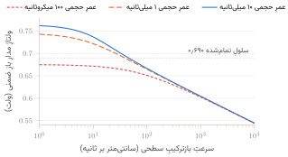
effective lifetime and implied Voc against surface
recombination velocity S (both faces, 150 um wafer)
bulk tau S cm/s tau_eff us implied Voc V
100 us 1 98.5 0.675
100 us 10 88.1 0.671
100 us 100 42.8 0.651
100 us 1000 7.0 0.602
1000 us 1 714.5 0.743
1000 us 10 411.8 0.721
1000 us 100 69.7 0.665
1000 us 1000 7.4 0.604
passivating the faces (1,000 -> 10 cm/s) adds 117 mV;
with a good bulk the surfaces set the voltage, which is
why every modern cell architecture is a passivation
story; the implied Voc is an upper bound - contacts and
the emitter take more before the finished cell's 0.690 V;
with a 10 ms bulk and S = 1 cm/s it reaches 0.762 V: Auger
recombination, which no process removes, sets the ceilingمثال 41.4 (سطح ولتاژ را تعیین میکند) پرسش. با طولِ عمرِ حجمیِ یک میلیثانیه، غیرفعالسازیِ سطح از ۱٬۰۰۰ به ۱۰ سانتیمتر بر ثانیه چقدر ولتاژ میافزاید؟ سقفِ ولتاژ کجاست؟
پاسخ. ولتاژِ ضمنی از 0.604 V به 0.721 V میرسد، یعنی ۱۱۷ میلیولت بیشتر. با حجمِ ۱۰ میلیثانیه و \(S = 1\)، به 0.762 V میرسد. این همان حدِ سیلیسیم در بخش 41.3.7 است.
تفسیر. وقتی حجم خوب است، سطح تعیینکننده است. هر گامِ معماریِ سلول، از سلولِ با پشتِ آلومینیومی تا سلولِ با تماسهای غیرفعال، یک سطح یا یک تماس را بیشتر غیرفعال کرده است (بخش 41.3.9). ولتاژِ ضمنی سقف است. تماسها و گسیلنده بیشتر میگیرند و سلولِ تمامشده به 0.690 V میرسد. وارسی: \(1/\tau = 1000 + 2\times10/0.015 = 2333\,\text{s}^{-1}\)، پس بیاوژه \(\tau = 429\,\mu\text{s}\)؛ اوژه آن را به \(412\,\mu\text{s}\) میرساند.
41.3.5 شبکهٔ جلو: سایه در برابرِ مقاومت
جریان باید از گسیلنده به انگشتیهای فلزی و از آنها به سیمهای اتصال برسد. انگشتیهای نزدیکتر مسیرِ جانبی در گسیلنده را کوتاه میکنند، اما سایهٔ بیشتری میاندازند. سه سهمِ تلفاتِ توان با فاصلهٔ انگشتیها \(s\) ایناند:
\[ \begin{aligned} p_\text{shade} &= \frac{w_\text{f}}{s} \\ p_\text{emitter} &= \frac{\rho_\square\,J_\text{mp}\,s^2}{12\,V_\text{mp}} \\ p_\text{finger} &= \frac{b^2\,r_\text{line}\,J_\text{mp}\,s}{3\,V_\text{mp}} \end{aligned} \tag{41.6}\]
اینجا \(w_\text{f}\) پهنای انگشتی، \(\rho_\square\) مقاومتِ لایهای گسیلنده، \(b\) طولِ انگشتی میانِ دو سیم و \(r_\text{line}\) مقاومتِ انگشتی در واحدِ طول است.
def grid_loss(s_cm: float, w_f: float = 0.003, rho_sheet: float = 120.0,
b_cm: float = 0.83, r_line: float = 0.67, j_mp: float = 0.0395,
v_mp: float = 0.58) -> dict[str, float]:
"""Power share lost by a finger spacing s: shading w_f/s, lateral
flow in the emitter, and the finger's own resistance (fingers of
length b between wires, r_line ohm/cm)."""
shade = w_f / s_cm
emitter = rho_sheet * j_mp * s_cm ** 2 / (12 * v_mp)
finger = b_cm ** 2 * r_line * j_mp * s_cm / (3 * v_mp)
return dict(shade=shade, emitter=emitter, finger=finger,
total=shade + emitter + finger)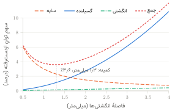
front grid: finger spacing against three losses
(30 um fingers, emitter 120 ohm/sq, fingers 8.3 mm long)
best spacing 1.3 mm: shading 2.3%, emitter 1.2%,
finger 0.1%; total 3.6% of the power
a lighter emitter (180 ohm/sq, less recombination) wants 1.1 mm
and loses 4.1%: the emitter, the grid and the voltage
are designed together; a printing defect that widens the
fingers or breaks one moves the cell off this optimumمثال 41.5 (گسیلنده، شبکه و ولتاژ با هم طراحی میشوند) پرسش. بهترین فاصلهٔ انگشتیها چقدر است؟ اگر گسیلنده سبکتر شود تا بازترکیب کم شود، چه میشود؟
پاسخ. حدودِ 1.3 mm با 3.6 % تلفات. با گسیلندهٔ 180 Ω/sq، فاصله به 1.1 mm میرسد و تلفات به 4.1 %.
تفسیر. گسیلندهٔ سبکتر ولتاژ را بالا میبرد، اما تلفاتِ شبکه را بیشتر میکند. سود فقط وقتی هست که ولتاژِ بهدستآمده بیش از نیم درصدِ تلفاتِ اضافه بیرزد. پس گسیلنده، شبکه و غیرفعالسازی با هم طراحی میشوند. عیبِ چاپ، مانندِ انگشتیِ پهنتر یا شکسته، سلول را از این بهینه دور میکند. وارسی: در \(s = 0.13\,\text{cm}\)، سایه \(0.003/0.13 = 2.3\%\) است.
41.3.6 مقاومتِ تماس
جریان از سیلیسیم به فلز از یک تماس میگذرد. کیفیتِ آن با مقاومتِ ویژهٔ تماس \(\rho_c\) بر حسبِ اهمسانتیمترمربع سنجیده میشود. اگر جریانِ نواری به پهنای \(s\) وارد انگشتیای به پهنای \(w_\text{f}\) شود، سهمِ تماس در مقاومتِ سری، به تقریبِ نخست:
\[ r_c \approx \frac{\rho_c\,s}{w_\text{f}} \tag{41.7}\]
def contact_share(rho_c: float, s_cm: float = 0.13, w_f: float = 0.003):
"""Contact part of the series resistance (ohm cm2) when the current
of a strip s wide enters a finger w_f wide: r_c ~ rho_c s / w_f
(contact longer than the transfer length, a first estimate)."""
return rho_c * s_cm / w_fcontact resistance in the series-resistance budget (total 0.64 ohm cm2)
rho_c mOhm cm2 contact part ohm cm2 share of the budget
1 0.043 7%
3 0.130 20%
10 0.433 68%
a well-fired contact takes under a tenth of the budget; a
poorly formed one takes most of it - the left wall of the
firing window (lesson B) is this term growing, and the
transfer-length test on sample cells measures itایده. تماسِ خوبپخته کمتر از یکدهمِ بودجهٔ مقاومتِ سری را میگیرد. تماسِ بد بیشترِ آن را. دیوارِ چپِ پنجرهٔ پخت (شکل 41.7) همین جمله است که بزرگ میشود. آزمونِ طولِ انتقال روی سلولهای نمونه آن را اندازه میگیرد. پهنای انگشتی هم در مخرج است. پس انگشتیِ باریکتر، که سایه را کم میکند (بخش 41.3.5)، تماسِ بهتری میخواهد. باز هم بدهبستانی که گامها را به هم میبندد.
مثال 41.6 (سهمِ تماس در بودجه) پرسش. با مقاومتِ ویژهٔ تماسِ ۳ میلیاهمسانتیمترمربع، فاصلهٔ 1.3 mm و انگشتیِ 30 µm، سهمِ تماس چقدر است؟
پاسخ. \(r_c = 0.003 \times 0.13 / 0.003 = 0.13\,\Omega\,\text{cm}^2\)، یعنی ۲۰ درصد از 0.64 Ω·cm².
تفسیر. اگر پخت کمی از مرکزِ پنجره به چپ برود و \(\rho_c\) سه برابر شود، سهمِ تماس ۶۸ درصد میشود. ضریبِ پرشدگی بهروشنی میافتد. نمودارِ ضریبِ پرشدگیِ هر محموله این را در همان روز نشان میدهد (بخش 41.4.9).
41.3.7 از حدِ سیلیسیم تا سلول
فصلِ ۱۰ نشان داد چه سهمی از نورِ خورشید بهخاطرِ گافِ انرژی از دست میرود (بخش 10.2.19). برای سیلیسیمِ واقعی، با بازترکیبِ ذاتی، حدِ بازده حدودِ 29.4 % گزارش شده است (Richter، Hermle و Glunz، ۲۰۱۳). سلولِ آموزشی از این حد با سه ضریب پایین میآید:
LIMIT = dict(voc=0.7613, jsc=0.04331, ff=0.8926) # Richter et al. 2013
JSC_LOSS = [("front reflection", 0.0005), ("metal shading", 0.0006),
("escape and incomplete collection", 0.0004)] # A/cm2, A-442from the silicon limit (29.43% - Richter et al. 2013) to the cell
step kept efficiency
current: optics and collection 0.965 28.40%
voltage: recombination 0.906 25.74%
fill factor: resistance, shunt 0.907 23.36%
the current loss of 1.5 mA/cm2 split:
front reflection 0.5 mA/cm2
metal shading 0.6 mA/cm2
escape and incomplete collection 0.4 mA/cm2
cell: 0.690 V x 41.8 mA/cm2 x 0.810 = 23.36%; 7.71 W
each step is owned by a process: texture and coating the
current, passivation the voltage, metallisation and firing
the fill factor (lesson B)ایده. هر ضریب مالِ یک گامِ فرایند است. جریان با بافتدهی و لایهٔ ضدبازتاب تعیین میشود. ولتاژ با غیرفعالسازی، و ضریبِ پرشدگی با فلزکاری و پخت. بزرگترین فاصله در ولتاژ و ضریبِ پرشدگی است، هر کدام حدودِ ۹ درصد. این بودجه زبانِ مشترکِ طراحِ سلول و مهندسِ فرایند است. هر بهبود باید بگوید کدام سطر را جابهجا میکند.
مثال 41.7 (بودجه در سه ضرب) پرسش. از حدِ 29.43 % و سه ضریبِ جریان، ولتاژ و ضریبِ پرشدگی، بازدهِ سلول را بیابید.
پاسخ. \(29.43 \times 0.965 = 28.40\)، سپس \(\times 0.906 = 25.74\)، سپس \(\times 0.907 = 23.36\,\%\). توانِ سلول \(0.2336 \times 330 \times 0.1 = 7.71\,\text{W}\) است.
تفسیر. دو ضریبِ ولتاژ و ضریبِ پرشدگی هر کدام حدودِ ۹ درصد از حد فاصله دارند. ضریبِ جریان ۳٫۵ درصد. پس بیشترین جای بهبود در غیرفعالسازی و تماس است. همین جهتِ تاریخِ معماریهای سلول است (بخش 41.3.9).
41.3.8 تغییرپذیریِ فرایند و پراکندگیِ بازده
هیچ دو سلولی یکسان نیستند. جریان کمی با بافت و پوشش تغییر میکند، چگالیِ جریانِ اشباع \(J_0\) با بازترکیب، مقاومتِ سری با چاپ و پخت، و چند سلول مقاومتِ موازیِ کم دارند. ولتاژ و ضریبِ پرشدگی از اینها میآیند:
\[ V_\text{oc} = \frac{kT}{q}\ln\!\left(\frac{J_\text{sc}}{J_0} + 1\right) \tag{41.8}\]
ضریبِ پرشدگی هم از رابطهٔ تجربیِ گرین با جملههای مقاومتِ سری و موازی حساب میشود (ماژولِ pvfab).
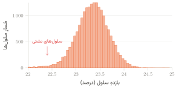
process variation of 20,000 teaching cells (A-442)
Jsc sd 0.6 %, J0 lognormal sd 25 %, Rs sd 0.08 ohm cm2,
shunt lognormal, 2 % of cells shunted (300 ohm cm2)
efficiency mean 23.34%, sd 0.34%; 1st percentile 22.36%
share of the variance from each parameter alone:
recombination (J0) 55%
shunts 17%
current (optics) 17%
series resistance 12%
the shunted 2 % form a separate tail: they are found by
sorting (low-light test, EL) and must not be mixed into
strings - the rest of the spread is binned by currentمثال 41.8 (پراکندگی از کجا میآید؟) پرسش. کدام پارامتر بیشترین سهم را در پراکندگیِ بازده دارد؟ دنبالهٔ چپ چیست؟
پاسخ. \(J_0\)، یعنی بازترکیب، با ۵۵ درصد. سپس نشتی و جریان، هر کدام ۱۷ درصد، و مقاومتِ سری ۱۲ درصد. دنبالهٔ چپ همان ۲ درصد سلولِ نشتی است.
تفسیر. پایشِ فرایند باید بیشتر روی گامهایی باشد که بازترکیب را تعیین میکنند. این همان روشِ مؤلفههای واریانسِ بخش 40.4.7.3 است. سلولهای نشتی جمعیتی جدا هستند، نه بخشی از پراکندگیِ عادی. آنها با آزمونِ نورِ کم یا جریانِ تاریک جدا میشوند (بخش 41.4.10) و نباید به رشته بروند. بقیهٔ پراکندگی با دستهبندیِ سلول بر اساسِ جریان مهار میشود (بخش 41.4.11).
41.3.9 معماریهای سلول
cell architectures as passivation steps (rough teaching ranges,
A-442; makers' data sheets decide)
type what it adds eta % bifacial
Al-BSF aluminium rear: simple, high recombination ~20 none
PERC passivated rear with local contacts ~22-23 ~0.70
TOPCon tunnel oxide + doped poly-Si contact ~24-25 ~0.80
HJT thin amorphous-Si layers on both faces ~24-25 ~0.85+
IBC all contacts at the back, no front shading ~24-26 low
each step cuts recombination at one more surface or
contact (lesson A, passivation): the voltage rises, and
with it the temperature coefficient improvesایده. فصلِ ۱۰ جریانِ فرایندِ سه معماری را گام به گام مقایسه کرد (مثال 10.17). اینجا همان فهرست از نگاهِ بازترکیب دیده میشود: فهرستِ سطحها و تماسهایی که یکییکی غیرفعال شدهاند. سلولِ با پشتِ آلومینیومی ساده بود. سلولِ با پشتِ غیرفعال، پشت را غیرفعال کرد و فقط در نقطههایی تماس گذاشت. سلولِ با تماسِ تونلی خودِ تماس را غیرفعال کرد. سلولِ ناهمگون دو سطح را با لایهٔ نازکِ سیلیسیمِ آمورف پوشاند. سلولِ با همهٔ تماسها در پشت، سایهٔ جلو را هم برداشت. بازدهها و ضریبِ دوطرفگی این جدول بازههای تقریبیِ آموزشیاند. برای خرید، برگهٔ مشخصاتِ سازنده و گواهیهایش تصمیم میگیرند (بخش 41.5.15).
41.3.10 ضریبِ دمایی از قانونِ دیود
ولتاژِ مدارِ باز با گرما پایین میآید، چون \(n_i\) بهشدت با دما بالا میرود. از قانونِ دیود:
\[ \frac{dV_\text{oc}}{dT} = -\frac{E_{g0}/q - V_\text{oc} + \gamma\,kT/q}{T} \tag{41.9}\]
Voc temperature coefficient from the diode law:
dVoc/dT = -(Eg0/q - Voc + gamma kT/q) / T, Eg0 1.206 V, gamma 3
cell Voc V dVoc/dT mV/K per cent per K
0.620 -2.22 -0.359
0.690 -1.99 -0.288
0.740 -1.82 -0.246
the PVM-550 data sheet gives -0.27 %/K for the module's
Voc; the 0.690 V cell gives -0.288 %/K: the same
physics - a higher Voc loses less per kelvin, worth about
4.5 % of Voc at a 65 C cell between the 0.62 and 0.74 V cellsایده. سلولی با ولتاژِ بالاتر در هر کلوین سهمِ کمتری از دست میدهد. پس غیرفعالسازیِ بهتر دو بار سود دارد: یک بار در شرایطِ استاندارد و یک بار در گرمای ساختگاه. ضریبِ 0.27 %/K برگهٔ مشخصات و 0.288 %/K این حساب از یک فیزیک میآیند. در اقلیمِ گرمِ نیروگاهِ P، این فرق در انرژیِ سالانه دیده میشود (بخش 10.2.10).
مثال 41.9 (چهل کلوین گرمای ساختگاه، دو سلول) پرسش. سلولِ 0.62 V و سلولِ 0.74 V در سلولِ 65 °C، یعنی ۴۰ کلوین بالای شرایطِ استاندارد، چه سهمی از ولتاژشان را از دست میدهند؟
پاسخ. \(0.359 \times 40 = 14.4\,\%\) در برابرِ \(0.246 \times 40 = 9.8\,\%\). فرق حدودِ ۴٫۵ درصد از ولتاژ است.
تفسیر. همین فرق در ساعتهای گرمِ ظهرِ تابستان، که بیشترِ انرژیِ نیروگاه را میسازند، تکرار میشود. پس در اقلیمِ گرم، غیرفعالسازیِ بهتر بیش از عددِ برگهٔ مشخصات سود دارد. مقایسهٔ انرژیِ سالانه با مدلِ ساعتیِ فصلِ ۱۰ انجام میشود (بخش 10.2.10). وارسی: \((1.206 - 0.69 + 3 \times 0.0257)/298 = 1.99\,\text{mV/K}\)، و \(1.99/690 = 0.288\,\%\) بر کلوین.
41.3.11 بهداماندازیِ نور و ضخامتِ ویفر
فصلِ ۱۰ نشان داد نورِ نزدیکِ 1000 nm در یک گذر از ویفر فقط بخشی جذب میشود (مثال 10.2). سه حالت را مقایسه کنید: یک گذر، دو گذر با آینهٔ پشتی، و بهداماندازیِ نور با بافت و آینه. برای حالتِ سوم، حدِ نظریِ جذب برای ضریبِ شکستِ سیلیسیم \(n_\text{Si}\) و ضریبِ جذبِ \(\alpha\) این است:
\[ A(\lambda) = 1 - \frac{1}{1 + 4 n_\text{Si}^2\,\alpha(\lambda)\,W} \tag{41.10}\]
ALPHA = {400: 9.5e4, 500: 1.1e4, 600: 4.1e3, 700: 1.9e3, 800: 850.0,
900: 306.0, 1000: 64.0, 1050: 16.3, 1100: 3.5} # 1/cm, textbook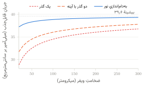
current a wafer can absorb (blackbody sun as ch 10, 39.6 max)
optics 50 um 100 um 150 um 180 um
one pass 32.5 34.5 35.5 35.8
two passes (mirror) 34.5 36.0 36.8 37.1
light trapping (4n2) 38.3 38.9 39.1 39.1
mA/cm2; light trapping (texture plus a reflecting rear)
lets a 100 um wafer absorb more than a 180 um wafer in one
pass - why texture and the rear mirror allowed thinner
wafers (lesson B, silicon per watt)ایده. با بهداماندازیِ نور، ویفرِ ۱۰۰ میکرومتری بیش از ویفرِ ۱۸۰ میکرومتری در یک گذر جذب میکند. همین بافت و آینهٔ پشتی بود که ویفرِ نازکتر را ممکن کرد (بخش 41.4.5). بیشینه، 39.6 mA/cm²، از خورشیدِ جسمِ سیاهِ فصلِ ۱۰ میآید و برای مقایسه است. جریانِ واقعی با طیفِ استاندارد بیشتر است. ضریبهای جذب گردشدهٔ جدولهای درسیاند.
41.3.12 مقاومتِ سری از دو منحنی
مقاومتِ سریِ ماژول را بیمدل هم میتوان یافت. دو منحنی در دو تابش و یک دما گرفته میشود. منحنیِ کمنور به اندازهٔ \(\Delta I = I_\text{sc,1} - I_\text{sc,2}\) بالا برده میشود. فاصلهٔ ولتاژِ نقطههای متناظر برابرِ \(R_s\,\Delta I\) است:
\[ R_s \approx \frac{V_2(I) - V_1(I + \Delta I)}{\Delta I} \tag{41.11}\]
series resistance from two curves (1000 and 600 W/m2, 25 C, ch 10 model)
shift the low curve up by dI = 5.59 A; the voltage gap
between matching points is Rs x dI
points at 60 / 70 / 80 % of Isc: 0.184, 0.188, 0.198 ohm
estimate 0.190 ohm; fitted model value 0.172 ohm (+11%):
the method assumes the curves differ only by the shift -
the diode and shunt terms also move with irradiance;
the two-curve method needs no model: a rising Rs between
the factory flash and a field curve points at joints and
ribbons (cold solder, corrosion), not at the cellsایده. این روش فرض میکند دو منحنی فقط با جابهجایی فرق دارند. اما جملههای دیود و نشتی هم با تابش تغییر میکنند، پس برآورد حدودِ ۱۰ درصد بالاتر از مدل است. فایدهاش در مقایسه است. اگر مقاومتِ سری میانِ فلشِ کارخانه و منحنیِ میدانی بالا برود، علت در اتصالها و نوارها است، مانندِ لحیمِ سرد یا خوردگی، نه در سلولها (بخش 41.5.9).
41.3.13 نقره در هر وات
silver in the front and rear contacts (teaching amounts)
mg a cell mg/W kg for Plant P (60 MWp)
100 13.0 779
70 9.1 545
40 5.2 312
silver is the costliest material per gram in the cell;
thinner fingers, more wires and partial copper cut it, and
each change moves the grid optimum of lesson A and the
firing window of lesson B - a BOM change that needs
re-qualification (lesson C)ایده. نقره در سلول گرانترین ماده برای هر گرم است. انگشتیهای باریکتر، سیمهای بیشتر و جانشینیِ بخشی با مس آن را کم میکنند. اما هر تغییر بهینهٔ شبکه (بخش 41.3.5) و پنجرهٔ پخت (بخش 41.4.9) را جابهجا میکند. پس تغییرِ فهرستِ مواد است و صلاحیتسنجیِ دوباره میخواهد (بخش 41.5.15).
- معادلهٔ 41.1 را توضیح دهید. چرا مقاومتِ ویژهٔ ویفر چگالیِ آلاینده را میگوید؟
- حاملِ اقلیت در ویفرِ نوعِ p کدام است؟
- چرا ناحیهٔ تهی تقریباً همه در پایه است؟
- طولِ پخش را تعریف کنید. برای ۱۰ میکروثانیه چقدر است؟
- معادلهٔ 41.4 را توضیح دهید. کدام جمله را هیچ فرایندی برنمیدارد؟
- چرا ولتاژِ مدارِ بازِ ضمنی یک سقف است؟
- سه تلفاتِ شبکهٔ جلو کداماند و هر کدام با فاصلهٔ انگشتیها چگونه تغییر میکند؟
- چرا گسیلنده، شبکه و غیرفعالسازی با هم طراحی میشوند؟
- بودجهٔ تلفات از حدِ سیلیسیم تا سلول کدام سه ضریب را دارد؟
- کدام پارامترِ فرایند بیشترین سهم را در پراکندگیِ بازده دارد؟
- چرا سلولهای نشتی جمعیتی جدا هستند؟
- چرا ولتاژِ بالاتر ضریبِ دمایی را بهتر میکند؟
- معادلهٔ 41.10 را توضیح دهید. چرا بهداماندازیِ نور ویفرِ نازک را ممکن کرد؟
- روشِ دو منحنی برای مقاومتِ سری چه فرضی دارد؟
- چرا کاهشِ نقره تغییرِ فهرستِ مواد است؟
- معادلهٔ 41.7 را توضیح دهید. چرا انگشتیِ باریکتر تماسِ بهتری میخواهد؟
41.4 ب. مسیرِ ماده تا سلول
فصلِ ۱۰ گامهای ساختِ سلول را به زبانِ عملکردی آورد و ویفر، آزمون و ردهبندیِ سلول را معرفی کرد (بخش 10.3.3، بخش 10.3.2، بخش 10.3.5). این بخش همان مسیر را از چشمِ مهندسِ فرایند و خریدار میبیند. هر گام چه مشخصهای میسازد؟ چگونه اندازهگیری میشود؟ و تغییرش در کجای ماژول دیده میشود؟ قاعدهٔ فصل اینجا هم برقرار است: هدف، متغیرِ کنترلشده و عیب، هرگز تنظیم.
41.4.1 نقشهٔ فرایندِ سلول
cell process map (purpose / controlled variable / defect)
1 wafer inspection: reject cracked or thin wafers
controls: thickness, cracks, resistivity
can cause: micro-crack, chipped edge
2 texturing: trap light by surface structure
controls: reflectance
can cause: uneven texture -> colour, current loss
3 junction formation: make the p-n junction
controls: sheet resistance
can cause: non-uniform doping -> FF loss
4 passivation: slow surface recombination
controls: lifetime, layer thickness
can cause: poor passivation -> Voc loss
5 anti-reflection coating: cut reflection, add passivation
controls: thickness, colour
can cause: colour mismatch, current loss
6 metallisation: print contacts and fingers
controls: finger width, line resistance
can cause: broken fingers -> Rs, hot spots
7 firing / thermal step: form contacts
controls: temperature profile
can cause: poor contact -> Rs; warping
8 edge isolation: stop shunts at the edge
controls: edge leakage
can cause: shunt -> low Rsh, reverse-bias heating
9 cell sorting: bin by current and appearance
controls: IV, EL, colour
can cause: mixed bins -> mismatch
10 laser cutting (half-cut): halve the cell current
controls: cut quality
can cause: edge damage -> cracks later
each step has a measurable output; the cell's Voc, Jsc and
FF are the sum of all of them, which is why the line keeps
in-line metrology after the steps that set each oneایده. هر گام یک خروجیِ اندازهپذیر دارد: بازتاب پس از بافتدهی، مقاومتِ لایهای پس از تشکیلِ پیوند، طولِ عمر پس از غیرفعالسازی، ضخامت و رنگ پس از پوشش، و منحنیِ کامل در پایان. ولتاژ، جریان و ضریبِ پرشدگیِ سلول جمعِ اثرِ همهٔ این گامهاست. برای همین خط پس از هر گامی که یکی از آنها را تعیین میکند اندازهشناسیِ درخط دارد. اگر ضریبِ پرشدگیِ یک محموله افتاد، نخستین پرسش این است: کدام گام آن را میسازد و آخرین اندازهگیریِ آن گام چه میگفت؟
41.4.2 خلوص: آلاینده در میلیون، فلز در تریلیون
مادهٔ خام سیلیسیم با «تعدادِ نُهها» توصیف میشود: ۶N یعنی ۹۹٫۹۹۹۹ درصد. اما همهٔ ناخالصیها یکسان نیستند. اتمِ فلزی در میانهٔ گاف یک تله میسازد که حاملها را بازترکیب میکند. با سطحِ مقطعِ گیراندازیِ \(\sigma\)، سرعتِ گرماییِ \(v_\text{th}\) و چگالیِ تلهٔ \(N_t\):
\[ \tau = \frac{1}{\sigma\,v_\text{th}\,N_t} \tag{41.12}\]
purity: dopants are counted in ppm, metals in ppt
purity impurity atoms/cm3 (base doping is 1e16)
6 N 5.0e+16
9 N 5.0e+13
11 N 5.0e+11
a metal trap with capture cross-section 4e-14 cm2:
trap density lifetime from it alone (1/sigma v N)
1e+10 250.0 us (2e-13 of the atoms)
1e+11 25.0 us (2e-12 of the atoms)
1e+12 2.5 us (2e-11 of the atoms)
one metal atom in 5e11 silicon atoms already limits the
lifetime to 25 us (implied Voc 0.635 V with good surfaces);
a dopant at that level would change nothing - so the
specification counts metals separately, and gettering and
clean handling protect the lifetime along the whole lineایده. یک اتمِ فلز در هر \(5\times10^{11}\) اتمِ سیلیسیم طولِ عمر را به ۲۵ میکروثانیه میرساند. یک آلاینده در همین سطح هیچ اثری ندارد. پس مشخصهٔ ماده فلزها را جدا میشمارد. جذبِ ناخالصی (به انگلیسی gettering) و دستکاریِ تمیز طولِ عمر را در سراسرِ خط حفظ میکنند. خریدارِ ماژول این را مستقیم نمیبیند. آن را در ولتاژِ سلول و در ممیزیِ کارخانه میبیند (بخش 39.5.3).
مثال 41.10 (یک اتمِ فلز در پانصد میلیارد) پرسش. چگالیِ تلهٔ فلزی \(10^{11}\,\text{cm}^{-3}\) است. این چه سهمی از اتمهاست؟ طولِ عمر و ولتاژِ ضمنی چقدر میشوند؟
پاسخ. \(10^{11}/(5\times10^{22}) = 2\times10^{-12}\). از معادلهٔ 41.12، \(\tau = 1/(4\times10^{-14} \times 10^{7} \times 10^{11}) = 25\,\mu\text{s}\). با سطحهای خوب، ولتاژِ ضمنی حدودِ 0.635 V است.
تفسیر. سیلیسیمی که دوازده نُه خلوص دارد، اگر همان ناخالصی فلز باشد، ۸۶ میلیولت از ولتاژِ ضمنیِ سلولِ خوب را میگیرد. پس «تعدادِ نُهها» بدونِ گفتنِ نوعِ ناخالصی چیزی نمیگوید. ممیزیِ کارخانهٔ ویفر و سلول باید کنترلِ آلودگیِ فلزی را بپرسد (بخش 39.5.3).
41.4.3 جدایشِ آلاینده در طولِ شمش
در رشدِ شمش از مذاب، بیشترِ آلایندهها در مذاب میمانند. نسبتِ غلظت در جامد به غلظت در مذاب ضریبِ جدایش \(k_\text{s}\) است. اگر \(f\) سهمِ جامدشده و \(C_0\) غلظتِ آغازینِ مذاب باشد، رابطهٔ انجمادِ عادی (شایل) میگوید:
\[ C_s(f) = k_\text{s}\,C_0\,(1 - f)^{k_\text{s} - 1} \tag{41.13}\]
def scheil(f: float, k: float) -> float:
"""Dopant in the solid at fraction f solidified, relative to the
melt's starting concentration (normal freezing, Scheil)."""
return k * (1 - f) ** (k - 1)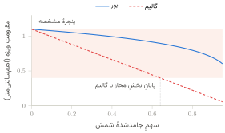
resistivity along a pulled ingot (seed end 1.1 ohm cm, window 0.4-1.1)
share solidified boron (k 0.8) gallium (k 0.008)
0.00 1.10 1.10
0.25 1.04 0.83
0.50 0.96 0.55
0.75 0.83 0.28
0.90 0.69 0.11
usable length in the window: boron 99%, gallium 64%
gallium stays in the melt, so the tail gets heavily doped;
boron is even but pairs with oxygen into a defect that
costs power in the first hours of sunlight - the choice is
a trade-off the module buyer sees only through the maker's
degradation data (light-induced degradation in the dossier)مثال 41.11 (گالیم یا بور: بدهبستانی که خریدار نمیبیند) پرسش. با پنجرهٔ 0.4 تا 1.1 Ω·cm، چه سهمی از شمش با هر آلاینده در پنجره است؟ چرا کارخانهها گالیم را برگزیدهاند؟
پاسخ. با بور ۹۹ درصد و با گالیم ۶۴ درصد.
تفسیر. گالیم در مذاب میماند و تهِ شمش را پُرآلاییده میکند. پس بخشی از شمش از پنجره بیرون میرود، یا پنجره باید پهنتر شود. بور یکنواختتر است، اما با اکسیژنِ سیلیسیم جفت میشود و عیبی میسازد که در نخستین ساعتهای آفتاب توان را کم میکند: تخریبِ نوری (بخش 10.3.14). این بدهبستان در کارخانهٔ شمش حل میشود. خریدارِ ماژول آن را فقط در دادهٔ تخریبِ سازنده میبیند. پس دادهٔ تخریبِ نوری باید در پروندهٔ خرید باشد. وارسی: \((1 - 0.5)^{-0.992} = 1.99\)، پس مقاومتِ ویژه در نیمهٔ شمش نصف میشود: \(1.1/1.99 = 0.55\).
41.4.4 مسیرهای ویفر از نگاهِ طولِ عمر
wafer routes through their lifetime spread (surfaces S = 10 cm/s)
route median tau mean iVoc sd iVoc 5th pct
pulled mono (Cz) 1500 us 0.725 4.6 mV 0.717
cast mono 600 us 0.712 10.1 mV 0.695
multi (cast) 150 us 0.681 18.9 mV 0.647
pulled mono leads by 44 mV on average and its spread is narrower:
grain boundaries and impurities shorten and scatter the
lifetime of cast wafers; the cheaper route costs voltage
and a wider bin ladder - the route is chosen upstream and
shows only in the cells' data (lesson B, binning)ایده. مسیرِ ویفر در کارخانهٔ شمش انتخاب میشود و در دادهٔ سلول دیده میشود. شمشِ کشیدهشده طولِ عمرِ بلند و یکنواخت دارد. ویفرِ ریختگی مرزدانه و ناخالصیِ بیشتری دارد. پس طولِ عمرش کوتاهتر و پراکندهتر است. مسیرِ ارزانتر هم ولتاژ میگیرد و هم نردبانِ ردهها را پهنتر میکند (بخش 41.4.14). ولتاژهای این جدول ضمنیاند، با سطحهای خوب. سلولِ تمامشده از هر مسیر پایینتر است.
41.4.5 سیلیسیم برای هر وات
silicon in the PVM-550's cells (wafer + kerf, A-443)
wafer um kerf um g a wafer g with kerf g/W t for 60 MWp
180 120 13.8 23.1 2.99 180
150 55 11.5 15.8 2.04 123
130 45 10.0 13.5 1.75 105
thinner wafers and thinner wire cut the silicon a watt;
the cost is handling: a thin wafer breaks more easily and
cracks hide until stringing and lamination (lesson C)ایده. هر ویفر با افتِ برش همراه است: بخشی از شمش که سیمِ برش به پودر تبدیل میکند. ویفرِ نازکتر و سیمِ باریکتر سیلیسیمِ هر وات را از حدودِ ۳ به کمتر از ۲ گرم رساندهاند. برای ۶۰ مگاوات، این فرقِ حدودِ ۷۵ تن سیلیسیم است. هزینهٔ آن دستکاری است. ویفرِ نازک آسانتر میشکند و ترکِ پنهانش تا رشتهسازی و لمینیتکاری دیده نمیشود (بخش 41.5.9). همین عدد در ردپای کربنِ ماژول هم میآید (بخش 39.11).
مثال 41.12 (سیلیسیمِ نیروگاه) پرسش. با ویفرِ ۱۵۰ میکرومتری، افتِ برشِ ۵۵ میکرومتری و سلولِ 7.71 W، سیلیسیمِ هر وات و کلِ نیروگاه چقدر است؟
پاسخ. هر ویفر با برش \(330 \times 0.0205 \times 2.33 = 15.8\,\text{g}\) است. پس \(15.8/7.71 = 2.04\,\text{g/W}\) و برای ۶۰ مگاوات حدودِ ۱۲۳ تن.
تفسیر. حدودِ یکچهارمِ این سیلیسیم پودرِ برش است. بازیافتِ این پودر و کاهشِ افتِ برش همانقدر ردپای کربن را کم میکند که ویفرِ نازکتر. هر دو در دادهٔ محیطیِ سازنده میآیند (بخش 39.11).
41.4.6 ویفرهای ورودی
incoming wafers: thickness capability and hidden cracks
thickness of 500 wafers: mean 150.4 um, sd 4.0; Cp 1.26, Cpk 1.23
cracked wafers 0.5%; in-line camera finds 90%
cracks passed on to the cell line: 0.05% (500 ppm)
a crack that passes breaks a wafer in a later step (lost
work) or, worse, survives into a module (lesson C); the
camera's find rate is measured with seeded samples, like
any inspection (ch 40, sampling and detection)ایده. ضخامت مشخصهای اندازهپذیر است و با توانِ فرایند سنجیده میشود (بخش 40.4.7). \(C_\text{pk}\) برابر با 1.23 یعنی تأمینکنندهٔ ویفر توانمند است، اما حاشیهاش زیاد نیست. ترک فرق دارد. یا هست یا نیست، و دوربینِ درخط بخشی از آن را نمیبیند. ۵۰۰ ترک در هر میلیون ویفر از دوربین میگذرند. بیشترشان در گامی بعدی میشکنند و کار هدر میرود. بقیه به ماژول میرسند. نرخِ کشفِ دوربین هم مانندِ هر بازرسیِ دیگری با نمونههای ترکدارِ شناختهشده سنجیده میشود (بخش 40.5.15).
مثال 41.13 (توانِ ضخامت با دست) پرسش. ضخامت با میانگینِ 150.4 و انحرافِ معیارِ 4.0 µm در بازهٔ 135 تا 165 µm است. \(C_\text{pk}\) چقدر است؟
پاسخ. \(C_\text{pk} = \min(150.4 - 135,\ 165 - 150.4)/(3 \times 4.0) = 14.6/12 = 1.22\).
تفسیر. فرایند کمی به سمتِ حدِ بالا رانده است. اگر به مرکز برگردد، \(C_\text{pk}\) به 1.25 میرسد. سودِ بزرگتر از کمکردنِ پراکندگی است. این وظیفهٔ تأمینکنندهٔ ویفر است. کارخانهٔ سلول آن را با دادههای دریافت میپاید (بخش 40.4.7).
41.4.7 پوششِ ضدبازتاب
بازتابِ سطحِ صیقلیِ سیلیسیم حدودِ یکسوم است. لایهای نازک با ضریبِ شکستِ میانی بازتاب را کم میکند. موجِ بازتابیده از دو سطحِ لایه همدیگر را خنثی میکنند. این در پوششِ ربعموج رخ میدهد:
\[ n_1\,d = \frac{\lambda_0}{4}, \qquad n_1 \approx \sqrt{n_0\,n_\text{Si}} \tag{41.14}\]
def reflectance(lam_nm: float, n0: float, n1: float, d_nm: float) -> float:
"""Normal-incidence reflectance of one thin layer (index n1, thickness
d) between a medium n0 and silicon (no absorption)."""
ns = _n_si(lam_nm)
r01, r12 = (n0 - n1) / (n0 + n1), (n1 - ns) / (n1 + ns)
ph = cmath.exp(-2j * 2 * math.pi * n1 * d_nm / lam_nm)
r = (r01 + r12 * ph) / (1 + r01 * r12 * ph)
return abs(r) ** 2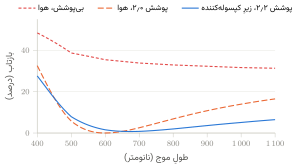
reflectance of polished silicon, 400-1100 nm (flat weighting)
case mean R x2 bounces
bare, in air 35.0% 12.28%
75 nm n 2.0, in air 9.0% 0.82%
75 nm n 2.0, under encapsulant 7.2% 0.52%
75 nm n 2.2, under encapsulant 5.4% 0.29%
the minimum sits at 4 n d = 600 nm; 5 nm thicker moves it to 640 nm,
which the eye sees as colour - cells are sorted by colour
so a module looks even; under the encapsulant a higher
index works better; texture sends the reflected light to a
second facet (about R squared): optics are designed for the
module, not for the bare cellایده. کمینهٔ بازتاب در \(4 n_1 d\) است. پنج نانومتر ضخامتِ بیشتر آن را ۴۰ نانومتر جابهجا میکند، و چشم این را رنگ میبیند. پس سلولها بر اساسِ رنگ هم دستهبندی میشوند تا ماژول یکنواخت دیده شود. زیرِ کپسولهکننده، که ضریبش حدودِ 1.5 است، ضریبِ بالاتر بهتر کار میکند. بافت هم نورِ بازتابیده را به وجهِ دیگری میفرستد و بازتاب حدوداً به توانِ دو میرسد. پس اپتیک برای ماژول طراحی میشود، نه برای سلولِ برهنه. آزمونِ درخطِ این گام بازتاب و رنگ است، نه ضخامت بهتنهایی.
مثال 41.14 (ضخامت، رنگ و محیط) پرسش. کمینهٔ بازتابِ پوششِ 75 nm با ضریبِ ۲٫۰ کجاست؟ با 80 nm چه؟ بهترین ضریب در هوا و زیرِ کپسولهکننده، در 600 nm، چقدر است؟
پاسخ. \(4 \times 2.0 \times 75 = 600\,\text{nm}\) و \(4 \times 2.0 \times 80 = 640\,\text{nm}\). در هوا \(\sqrt{1 \times 3.94} = 1.98\). زیرِ کپسولهکننده \(\sqrt{1.5 \times 3.94} = 2.43\).
تفسیر. پوششِ بهینه برای سلولِ برهنه زیرِ ماژول بهینه نیست. اپتیک برای محیطِ نهاییِ سلول طراحی میشود. پنج نانومتر ضخامت چشم را به رنگِ دیگری میبرد. پس ضخامتِ پوشش هم برای بازده و هم برای ظاهرِ ماژول کنترل میشود.
مثال 41.15 (ارزشِ حالِ یک درصد) پرسش. تخریبِ نوریِ ۲ درصد و ۰٫۳ درصد را با 110 GWh در سال، 70 u/MWh، ۲۵ سال و نرخِ 7.5 % مقایسه کنید.
پاسخ. ضریبِ ارزشِ حالِ ۲۵ سال \((1 - 1.075^{-25})/0.075 = 11.15\) است. ۲ درصد: \(2.2 \times 70 = 154\) هزار واحد در سال و \(154 \times 11.15 = 1717\). ۰٫۳ درصد: \(23.1 \times 11.15 = 257\). فرق حدودِ 1,460 k u.
تفسیر. این فرق با چند درصد اختلافِ قیمتِ ماژول قابلِمقایسه است. پس پیشنهادی با ماژولِ کمی گرانتر و تخریبِ نوریِ کمتر ممکن است ارزانتر باشد. ارزیابیِ پیشنهادها با قیمتِ ارزیابیشده این را نشان میدهد (بخش 39.5.2). روشِ ارزشِ حال از فصلِ ۲۱ است (فصل 21).
41.4.8 مقاومتِ لایهای و نقشهٔ ویفر
مقاومتِ لایهایِ گسیلنده با کاوهٔ چهارنقطهای اندازه گرفته میشود. جریان از دو سوزنِ بیرونی میگذرد و ولتاژ میانِ دو سوزنِ درونی خوانده میشود. برای لایهای نازک و پهن:
\[ R_\square = \frac{\pi}{\ln 2}\,\frac{V}{I} \approx 4.532\,\frac{V}{I} \tag{41.15}\]
emitter sheet resistance by four-point probe (9 points)
R_sheet = (pi / ln 2) V / I = 4.532 V / I
point (-1,-1) V/I 28.09 ohm -> 127.3 ohm/sq
point (-1,+0) V/I 27.65 ohm -> 125.3 ohm/sq
point (-1,+1) V/I 28.28 ohm -> 128.1 ohm/sq
point (+0,-1) V/I 27.63 ohm -> 125.2 ohm/sq
point (+0,+0) V/I 26.26 ohm -> 119.0 ohm/sq
point (+0,+1) V/I 27.82 ohm -> 126.1 ohm/sq
point (+1,-1) V/I 28.67 ohm -> 129.9 ohm/sq
point (+1,+0) V/I 27.19 ohm -> 123.2 ohm/sq
point (+1,+1) V/I 28.57 ohm -> 129.5 ohm/sq
mean 126.0 ohm/sq; non-uniformity (max-min)/(max+min) 4.4%
edges higher than the centre: the grid of lesson A was
designed for 120 ohm/sq, so the edges lose a little more
to lateral flow; the trend, not one point, is controlledایده. لبهها از مرکز بالاترند. شبکهٔ جلو برای 120 Ω/sq طراحی شده بود (بخش 41.3.5). پس لبهها کمی بیشتر به جریانِ جانبی میبازند. روند کنترل میشود، نه یک نقطه: میانگین و ناهمگنیِ نقشه در هر محموله روی نمودارِ کنترل میروند (بخش 40.4.8).
مثال 41.16 (از ولتاژ به مقاومتِ لایهای) پرسش. در مرکزِ ویفر \(V/I = 26.26\,\Omega\) خوانده شده است. مقاومتِ لایهای چقدر است؟ ناهمگنیِ نقشه با بیشینهٔ 129.9 چقدر است؟
پاسخ. \(R_\square = 4.532 \times 26.26 = 119.0\,\Omega/\text{sq}\). ناهمگنی \((129.9 - 119.0)/(129.9 + 119.0) = 4.4\,\%\).
تفسیر. ضریبِ 4.532 فقط برای لایهای نازک و پهن و سوزنهای همفاصله درست است. نزدیکِ لبهٔ ویفر ضریبِ تصحیح لازم است. پس نقطههای نقشه از لبه فاصله میگیرند و روشِ اندازهگیری در طرحِ کنترل نوشته میشود.
41.4.9 پخت بهعنوانِ پنجرهٔ فرایند
پختِ تماس گامی گرمایی است که فلزِ چاپشده را به سیلیسیم میچسباند. کم باشد، تماس شکل نمیگیرد و مقاومتِ سری بالا میماند. زیاد باشد، فلز به پیوند میرسد و آن را نشتی میکند. میانِ این دو یک پنجرهٔ فرایند هست. در اینجا محورِ افقی یک تنظیمِ نرمالشده میانِ صفر و یک است. هیچ دما یا زمانی نیست. این یک مدلِ آموزشی است، نه دستورِ ساخت.
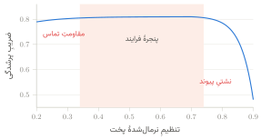
firing as a process window (normalised setting 0..1)
best fill factor 0.810; window for best - 0.005: 0.34 to 0.74
run at the centre 0.54 with a spread of sd 0.03: Cpk 2.25
too little: contacts do not form (series resistance);
too much: the metal reaches the junction (shunts) - the
window is found by experiment on the line (ch 40, the
factorial) and guarded by the fill factor of each lotایده. پنجره با آزمایش روی خط پیدا میشود، با همان آزمایشِ عاملیِ مثال 40.7. سپس فرایند در مرکزِ پنجره نگه داشته میشود. \(C_\text{pk}\) این بار برای تنظیم حساب میشود، نه برای محصول. پنجرهٔ این سلولِ آموزشی پهن است. هر تغییرِ خمیرِ فلز، گسیلنده یا ضخامتِ پوشش پنجره را جابهجا میکند. پس پس از هر تغییرِ ماده پنجره دوباره پیدا میشود، و ضریبِ پرشدگیِ هر محموله نگهبانِ آن است.
مثال 41.17 (توانِ یک تنظیم) پرسش. پنجرهٔ پخت از 0.34 تا 0.74 است و فرایند در مرکز با انحرافِ معیارِ 0.03 کار میکند. \(C_\text{pk}\) تنظیم چقدر است؟ اگر پنجره پس از تغییرِ خمیرِ فلز به 0.45 تا 0.65 تنگ شود چه؟
پاسخ. \(C_\text{pk} = \min(0.54 - 0.34,\ 0.74 - 0.54)/(3 \times 0.03) = 2.22\). با پنجرهٔ تنگ، \(0.10/0.09 = 1.11\).
تفسیر. توانِ فرایند را میتوان برای تنظیمها هم حساب کرد، نه فقط برای محصول. پنجرهٔ تنگتر با همان پراکندگیِ تنظیم مرزی میشود. پس پس از تغییرِ ماده، یا پنجره دوباره پهن میشود یا پراکندگیِ تنظیم کم. این تصمیم با آزمایش روی خط گرفته میشود (مثال 40.7). خروجیِ برنامه 2.25 است، چون مرزهای پنجره روی گامهای نیمصدم پیدا شدهاند.
41.4.10 نشتی و نورِ کم
جداسازیِ لبه نمیگذارد جلو و پشتِ سلول از لبه به هم برسند. اگر کامل نباشد، مقاومتِ موازی کم میشود.
edge shunts show at low light (teaching cell)
shunt ohm cm2 eff at 1000 W/m2 at 200 W/m2 relative
5000 23.36% 22.23% 0.952
1000 23.10% 21.03% 0.910
300 22.35% 17.55% 0.785
a shunt that costs a little at full sun costs much more at
200 W/m2, where the plant spends many hours: cells are
tested at low light or by dark current before sortingایده. نشتیای که در آفتابِ کامل کمی هزینه دارد، در 200 W/m² خیلی بیشتر میگیرد. سلولِ نشتی ۲۱ درصد از بازدهِ نسبیاش را در نورِ کم از دست میدهد. نیروگاه ساعتهای زیادی در نورِ کم کار میکند: صبح، عصر و روزهای ابری (بخش 10.2.11). پس سلولها پیش از دستهبندی در نورِ کم یا با جریانِ تاریک آزموده میشوند. این همان دنبالهٔ جدای شکل 41.3 است.
مثال 41.18 (نشتی در صبح و عصر) پرسش. بازدهِ نسبیِ سلول با نشتیِ 5000 و 300 Ω·cm² در 200 W/m² چقدر است؟
پاسخ. 0.952 و 0.785.
تفسیر. سلولِ نشتی در آفتابِ کامل یک درصد کمتر است، اما در نورِ کم حدودِ ۱۷ درصدِ نسبی کمتر. در ماژول، این سلول بقیهٔ رشتهٔ خود را هم پایین میکشد (بخش 41.6.8). آزمونِ نورِ کم پیش از دستهبندی این سلول را جدا میکند. هزینهاش یک گام در آزمونگر است.
41.4.11 دستهبندی با خطای آزمونگر
سلولها بر اساسِ جریان در ردههای جریان به پهنای 0.1 A دستهبندی میشوند تا سلولهای یک ماژول همجریان باشند. اما آزمونگر هم خطا دارد.
cell current bins 13.8-14.2 A by 0.1 A (cells: mean 14.00, sd 0.08)
tester repeatability sd 0.02 A: 15.3% of cells land in a neighbour bin
with a +0.5 % reference drift as well: 63.1%
cells per bin, true / measured with the drift:
2028/295, 7815/3600, 7852/8793, 975/5982
a cell one bin off costs little (its string runs at the
weakest current, lesson D); a drift shifts every bin and
every module's label - the tester's reference is checked
each shift against a golden cell (lesson D, the flasher)مثال 41.19 (تکرارپذیری و رانش دو خطای متفاوتاند) پرسش. با تکرارپذیریِ 0.02 A، چه سهمی از سلولها در ردهٔ همسایه میافتند؟ اگر مرجعِ آزمونگر 0.5 % برانَد چه میشود؟
پاسخ. حدودِ ۱۵ درصد با تکرارپذیری. با رانش، ۶۳ درصد. ردهٔ بالا از ۹۷۵ به ۵٬۹۸۲ سلول میرسد.
تفسیر. خطای تصادفی سلولها را به دو سوی مرز پخش میکند. هزینهاش کم است، چون سلولِ یک رده دورتر فقط کمی ناهمخوانی میسازد (بخش 41.6.8). رانش همهٔ سلولها را یک سو میبرد. هر رده و هر برچسبِ ماژول را عوض میکند. پس مرجعِ آزمونگر در هر نوبت با یک سلولِ طلایی وارسی میشود. همان کار در آزمونِ فلشِ ماژول با ماژولِ طلایی انجام میشود (بخش 41.6.2).
41.4.12 تبارنامهٔ محمولهٔ سلول
a cell lot found contaminated: which modules hold its cells?
lot of 24,000 cells; 72 full cells a module; 2,400 modules a day
traced to the lot: 334 modules
traced only to the day: 2,400 modules
lot-level genealogy (cell box scanned at the stringer) cuts
the suspect set 7.2 times; the modules at a lot change
hold cells of two lots and belong to both suspect setsایده. اگر جعبهٔ سلول در دستگاهِ رشتهساز پویش شود، هر ماژول میداند سلولهایش از کدام محموله آمدهاند. آلودگیِ یک محموله ۳۳۴ ماژول را مشکوک میکند، نه ۲٬۴۰۰ ماژولِ آن روز را. ماژولهایی که در لحظهٔ تعویضِ محموله ساخته شدهاند، سلولِ دو محموله را دارند و در هر دو مجموعهٔ مشکوک میآیند. این همان منطقِ تبارنامهٔ فصلِ ۴۰ است (بخش 40.5.1)، این بار با سلول بهجای ابزار.
مثال 41.20 (مجموعهٔ مشکوک با و بیتبارنامه) پرسش. محمولهٔ ۲۴٬۰۰۰ سلولی آلوده است. با ۷۲ سلولِ کامل در هر ماژول و ۲٬۴۰۰ ماژول در روز، چند ماژول مشکوکاند، با تبارنامهٔ محموله و بدونِ آن؟
پاسخ. با تبارنامه حدودِ ۳۳۴ ماژول: \(24\,000/72 = 333.3\)، بهعلاوهٔ ماژولِ مرزی. بدونِ آن، همهٔ ۲٬۴۰۰ ماژولِ آن روز.
تفسیر. هزینهٔ تبارنامه یک پویش در رشتهساز است. سودش ۷٫۲ برابر کوچکترشدنِ هر فراخوان. اگر ماژولها به نیروگاه رسیده باشند، این فرق یعنی ۳۳۴ ماژول برای بازرسی در برابرِ ۲٬۴۰۰ ماژول (بخش 40.3.7).
41.4.13 زنجیرهٔ سلولِ مرجع
توانِ هر ماژول با شبیهسازِ خورشیدیِ فلشی اندازه گرفته میشود. شدتِ نورِ آن با یک سلول یا ماژولِ مرجع تنظیم میشود. خودِ مرجع از زنجیرهای میآید که به مقیاسِ جهانی میرسد. هر حلقه عدمِ قطعیتِ خودش را دارد.
standard uncertainty of a module power reading (teaching %)
primary reference (world scale) 0.4 %
secondary reference cell 0.6 %
working reference module 0.8 %
flash tester repeatability and spectrum 0.9 %
combined 1.40 %; expanded (k = 2) 2.81 % = 15.4 W at 550 W
the label tolerance 0/+5 W is 0.9%: smaller than the
uncertainty of the reading - a tolerance is the maker's
sorting rule on its own tester, and the buyer's check needs
a decision rule (ch 10, flash; ch 40, conformity)مثال 41.21 (رواداری از عدمِ قطعیت کوچکتر است) پرسش. عدمِ قطعیتِ گسترشیافتهٔ یک خواندنِ فلش چقدر است؟ آن را با رواداریِ برچسب، یعنی صفر تا ۵ وات، مقایسه کنید.
پاسخ. \(u_c = \sqrt{0.4^2 + 0.6^2 + 0.8^2 + 0.9^2} = 1.40\,\%\) و \(U = 2.81\,\%\)، یعنی حدودِ 15 W در 550 W. رواداری 0.9 % است.
تفسیر. رواداریِ برچسب قاعدهٔ دستهبندیِ سازنده روی آزمونگرِ خودش است. قولی در مقیاسِ جهانی نیست. پس آزمونِ خریدار به قاعدهٔ تصمیم نیاز دارد که پیشاپیش در قرارداد نوشته شود (بخش 10.6.1، بخش 40.4.10.2). عددهای این زنجیره آموزشیاند. عدمِ قطعیتِ واقعی را آزمایشگاه در گواهیِ خود میدهد.
41.4.14 ردههای توان از پراکندگیِ سلول
power classes of 2,000 modules built from the varied cells of lesson A
cells below 545 545 550 555 560
cells as they come 0.1% 97.5% 2.4% 0.0% 0.0%
cells sorted into bins 24.4% 23.9% 25.0% 16.9% 7.3%
sorting does not make better cells; it puts like with like:
strong cells make high-class modules instead of being
dragged by weak ones - binning is how a factory sells the
spread of its process as a ladder of power classesایده. اگر سلولها همانطور که میآیند به ماژول بروند، هر ماژول میانگینِ ۷۲ سلولِ تصادفی است. پس همهٔ ماژولها تقریباً یکسان و در یک ردهاند، و ناهمخوانی هم کمی از آنها میگیرد. با دستهبندی، سلولهای قوی کنارِ هم مینشینند و ماژولِ ردهٔ بالا میسازند. سلولهای ضعیف هم ماژولِ ردهٔ پایین. دستهبندی سلولِ بهتری نمیسازد. پراکندگیِ فرایند را به نردبانی از ردههای توان تبدیل میکند که کارخانه میفروشد. خریدار ردهٔ خود را میخرد، پس محمولهٔ او از یک برش از این نردبان است (بخش 41.6.7).
41.4.15 خطای دما در آزمونِ فلش
flash test: module temperature read wrong by dT (gamma -0.35 %/K)
error K power error W at 550 W share moved to the next class
0.5 0.96 19%
1.0 1.92 38%
2.0 3.85 77%
a module that waited in a warm hall reads low unless its
temperature is measured, not assumed; a 2 K error moves 77%
of modules (spread evenly in a 5 W class) across a boundary -
the hall's temperature and the module's soak time are
part of the flash procedure (IEC 60891 corrections)ایده. ماژولی که در سالنی گرم مانده، اگر دمایش اندازه گرفته نشود و فرض شود، کمتر خوانده میشود. خطای ۲ کلوین ۷۷ درصدِ ماژولها را از مرزِ یک ردهٔ ۵ واتی میگذراند. پس دمای سالن و زمانِ ماندنِ ماژول پیش از آزمون بخشی از روشِ فلشاند. تصحیحِ دما و تابش با IEC 60891:2021 انجام میشود. این درس نشان میدهد چرا ورودیِ آن تصحیح باید اندازهگیری باشد.
41.4.16 ارزشِ تخریبِ نوریِ کمتر
light-induced loss: PV energy 110 GWh a year (model 15.1), 70 u/MWh
first-hours loss energy lost GWh/yr value k u/yr PV 25 y @ 7.5%
0.3% 0.33 23 257 k u
1.0% 1.10 77 858 k u
2.0% 2.20 154 1,717 k u
2 % against 0.3 % is worth about 1,459 k u over the life:
the maker's light-soaking data (and the dopant choice behind
it, lesson B) is a priced item in the bid evaluation, not a
footnote (ch 39, evaluated price)ایده. تخریبِ نوریِ ۲ درصد در برابرِ ۰٫۳ درصد، در عمرِ نیروگاه حدودِ 1,460 k u ارزش دارد. پس دادهٔ پایدارسازیِ نوریِ سازنده، و انتخابِ آلاینده که پشتِ آن است (مثال 41.11)، قلمی قیمتدار در ارزیابیِ پیشنهادهاست، نه پانویس (بخش 39.5.2). انرژیِ خورشیدیِ سالانه از مدلِ 15.1 است (فصل 15) و نرخ و قیمت از فرضهای فصلِ ۲۱.
- چرا خط پس از هر گامی که ولتاژ، جریان یا ضریبِ پرشدگی را تعیین میکند اندازهشناسی دارد؟
- معادلهٔ 41.12 را توضیح دهید. چرا فلزها جدا شمرده میشوند؟
- معادلهٔ 41.13 را توضیح دهید. چرا تهِ شمشِ گالیمی پُرآلاییده است؟
- چرا آلایشِ بور دادهٔ تخریبِ نوری را مهم میکند؟
- افتِ برش چیست و چرا ویفرِ نازکتر بیهزینه نیست؟
- چرا ترکِ ویفر با توانِ فرایند سنجیده نمیشود؟
- معادلهٔ 41.14 را توضیح دهید. چرا ضریبِ پوشش زیرِ کپسولهکننده بالاتر است؟
- کاوهٔ چهارنقطهای چه چیزی را اندازه میگیرد؟
- چرا پنجرهٔ پخت پس از هر تغییرِ ماده دوباره پیدا میشود؟
- چرا نشتی در نورِ کم بیشتر هزینه دارد؟
- فرقِ تکرارپذیری و رانشِ آزمونگر در دستهبندی چیست؟
- چرا رواداریِ برچسب از عدمِ قطعیتِ فلش کوچکتر است و این چه نتیجهای دارد؟
- دستهبندیِ سلول چگونه نردبانِ ردههای توان میسازد؟
- خطای ۲ کلوین در دمای فلش چه سهمی از ماژولها را جابهجا میکند؟
- چرا دادهٔ تخریبِ نوری در ارزیابیِ پیشنهادها قیمت دارد؟
- سه مسیرِ ویفر در ولتاژِ ضمنی و پراکندگی چه فرقی دارند؟
41.5 پ. مونتاژِ ماژول و قابلیتِ اطمینان
ماژول بستهای است که باید ۲۵ سال سلولهای شکننده را از آب، باد، برف، گرما و ولتاژ محافظت کند. فصلِ ۱۰ لایهها، مواد، خطِ مونتاژ و عیبها را معرفی کرد (بخش 10.3.6، بخش 10.3.8، بخش 10.3.9، بخش 10.3.12). این بخش ماژول را محصولی میبیند که طراحی، ساخته و آزموده میشود: فهرستِ مواد با کنترلِ هر سطر، طراحی برای سایه و بار، کنترلِ لمینیتکاری، آنچه آزمونهای شتابیافته میگویند و نمیگویند، و مرزِ تعمیر.
41.5.1 فهرستِ مواد
BOM = [ # (part, qty, unit, mass kg, critical control) - A-442
("front glass, tempered, AR-coated", 1, "pc", 20.7, "thickness, flatness"),
("half-cut cells", 144, "pc", 0.85, "current bin, EL grade"),
("interconnect ribbon / wire", 1, "set", 0.35, "solder or bond peel"),
("encapsulant sheets", 2, "pc", 1.2, "gel content, laminated"),
("backsheet", 1, "pc", 0.6, "adhesion, insulation"),
("aluminium frame", 1, "set", 3.5, "dimensions, corners"),
("frame sealant / adhesive", 1, "set", 0.3, "bead, cure"),
("junction box, 3 bypass diodes", 1, "pc", 0.25, "diode test, potting"),
("cables and connectors", 1, "set", 0.35, "type matches the plant"),
("labels (rating, serial)", 1, "set", 0.0, "serial = flash record"),
]bill of materials of one PVM-550 (28.1 kg)
part mass kg share control
front glass, tempered, AR-coated 20.70 74% thickness, flatness
half-cut cells 0.85 3% current bin, EL grade
interconnect ribbon / wire 0.35 1% solder or bond peel
encapsulant sheets 1.20 4% gel content, laminated
backsheet 0.60 2% adhesion, insulation
aluminium frame 3.50 12% dimensions, corners
frame sealant / adhesive 0.30 1% bead, cure
junction box, 3 bypass diodes 0.25 1% diode test, potting
cables and connectors 0.35 1% type matches the plant
labels (rating, serial) 0.00 0% serial = flash record
glass is 74% of the mass; for 109,200 modules the plant receives 3,069 t
every line has a control: the BOM is also the list of
incoming inspections and of the parts whose change needs
re-qualification (lesson C, tests)ایده. شیشه سهچهارمِ جرم است. نیروگاه بیش از سه هزار تن ماژول دریافت میکند، و بیشترش شیشه است. این عدد برای حمل (فصل 31) و پایانِ عمر (بخش 10.3.21) مهم است. هر سطرِ فهرست یک کنترل دارد. پس فهرستِ مواد سه کار میکند: فهرستِ بازرسیهای ورودیِ کارخانه است، فهرستِ قطعههایی است که تغییرشان صلاحیتسنجیِ دوباره میخواهد (بخش 41.5.15)، و نقشهٔ ردیابیِ هر ماژول است (بخش 10.3.17).
41.5.2 نسبتِ سلول به ماژول
توانِ ماژول جمعِ توانِ سلولها نیست. نسبتِ سلول به ماژول (CTM) نشان میدهد چه چیزهایی از آن کم یا به آن اضافه میکنند.
CTM = [("cell power, 72 cells x 7.71 W", None),
("glass and encapsulant absorption and reflection", 0.985),
("light from the gaps returned by the backsheet", 1.015),
("interconnect resistance (half-cut, ch 10)", 0.9955),
("cell mismatch within the module", 0.998),
("junction box and cables", 0.999)] # A-444cell-to-module: from 72 x 7.71 W to the module
step factor power W
cell power, 72 cells x 7.71 W - 555.1
glass and encapsulant absorption and reflection 0.9850 546.8
light from the gaps returned by the backsheet 1.0150 555.0
interconnect resistance (half-cut, ch 10) 0.9955 552.5
cell mismatch within the module 0.9980 551.4
junction box and cables 0.9990 550.8
cell-to-module ratio 0.992; the lot of lesson D averages 552.7 W
a ratio near 1 is not free: it needs AR glass, reflective
backsheet and low-loss joints, each a BOM choiceایده. نسبتِ نزدیکِ یک رایگان نیست. شیشهٔ ضدبازتاب جذب و بازتاب را کم میکند. پشتپوشِ بازتابنده نورِ افتاده در فاصلهٔ سلولها را به سلول برمیگرداند. اتصالهای کمتلفات و نیمسلول مقاومت را کم میکنند (بخش 10.3.7). هر کدام انتخابی در فهرستِ مواد است. اگر سازنده نسبتی بالای یک ادعا کند، باید بگوید کدام سطر آن را میسازد. میانگینِ محمولهٔ آزمایشگاهِ ت، یعنی 552.7 W، با این حساب سازگار است.
مثال 41.22 (نسبتِ سلول به ماژول، سطر به سطر) پرسش. از ۷۲ سلولِ 7.71 W و پنج ضریبِ جدول، توانِ ماژول و نسبتِ سلول به ماژول را حساب کنید.
پاسخ. \(72 \times 7.71 = 555.1\,\text{W}\). سپس \(555.1 \times 0.985 \times 1.015 \times 0.9955 \times 0.998 \times 0.999 = 550.8\,\text{W}\). نسبت 0.992 است.
تفسیر. تنها ضریبِ بزرگتر از یک بازتابِ پشتپوش است. اگر پشتپوشِ تیره یا شفاف برگزیده شود، این سطر کوچکتر میشود و ماژول یک رده پایین میآید. پس تغییرِ رنگِ پشتپوش، که ظاهری به نظر میرسد، تغییرِ توان هم هست.
41.5.3 چیدمانِ نیمسلول: طراحی برای سایه
ماژولِ PVM-550 در حالتِ ایستاده نصب میشود و سه دیودِ میانگذر دارد. در ماژولِ سلولکامل، هر دیود یک رشتهٔ ۲۴ سلولی را میپوشاند که از پایین تا بالای ماژول میرود. در ماژولِ نیمسلول، هر یکسوم دو رشتهٔ ۲۴ نیمسلولی دارد، یکی در نیمهٔ بالا و یکی در نیمهٔ پایین، که موازیاند (بخش 10.3.15). مدلِ منحنیِ فصلِ ۱۵ هر دو را حساب میکند:
def layouts(row_shade: float = 0.5) -> dict[str, dict[str, float]]:
"""Portrait module, three bypass diodes. Full cells: three strings of
24 cells, each crossing the bottom row. Half-cut: in each third an
upper and a lower string of 24 half cells in parallel."""
full = {"none": [[_string(24, 1, False)]] * 3,
"bottom row": [[_string(24, row_shade, False)]] * 3,
"one column": [[_string(24, row_shade, False)]]
+ [[_string(24, 1, False)]] * 2}
half = {"none": [[_string(24, 1, True), _string(24, 1, True)]] * 3,
"bottom row": [[_string(24, 1, True),
_string(24, row_shade, True)]] * 3,
"one column": [[_string(24, row_shade, True),
_string(24, row_shade, True)]]
+ [[_string(24, 1, True), _string(24, 1, True)]] * 2}
return {k: {"full": module_pmax(full[k]), "half": module_pmax(half[k])}
for k in full}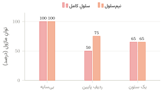
shade on a portrait module (cells at 50 % light), ch 15 curves
shade full cells half-cut cells
none 550.1 W 100% 550.1 W 100%
bottom row 275.1 W 50% 412.6 W 75%
one column 360.2 W 65% 360.2 W 65%
a shaded bottom row (soiling at the lower frame, the next
row's shadow at low sun) limits every full-cell string;
in the half-cut module only the lower halves are limited
and the upper halves carry on - a design for shading;
a shaded column takes one third in both layouts: the
layout helps only for shade along the short sideمثال 41.23 (نیمسلول برای سایهٔ ردیفِ پایین) پرسش. اگر ردیفِ پایینِ سلولها نصفِ نور را بگیرد، توانِ هر دو ماژول چقدر است؟ اگر یک ستون سایه باشد چه؟
پاسخ. ردیفِ پایین: سلولِ کامل 275 W (۵۰ درصد) و نیمسلول 413 W (۷۵ درصد). یک ستون: هر دو 360 W.
تفسیر. گردوغبارِ لبهٔ پایینِ قاب و سایهٔ ردیفِ جلو در آفتابِ کم، هر دو ردیفِ پایین را میگیرند. در ماژولِ سلولکامل، هر سه رشته از آن ردیف میگذرند و همه محدود میشوند. در ماژولِ نیمسلول فقط نیمههای پایین محدود میشوند و نیمههای بالا کار میکنند. این طراحی برای سایه است. اما سایهٔ ستونی، مانندِ سایهٔ یک تیر، در هر دو چیدمان یکسوم میگیرد. چیدمان فقط برای سایهای کمک میکند که در امتدادِ ضلعِ کوتاه بیفتد. پس جهتِ نصب، ایستاده یا خوابیده، با چیدمانِ سلول با هم انتخاب میشوند (بخش 10.4.7). وارسی: نیمهٔ بالا ۵۰ درصد و نیمهٔ پایین ۲۵ درصد، جمعاً ۷۵ درصد.
41.5.4 کنترلِ لمینیتکاری
لمینیتکاری شیشه، کپسولهکننده، رشتهها و پشتپوش را با گرما و فشار به یک لمینیت تبدیل میکند. کپسولهکننده در این گام شبکهای میشود. سهمِ شبکهایشده، یعنی درصدِ ژل، با نمونهای روزانه از هر دستگاه اندازه گرفته میشود. حدِ پایینِ آن را سازندهٔ کپسولهکننده میدهد. عددِ این درس آموزشی است.
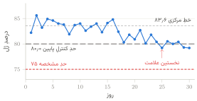
gel content of one daily sample per laminator (%, 30 days)
individuals chart from days 1-15
lower specification 75 % (encapsulant maker, teaching)
L1: centre 83.7, LCL 79.2; first signal day none; below spec: 0 days
L2: centre 83.6, LCL 80.0; first signal day 25; below spec: 0 days
L3: centre 84.2, LCL 80.7; first signal day none; below spec: 0 days
L2 drifts from day 16; the chart signals on day 25, while
every sample still meets the specification (lowest 79.2 %):
the drift is caught before it makes a defect - modules since
the signal are held and traced (genealogy, lesson B) and
the laminator's own record (temperature, time) is checked;
low gel content shows later as creep and delaminationایده. نمودارِ کنترل رانش را پیش از عیب میگیرد. در روزِ ۲۵ علامت میدهد، وقتی هنوز هر نمونه حدِ مشخصه را برآورده میکند. ماژولهای لمینیتشده از زمانِ علامت نگه داشته و با تبارنامه پیدا میشوند (بخش 41.4.12). سابقهٔ خودِ دستگاه، یعنی دما و زمانِ هر چرخه، هم وارسی میشود. درصدِ ژلِ کم در کارخانه دیده نمیشود. سالها بعد در نیروگاه به صورتِ خزش و لایهلایه شدن دیده میشود. این مثالِ روشنی از مشخصهای است که فقط با کنترلِ فرایند مهار میشود، نه با آزمونِ محصولِ نهایی (بخش 40.4.3).
مثال 41.24 (حدِ کنترل از دامنهٔ متحرک) پرسش. برای لمینیتکنِ L2، خطِ مرکزی 83.6 و حدِ کنترلِ پایین 80.0 است. میانگینِ دامنهٔ متحرک چقدر بوده است؟
پاسخ. \(\overline{MR} = (83.6 - 80.0)/2.66 = 1.35\) درصد.
تفسیر. ضریبِ 2.66 از سه انحرافِ معیار و رابطهٔ دامنهٔ دو مقدارِ پیاپی با انحرافِ معیار میآید (بخش 40.4.8). حدِ کنترل از رفتارِ خودِ فرایند میآید. حدِ مشخصه از سازندهٔ کپسولهکننده. علامتِ نمودار یعنی فرایند عوض شده است، نه اینکه محصول بد است.
41.5.5 آزمونهای شتابیافته عمر را پیشبینی نمیکنند
آزمونِ گرمای مرطوب ماژول را ۱٬۰۰۰ ساعت در 85 °C و ۸۵ درصد رطوبتِ نسبی نگه میدارد. این برابرِ چند سال در میدان است؟ یک پاسخِ رایج مدلِ پک است:
\[ \text{AF} = \exp\!\left[\frac{E_a}{k}\left(\frac{1}{T_\text{f}} - \frac{1}{T_\text{t}}\right)\right]\left(\frac{\text{RH}_\text{t}}{\text{RH}_\text{f}}\right)^{3} \tag{41.16}\]
و برای چرخهٔ دمایی، با تنشِ گرماییِ \(\Delta T\) و نمای \(n_\text{c}\):
\[ \text{AF}_\text{TC} = \left(\frac{\Delta T_\text{t}}{\Delta T_\text{f}}\right)^{n_\text{c}} \tag{41.17}\]
damp heat 1,000 h at 85 C / 85 % RH: what does it equal?
(Peck model, AF = exp(Ea/k (1/Tf - 1/Tt)) (RHt/RHf)^3,
field module at 35 C - all teaching values)
Ea eV RH field acceleration 1,000 h equals
0.5 30 % 315 36 years
0.5 60 % 39 4 years
0.7 30 % 902 103 years
0.7 60 % 113 13 years
0.9 30 % 2,582 295 years
0.9 60 % 323 37 years
thermal cycling -40..85 C against 40 K field days (n = 2):
AF 9.8: 200 cycles = 5.4 years of daily cycles
the answer spans a 66-fold range with plausible
inputs: qualification tests screen a design for known
weaknesses and compare designs - they do not predict lifeمثال 41.25 (یک آزمون، از چهار تا ۲۹۵ سال) پرسش. با انرژیِ فعالسازیِ \(0.5\) تا \(0.9\,\text{eV}\) و رطوبتِ میدانِ ۳۰ یا ۶۰ درصد، ۱٬۰۰۰ ساعت گرمای مرطوب برابرِ چند سال است؟
پاسخ. از ۴ تا ۲۹۵ سال، یعنی بازهای ۶۶ برابری. ۲۰۰ چرخهٔ دمایی، با \(n_\text{c} = 2\)، حدودِ ۵ سال چرخهٔ روزانه است.
تفسیر. با ورودیهای باورپذیر، پاسخ بیش از یک مرتبهٔ بزرگی جابهجا میشود. پس آزمونهای صلاحیتسنجی طرح را برای ضعفهای شناختهشده غربال میکنند و طرحها را با هم مقایسه میکنند. عمر را پیشبینی نمیکنند. ماژولی که آزمون را گذرانده ۲۵ سال تضمینشده نیست. ماژولی که در آن رد شده، ضعفی دارد که در میدان هم دیده خواهد شد. ضمانتِ توان قراردادی است، نه نتیجهٔ آزمون (بخش 10.3.22). وارسی: \(\exp(8124 \times 4.53\times10^{-4}) = 39.6\)، و \(39.6 \times (85/30)^3 = 902\).
41.5.6 ناحیههای گیره و خمشِ شیشه
ماژول با چهار گیره روی سازه بسته میشود. جای گیرهها خمشِ شیشه و سلولها را زیرِ بارِ برف و باد تعیین میکند. ماژول را تیری با بارِ یکنواختِ \(w\) و دو تکیهگاه در فاصلهٔ \(a\) از دو لبه بگیرید. بیشترین گشتاور وقتی کمینه است که گشتاورِ روی تکیهگاه با گشتاورِ میانه برابر شود:
\[ \frac{w a^2}{2} = \frac{w (L_\text{m} - 2a)^2}{8} - \frac{w a^2}{2} \;\Rightarrow\; a = \frac{L_\text{m}}{2 + 2\sqrt{2}} \approx 0.207\,L_\text{m} \tag{41.18}\]
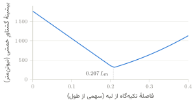
clamping zones of a 2.278 m module under 2400 Pa (teaching)
load 6.20 kN; per clamp (four) 1.55 kN
supports at the ends: largest bending moment 1765 N m
supports 472 mm in from each end (0.207 L): 303 N m
5.8 times less bending in the glass and the cells: the maker's
clamping zones sit near this point, and a clamp outside
them can void the mechanical rating (cracked cells under
snow or wind); the mounting interface is part of the
module's design, checked at the site (lesson E)ایده. گیره در 472 mm از هر لبه خمش را ۵٫۸ برابر کمتر از گیره در لبهها میکند. ناحیههای گیرهٔ سازنده نزدیکِ همین نقطهاند. گیرهٔ بیرون از آنها میتواند ردهٔ مکانیکیِ ماژول را باطل کند و سلولها را زیرِ برف یا باد بشکند. پس واسطِ نصب بخشی از طراحیِ ماژول است و در ساختگاه وارسی میشود (بخش 41.7.3). بارِ 2400 Pa اینجا عددی آموزشی است. بارِ طراحیِ واقعی از مطالعهٔ سازه میآید (فصل 30).
مثال 41.26 (جای گیره روی ماژولِ نیروگاه) پرسش. برای ماژولِ 2.278 m زیرِ 2400 Pa، جای بهینهٔ گیره، نیروی هر گیره و کاهشِ خمش چقدر است؟
پاسخ. \(a = 2278/(2 + 2\sqrt{2}) = 472\,\text{mm}\). نیروی کل \(2400 \times 2.583 = 6.2\,\text{kN}\) و هر گیره 1.55 kN. خمش ۵٫۸ برابر کمتر از گیره در لبه.
تفسیر. این نتیجه یک تیرِ ساده است. شیشه در واقع صفحهای دوبعدی است و قاب هم سختی دارد. پس ناحیههای واقعیِ گیره را سازنده با آزمونِ بارِ مکانیکی تعیین میکند. نقشهٔ سازه باید جای ریلِ گیره را با همان ناحیهها بخواند (فصل 30). وارسی: گشتاورِ تکیهگاه \(w a^2/2\) با \(w = 6200/2.278 = 2722\,\text{N/m}\) برابرِ \(303\,\text{N m}\) است.
41.5.7 گرمای دیودِ میانگذر
bypass diodes conducting 17.5 A (1,250 W/m2), box at 70 C (teaching)
diodes on heat each W junction C margin to the rating
1 7.9 141 +59 K
2 7.9 164 +36 K
3 7.9 188 +12 K
one diode bypassing all afternoon (a pole's shadow) runs
hot for hours a day: the bypass-diode thermal test checks
the box design; in the plant, string monitoring finds a
module that loses a third (lesson E)ایده. دیودی که سراسرِ عصر بهخاطرِ سایهٔ یک تیر جریان را دور میزند، هر روز ساعتها گرم کار میکند. سه دیودِ روشن در یک جعبهتقسیم همدیگر را گرم میکنند و حاشیه کم میشود. آزمونِ گرماییِ دیودِ میانگذر طرحِ جعبه را برای همین وارسی میکند. در نیروگاه، دیودِ خراب به صورتِ ماژولی دیده میشود که یکسوم را از دست داده است، و پایشِ رشته آن را مییابد (بخش 41.7.7). عددهای این درس آموزشیاند. دمای مجاز را برگهٔ مشخصاتِ دیود میدهد.
مثال 41.27 (سه دیود در یک جعبه) پرسش. با 17.5 A، افتِ 0.45 V، مقاومتِ گرماییِ 9 K/W و جفتشدگیِ 3 K/W از هر دیودِ دیگر، دمای پیوندِ یک و سه دیودِ روشن در جعبهٔ 70 °C چقدر است؟
پاسخ. گرمای هر دیود \(17.5 \times 0.45 = 7.9\,\text{W}\). یک دیود: \(70 + 7.9 \times 9 = 141\,^\circ\text{C}\). سه دیود: \(141 + 2 \times 7.9 \times 3 = 188\,^\circ\text{C}\).
تفسیر. وقتی ردیفِ پایینِ سایهدار هر سه زیررشته را محدود میکند، سه دیود با هم روشن میشوند. حاشیه کم میشود. پس آزمونِ گرماییِ دیود با همهٔ دیودهای روشن معنا دارد، و چیدمانِ نیمسلول هم این حالت را کمتر میکند (مثال 41.23).
41.5.8 عایقیِ یک بلوکِ کامل
insulation of one PV block: 10,920 modules in parallel to earth
module (teaching) block resistance leakage at 545 V
dry 400 MOhm 36.6 kOhm 15 mA
dew 40 MOhm 3.7 kOhm 149 mA
each module passes its own insulation test by a wide margin,
yet ten thousand in parallel look like a few kilohms on a
dew morning: the inverter's insulation check may delay the
start until the array dries (energy lost at sunrise) - the
threshold is a setting agreed with the inverter maker, and
a falling trend points at a damaged cable or connectorایده. هر ماژول آزمونِ عایقیِ خودش را با حاشیهٔ زیاد میگذراند. اما ده هزار ماژولِ موازی در صبحِ شبنمدار چند کیلواهم بیشتر نیستند. وارسیِ عایقیِ اینورتر ممکن است راهاندازی را تا خشکشدنِ آرایه عقب بیندازد، و انرژیِ طلوع از دست برود. آستانه تنظیمی است که با سازندهٔ اینورتر توافق میشود (بخش 10.4.15). روندِ نزولیِ مقاومتِ عایقی هم نشانهٔ کابل یا اتصالدهندهٔ آسیبدیده است.
مثال 41.28 (ده هزار ماژولِ موازی) پرسش. هر ماژول در صبحِ شبنمدار 40 MΩ تا قاب دارد. بلوکی با 10,920 ماژول چه مقاومتی دارد؟ جریانِ نشتی در 545 V چقدر است؟
پاسخ. \(40\times10^6/10\,920 = 3.66\,\text{k}\Omega\) و \(545/3660 = 149\,\text{mA}\).
تفسیر. آزمونِ عایقیِ هر ماژول در کارخانه با یک ماژول انجام میشود. اینورتر کلِ بلوک را با هم میبیند. پس آستانهٔ اینورتر باید برای بلوک انتخاب شود، نه برای یک ماژول، و روندِ آن در سامانهٔ پایش ثبت شود (فصل 37).
41.5.9 عیبها و نردبانِ تحلیلِ خرابی
module defects: cause, how found, what follows
cell micro-crack
cause: handling, stringer, lamination pressure
found by: EL image
then: inactive area grows in the field -> power loss
cold solder / weak bond
cause: temperature, flux, contact force
found by: peel test, EL, flash Rs
then: hot joint, power loss
lamination void / bubble
cause: moisture, vacuum, contamination
found by: visual, pre-lam EL
then: delamination, moisture path
low gel content
cause: lamination cure
found by: gel-content sample
then: creep, delamination
delamination
cause: adhesion, contamination
found by: visual, damp heat
then: moisture ingress, corrosion
corrosion of contacts
cause: moisture, acetic acid
found by: EL after stress
then: series resistance rises
hot spot
cause: shaded or cracked cell, shunt
found by: IR under bias
then: burn mark, glass breakage, fire risk
bypass diode open or short
cause: assembly, surge
found by: diode check, flash
then: string loses a third, or hot spot unprotected
insulation failure
cause: backsheet, edge seal
found by: insulation test
then: leakage, earth fault in the plant
failure analysis ladder, non-destructive steps first:
1. visual inspection and records (serial, lot, flash)
2. I-V curve against the flash record
3. electroluminescence image (cracks, dark cells, contacts)
4. infrared image under current (hot cells, joints, diodes)
5. insulation and wet leakage
6. junction box opened: diodes, joints, potting
7. destructive: cross-section, peel, chemical analysis
each step keeps the evidence for the next; a module cut
open first cannot be flashed againایده. هر عیب یک علت در فرایند، یک روشِ کشف و یک پیامد در میدان دارد. فصلِ ۱۰ اثرِ ریزترک و نقطهٔ داغ را روی توان حساب کرد (بخش 10.3.16، بخش 10.3.15). اینجا ترتیبِ تحلیلِ خرابی مهم است. گامهای غیرمخرب اول میآیند، چون هر گام شاهد را برای گامِ بعد نگه میدارد. ماژولی که اول بریده شود دیگر فلش نمیشود. این نردبان همان منطقِ بخش 40.5.2 است: شاهد پیش از نظر.
41.5.10 غربالِ آسیبِ حمل
transport screening: EL of one pallet (31 modules) a container
rule: 2 or more cracked modules -> EL the whole container
normal handling (0.5% cracked): opened by mistake 1.1%
rough handling (8% cracked): caught 71%
with 177 containers (ch 10) about 2 opened needlessly
shock indicators and pallet damage pick the pallet to image;
a crack found at receipt is a claim against the carrier or
the maker; one found after installation is the plant'sایده. قاعدهٔ «دو یا بیشتر ترکخورده در یک پالت» یک طرحِ نمونهگیری است با منحنیِ مشخصهٔ عملیاتیِ خودش (بخش 10.3.10). در حملِ عادی، از ۱۰۰ کانتینر یکی بیدلیل کامل باز میشود. در حملِ خشن، ۷۱ درصد کانتینرها گرفته میشوند. شاخصهای ضربه و آسیبِ پالت پالتِ تصویربرداری را انتخاب میکنند. ترکی که در دریافت پیدا شود ادعایی علیهِ حملکننده یا سازنده است. ترکی که پس از نصب پیدا شود مالِ نیروگاه است (بخش 10.3.11). بستهٔ حمل خودش با آزمونِ حملِ بسته صلاحیتسنجی میشود (IEC 62759-1:2022).
مثال 41.29 (دو خطای قاعدهٔ پالت) پرسش. با ۳۱ ماژول در پالت و قاعدهٔ «دو یا بیشتر»، احتمالِ بازکردنِ بیدلیل در حملِ عادی (۰٫۵ درصد ترک) و گرفتنِ حملِ خشن (۸ درصد) چقدر است؟
پاسخ. با توزیعِ پواسون: \(\lambda = 0.155\) و \(P(\geq 2) = 1 - e^{-0.155}(1 + 0.155) = 1.1\,\%\). با \(\lambda = 2.48\)، \(P(\geq 2) = 1 - e^{-2.48}(1 + 2.48) = 71\,\%\).
تفسیر. قاعدهٔ «یک یا بیشتر» حملِ خشن را بیشتر میگرفت، اما کانتینرهای سالمِ بیشتری را هم بیدلیل باز میکرد. انتخابِ آستانه بدهبستانِ دو خطاست، همان منحنیِ مشخصهٔ عملیاتی (بخش 40.4.9).
41.5.11 مرزهای تعمیر
repair limits (concept; the maker's warranty terms decide)
defect action
connector damaged replace with the same maker and type
then: insulation, polarity, I-V
junction-box lid or potting only by the maker's procedure
then: insulation, diode check
bypass diode failed maker's procedure, if the box allows
then: diode check, I-V, IR
frame bent replace the module
then: -
glass or laminate broken replace the module
then: -
backsheet scratch maker's assessment; tape not a repair
then: insulation, wet leakage
the laminate cannot be opened and closed again; what can
be repaired is outside it, and every repair is followed
by the tests that the repair could have upsetایده. لمینیت باز و دوباره بسته نمیشود. آنچه تعمیرپذیر است بیرونِ لمینیت است: اتصالدهنده، و جعبهتقسیم اگر سازنده اجازه بدهد. هر تعمیر با آزمونهایی دنبال میشود که تعمیر میتوانست آنها را برهم بزند. تعمیر با روشِ سازنده و بیآن، در ضمانت فرق دارند. چسباندنِ نوار روی پشتپوشِ خراشیده تعمیر نیست، پنهانکردن است. کارِ روی ماژولِ نصبشده همیشه با جداسازیِ رشته و افرادِ صلاحیتدار است (بخش 10.5.5). این فصل روالِ آن را نمیدهد.
41.5.12 قالبِ سلول و نیروگاه
cell format and what it does to the plant (half-cut, 144 cells,
current scales with cell area; teaching)
format module Isc A fuse 1.5 x Isc area m2 mass kg
182 mm 13.98 21.0 2.58 28.1
210 mm 18.61 27.9 3.37 36.7
a larger cell carries a third more current: string fuses,
cables and the inverter's input current change (ch 24, ch 26),
and a 37 kg module of 3.4 m2 is a two-person lift that
catches more wind on the way to the table (ch 32, lifting);
the format is a plant decision as much as a module oneایده. سلولِ ۲۱۰ میلیمتری حدودِ یکسوم جریانِ بیشتر دارد. پس فیوزِ رشته، کابل و جریانِ ورودیِ اینورتر عوض میشوند (فصل 24، فصل 26). ماژولِ ۳۷ کیلوگرمی با ۳٫۴ مترمربع را دو نفر بلند میکنند و در راهِ میز باد بیشتری میگیرد (فصل 32). پس قالبِ سلول همانقدر که تصمیمِ ماژول است، تصمیمِ نیروگاه هم هست. نیروگاهِ P قالبِ ۱۸۲ میلیمتری را با فصلِ ۱۰ نگه میدارد.
41.5.13 لبهٔ عایق
module 2.278 x 1.134 m = 2.583 m2; cells 2.376 m2 (92.0% active)
one more millimetre of edge all round: +0.0068 m2 of glass (0.26%)
module efficiency falls by the same 0.26% (same cells, larger module)
the edge keeps a creepage and clearance distance between
live cells and the earthed frame: its width comes from the
safety qualification for the system voltage (IEC 61730), so
a 1500 V module needs more edge than a 1000 V one - one of
the costs of a higher string voltageایده. لبهٔ بیسلول فاصلهٔ لازم میانِ سلولهای برقدار و قابِ زمینشده را نگه میدارد. پهنای آن از صلاحیتسنجیِ ایمنی برای ولتاژِ سامانه میآید (IEC 61730-1:2023). هر میلیمتر لبه ۰٫۲۶ درصد شیشهٔ بیشتر و همان اندازه بازدهِ کمتر میآورد. پس ماژولِ ۱۵۰۰ ولتی لبهٔ پهنتری از ماژولِ ۱۰۰۰ ولتی دارد. این یکی از هزینههای ولتاژِ بالاترِ رشته است، که در عوض جریان و کابل را کم میکند (بخش 10.4.1).
41.5.14 مطالعهٔ سامانهٔ اندازهگیریِ دو آزمونگرِ فلش
gauge study: 10 modules x 2 flash testers x 3 repeats (teaching)
case repeat W between W %GRR 6 sd / 5 W class
as found (B reads +1.2 W) 0.58 0.77 45 116%
after golden-module match 0.57 0.14 26 70%
the bias between testers is most of the error; matching
both to one golden module removes it, but repeatability
alone still spans 70% of a 5 W class - flashers
sort modules into classes with some misbinning, which the
0/+5 W tolerance and the buyer's decision rule absorbایده. همان مطالعهٔ سامانهٔ اندازهگیریِ فصلِ ۴۰ (بخش 40.4.5)، با دو آزمونگر بهجای دو اپراتور. بیشترِ خطا از اختلافِ دو آزمونگر است. همترازکردنِ هر دو با یک ماژولِ طلایی آن را برمیدارد. تکرارپذیری هنوز ۷۰ درصدِ یک ردهٔ ۵ واتی را میپوشاند. پس آزمونگرها ماژولها را با کمی خطای ردهبندی در ردهها میگذارند. رواداریِ صفر تا ۵ وات و قاعدهٔ تصمیمِ خریدار این خطا را جذب میکنند (مثال 41.21).
41.5.15 صلاحیتسنجی در برابرِ آزمونِ هر واحد
module tests: purpose and when they run
test when purpose
power at STC (flash) every module rating, label, binning
electroluminescence every module cracks, dark cells, joints
insulation, earth link every module safety of the package
visual and dimensions every module workmanship, frame, labels
wet leakage sample + qual. insulation when wet
thermal cycling qual. + retest joints and interconnects
damp heat qual. + retest moisture, adhesion, corrosion
humidity freeze qual. + retest edge seal, junction box
mechanical load qual. + retest frame, glass, cells
hail qualification glass
hot spot qualification cell reverse bias
bypass diode thermal qualification junction box heat
PID qual. + retest voltage-induced loss
transport (package) package qual. shipping unit
4 tests run on every module; the rest qualify a design
(IEC 61215, IEC 61730) on a few samples, and are repeated
when the BOM or process changes (IEC TS 62915); the
factory's quality system keeps them valid between (IEC
62941) - a certificate covers the BOM that was testedمثال 41.30 (گواهی برای کدام فهرستِ مواد؟) پرسش. سازنده گواهیِ صلاحیتسنجیِ ماژول را دارد. پس از امضای قرارداد، کپسولهکننده را به نوعی ارزانتر عوض میکند. آیا گواهی هنوز معتبر است؟
پاسخ. نه، مگر آزمونهایی که راهنمای آزمونِ دوباره برای این تغییر میخواهد انجام شده باشند.
تفسیر. چهار آزمون روی هر ماژول انجام میشوند: فلش، تصویرِ الکترولومینسانس، عایقی و بازرسیِ چشمی. بقیه، مانندِ چرخهٔ دمایی، گرمای مرطوب، بارِ مکانیکی، تگرگ، نقطهٔ داغ، گرمای دیود و تخریبِ ناشی از پتانسیل، طرح را روی چند نمونه صلاحیتسنجی میکنند (IEC 61215-1:2021 و IEC 61215-2:2021 برای کارایی، IEC 61730-1:2023 و IEC 61730-2:2023 برای ایمنی). وقتی فهرستِ مواد یا فرایند عوض شود، این آزمونها بنا بر راهنمای آزمونِ دوباره تکرار میشوند (IEC TS 62915:2023). نظامِ کیفیتِ کارخانه، مطابقِ IEC 62941:2019، آنها را میانِ دو صلاحیتسنجی معتبر نگه میدارد. پس گواهی فقط برای فهرستِ موادی است که آزموده شده. قراردادِ خرید ماژول را با شمارهٔ بازنگریِ فهرستِ مواد میخرد (بخش 41.6.9، بخش 10.6.6).
41.5.16 ظرفیتِ خط و سفارشِ نیروگاه
module line against Plant P's order (teaching)
bottleneck: lay-up and laminator at 30 s a module
22 h a day x OEE 85% x yield 98.5%: 2,210 modules a day
109,200 modules: 49 working days on one line
(8.2 weeks of six days) - the order fills the line
for two months: the delivery plan of ch 31 and the slot
reserved at award (ch 39) follow from this one divisionایده. گلوگاهِ خط، اثربخشیِ کلی و بازده ظرفیتِ روزانه را میدهند (بخش 40.3.8.1). سفارشِ نیروگاه دو ماه کارِ یک خطِ کامل است. پس برنامهٔ تحویلِ فصلِ ۳۱ و جایی که هنگامِ واگذاری در برنامهٔ کارخانه رزرو میشود (فصلِ ۳۹)، هر دو از همین یک تقسیم میآیند. اگر کارخانه همزمان سفارشِ دیگری داشته باشد، تحویل کش میآید.
مثال 41.31 (یک تقسیم، دو ماه) پرسش. با گلوگاهِ ۳۰ ثانیه، ۲۲ ساعت کار در روز، اثربخشیِ کلیِ ۸۵ درصد و بازدهِ 98.5 %، خط روزی چند ماژول میسازد؟ سفارشِ نیروگاه چند روز طول میکشد؟
پاسخ. \(22 \times 3600/30 = 2640\)، سپس \(\times 0.85 \times 0.985 = 2210\) ماژول در روز. پس \(109\,200/2210 = 49\) روزِ کاری.
تفسیر. اگر اثربخشی به ۷۰ درصد برسد، سفارش ۶۰ روز طول میکشد. این ده روز در برنامهٔ تحویل و نصب دیده میشود (فصل 31). پس اثربخشیِ خطِ سازنده پرسشی برای ممیزیِ پیش از واگذاری است.
41.5.17 جای تصویرِ الکترولومینسانس در خط
cracked strings in 109,200 modules: 655 (teaching 0.6%)
EL placed cost k u escapes
before lamination, and after 4.2 1.6
after lamination only 59.1 32.8
a crack found before lamination costs a string repair; one
found after costs a scrapped module - the pre-lamination
image pays for itself many times over, and the final image
still catches what lamination itself cracksمثال 41.32 (ترک را پیش از بستهشدن بیابید) پرسش. اگر ۰٫۶ درصدِ رشتهها ترک داشته باشند، تصویرِ پیش از لمینیتکاری چه ارزشی دارد؟
پاسخ. با هر دو تصویر، هزینه حدودِ 4.2 k u و فرار حدودِ ۲ ماژول است. با تصویرِ پایانی تنها، هزینه 59.1 k u و فرار حدودِ ۳۳ ماژول.
تفسیر. ترکی که پیش از لمینیتکاری پیدا شود با تعمیرِ رشته حل میشود. ترکی که پس از آن پیدا شود ماژول را دور میریزد. تصویرِ پیش از لمینیتکاری چند برابرِ هزینهاش را برمیگرداند. تصویرِ پایانی هم لازم است، چون خودِ لمینیتکاری هم ترک میسازد. این همان منطقِ فرارِ عیب در فصلِ ۴۰ است: آشکارسازها در ضرب کار میکنند (بخش 40.7.4). وارسی: \(655 \times 0.95 \times 95 = 59.1\) هزار واحد.
41.5.18 توانِ فرایندِ استحکامِ کندن
ribbon peel force, N/mm (lower limit 1.0, teaching)
machine mean sd Cpk ppm under
stringer 1 2.11 0.28 1.33 35
stringer 2 1.61 0.25 0.80 8,150
the destructive peel test runs on sample strings each shift;
stringer 1 is just capable (Cpk 1.33); stringer 2 (Cpk 0.80)
makes weak joints in thousands per million because its mean
is low - the fix is the joint, not more testing, the same
lesson as the crimp of ch 40ایده. آزمونِ کندنِ نوار مخرب است. روی چند رشتهٔ نمونه در هر نوبت انجام میشود. رشتهسازِ ۲ هزاران اتصالِ ضعیف در هر میلیون میسازد، چون میانگینش پایین است. درمان خودِ اتصال است، نه آزمونِ بیشتر. همان درسی است که سرِ کابل در فصلِ ۴۰ داد (بخش 40.4.7.2).
مثال 41.33 (میانگینِ پایین، نه پراکندگیِ زیاد) پرسش. رشتهسازِ ۲ میانگینِ 1.61 و انحرافِ معیارِ 0.25 N/mm دارد، با حدِ پایینِ 1.0. \(C_\text{pk}\) و سهمِ اتصالهای ضعیف چقدر است؟
پاسخ. \(C_\text{pk} = (1.61 - 1.0)/(3 \times 0.25) = 0.81\). سهمِ زیرِ حد \(\Phi(-2.44) \approx 0.7\,\%\)، یعنی حدودِ ۷٬۰۰۰ تا ۸٬۰۰۰ در هر میلیون.
تفسیر. پراکندگیِ دو رشتهساز تقریباً یکی است. فرق در میانگین است. پس درمان جابهجا کردنِ میانگین است، با آزمایش روی همان ماشین (مثال 40.7)، نه آزمونِ بیشتر. خروجیِ برنامه با مقدارهای گردنشده ۸٬۱۵۰ را میدهد.
41.5.19 توافقِ دو درجهبندِ تصویر
300 EL images graded A/B/C by two inspectors (teaching)
observed agreement 81.7%; by chance 62.0%; kappa 0.52
agreement within each grade (both / either called it): A 80%, B 40%, C 70%
most images are A, so chance agreement is high and a raw
agreement of 82% hides a kappa of only 0.52; the graders
agree least on B (40%) and C (70%), the grades that sort
and reject - reference images for each grade and a
periodic attribute study (ch 40, kappa) keep the graders
togetherایده. بیشترِ تصویرها ردهٔ Aاند، پس توافقِ تصادفی بالاست. توافقِ ۸۲ درصد کاپای کوهن ۰٫۵۲ را پنهان میکند. درجهبندها کمترین توافق را روی ردههای B و C دارند، یعنی همان ردههایی که ماژول را دستهبندی یا رد میکنند. تصویرهای مرجع برای هر رده و مطالعهٔ وصفیِ دورهای درجهبندها را هماهنگ نگه میدارند (بخش 40.4.6). همین برای خوانشِ تصویرِ ساختگاه هم لازم است.
41.5.20 کرنش در هر چرخه
mismatch strain at a ribbon joint (copper on silicon)
cycle dT K strain % relative life
test -40 to 85 C 125 0.180 1.0
hot summer day 45 0.065 7.7
mild day 25 0.036 25.0
glass (9e-6/K) sits between copper and silicon: the
laminate bends as well as shears; with a Coffin-Manson
exponent of 2 a test cycle wears a joint like 8 hot days
or 25 mild ones - the basis of eq-ch41-cycling, and why
joint shape and solder, not only ribbon size, matterایده. مس \(17\times10^{-6}\) و سیلیسیم \(2.6\times10^{-6}\) بر کلوین منبسط میشوند. هر چرخهٔ دمایی اتصال را میکشد و برمیگرداند. با نمای کافین–منسون برابرِ ۲، یک چرخهٔ آزمون به اندازهٔ ۸ روزِ داغ یا ۲۵ روزِ ملایم اتصال را فرسوده میکند. این پایهٔ معادلهٔ 41.17 است. پس شکلِ اتصال و لحیم مهماند، نه فقط اندازهٔ نوار.
41.5.21 سختیِ ماژولِ دوشیشه
bending stiffness per width (relative to t^3 of 3.2 mm glass)
build stiffness glass mm
3.2 mm glass + backsheet 1.00 3.2
2 + 2 mm glass, slipping 0.49 4.0
2 + 2 mm glass, fully bonded 2.78 4.0
two thin sheets act as one only if the encapsulant grips
them in shear; it softens when hot, so a glass-glass
module is stiff on a cold morning and much less so at
70 C - the mechanical load test is run on the BOM as
built, and the clamping zones (lesson C) follow itایده. سختیِ خمشیِ ورق با توانِ سومِ ضخامت بالا میرود. دو ورقِ ۲ میلیمتری فقط وقتی مانندِ یک ورق کار میکنند که کپسولهکننده آنها را در برش نگه دارد. کپسولهکننده در گرما نرم میشود. پس ماژولِ دوشیشه در صبحِ سرد سخت است و در 70 °C خیلی کمتر. آزمونِ بارِ مکانیکی روی فهرستِ موادِ واقعی انجام میشود، و ناحیههای گیره از آن پیروی میکنند (بخش 41.5.6).
41.5.22 آب از پشتپوش
water vapour through a backsheet over a year (teaching:
1.5 g/m2/day at 38 C, doubling every 10 K; monthly mean
module temperature of a hot dry site)
build g a year in 25 years
glass-backsheet 684 17,102 g
glass-glass, edge seal 14 342 g
a breathable backsheet lets water in and acetic acid from
the encapsulant out; glass-glass keeps water out but traps
what gets in through the edge - which build is safer
depends on the encapsulant, so the BOM, not one material,
is qualified (damp heat, lesson C)ایده. پشتپوشِ نفوذپذیر آب را راه میدهد، اما اسیدِ استیکِ ساختهشده در کپسولهکننده را هم بیرون میدهد. ماژولِ دوشیشه آب را بیرون نگه میدارد، اما آنچه از لبه وارد شود را هم در خود نگه میدارد. کدام ساختار بهتر است، به کپسولهکننده بستگی دارد. پس فهرستِ مواد صلاحیتسنجی میشود، نه یک ماده بهتنهایی (بخش 41.5.15).
مثال 41.34 (گرمترین ماه، بیشترین آب) پرسش. با 1.5 g/m² در روز در 38 °C، دو برابر شدن با هر ۱۰ کلوین و ماژولِ 2.58 m²، در ماهی با دمای ماژولِ 37 °C چقدر آب از پشتپوش میگذرد؟
پاسخ. \(1.5 \times 2^{-0.1} \times 2.58 \times 30.4 = 110\,\text{g}\) در ماه.
تفسیر. چهار ماهِ گرم بیش از نیمِ آبِ سال را میآورند. پس اقلیمِ گرمِ نیروگاه برای ماژولِ با پشتپوش سختتر از میانگین است. آزمونِ گرمای مرطوبِ صلاحیتسنجی این را مقایسه میکند، نه پیشبینی (مثال 41.25).
41.5.23 بافر و جریانِ مواد در خط
curing buffer and material flow at a 30 s takt (teaching)
sealant and potting need 4 h before handling: 480 modules in the buffer
glass in: 120 sheets an hour = 2.5 t an hour
frames, boxes, pallets out: one finished pallet every 15.5 min
the buffer is floor space and work in progress, not idle
stock: shortening the cure moves the line's layout; the
glass flow sets the forklift and rack plan (ch 40, layout)ایده. درزگیرِ قاب و رزینریزیِ جعبهتقسیم پیش از جابهجایی زمانِ پخت میخواهند. با آهنگِ ۳۰ ثانیه، چهار ساعت پخت یعنی ۴۸۰ ماژول در بافر. این بافر انبارِ بیکار نیست. فضای کف و کارِ در جریان است (بخش 40.3.8.2). کوتاهکردنِ پخت چیدمانِ خط را عوض میکند. جریانِ شیشه، یعنی ۲٫۵ تن در ساعت، برنامهٔ لیفتراک و قفسهها را تعیین میکند (بخش 40.3.8.10). عددهای زمانِ پخت را سازندهٔ درزگیر میدهد. این درس فقط حسابِ ظرفیت است.
مثال 41.35 (بافر و شیشه با دست) پرسش. با آهنگِ ۳۰ ثانیه، چهار ساعت پخت و شیشهٔ 20.7 kg، بافر و جریانِ شیشه چقدر است؟
پاسخ. \(4 \times 3600/30 = 480\) ماژول. شیشه \(120 \times 20.7 = 2.48\) تن در ساعت.
تفسیر. ۴۸۰ ماژولِ ایستاده، با فاصلهٔ لازم برای جابهجایی، صدها مترمربع فضا میخواهد. هر ساعت کوتاهشدنِ پخت ۱۲۰ ماژول از بافر برمیدارد. پس انتخابِ درزگیر و رزین مادهای است که چیدمانِ کارخانه را هم تعیین میکند.
41.5.24 کپسولهکننده در انبار
encapsulant rolls on receipt and in store (teaching: 180 days
at 25 C, halving every 10 K warmer)
40 rolls: 8 past their life, 4 within 30 days
past: R17, R19, R25, R28, R29, R31, R35, R36
an encapsulant past its life may still laminate, but cures
differently (gel content, lesson C): rolls are used first in
first out by their remaining life, not by arrival, and the
store's temperature is logged as part of the material's recordایده. کپسولهکنندهای که عمرِ انبارش گذشته ممکن است هنوز لمینیت شود، اما متفاوت پخته میشود و درصدِ ژلش پایینتر است (بخش 41.5.4). پس رولها به ترتیبِ عمرِ باقیمانده مصرف میشوند، نه ترتیبِ رسیدن. دمای انبار هم بخشی از سابقهٔ ماده است. انباری که تابستان گرم شود، عمرِ رولها را بیصدا کوتاه میکند.
مثال 41.36 (عمرِ انبار در دو انبار) پرسش. عمرِ کپسولهکننده در 25 °C ۱۸۰ روز است و با هر ۱۰ کلوین گرمی نصف میشود. در انبارِ 20 °C و 32 °C چقدر است؟
پاسخ. \(180 \times 2^{0.5} = 255\) روز و \(180 \times 2^{-0.7} = 111\) روز.
تفسیر. انبارِ گرمِ ساختگاه یا کانتینری که در آفتاب مانده، عمرِ رول را بیصدا به حدودِ نصف میرساند. قاعدهٔ «زودتر بیاید زودتر برود» کافی نیست. ترتیبِ مصرف با عمرِ باقیمانده و دمای ثبتشده تعیین میشود.
41.5.25 پذیرشِ شیشه با نمونهگیریِ متغیری
incoming glass: solar transmittance against a lower limit
(AQL 1 %, LTPD 5 %; variables plan of ch 40)
measure 54 sheets; accept if (mean - limit)/s >= 1.94
an attribute pass/fail on the same risks needs 132 sheets;
transmittance is measured anyway, so the variables plan is
cheaper - but a lot whose readings are not normal (two
furnaces mixed) breaks its assumption: plot them firstایده. گذردهیِ خورشیدیِ شیشه بههرحال اندازه گرفته میشود. پس طرحِ متغیری با ۵۴ ورق همان حفاظتِ طرحِ وصفی با ۱۳۲ ورق را میدهد (بخش 40.4.9.1). اما فرضش این است که خواندنها تقریباً نرمالاند. محمولهای که از دو کوره آمده، دو قله دارد. پیش از قضاوت، خواندنها رسم میشوند.
41.5.26 هزینه برای هر وات
module cost per watt (teaching shares, not a market price)
item u/W share
silicon and wafer 0.034 30%
cell processing (incl. silver) 0.026 23%
glass 0.012 11%
frame 0.010 9%
encapsulant and backsheet 0.010 9%
junction box and cables 0.006 5%
ribbon, sealant, labels 0.004 4%
module labour and overhead 0.012 11%
total 0.114 u/W
frame 30 % dearer: +2.6% on the module
CTM 1 % higher: every cost per watt falls 1% - worth
1.14 u per kW, as much as making the frame 11% cheaper
design for manufacture is also design for watts: a gain in
CTM spreads over every line of the billمثال 41.37 (یک درصد نسبتِ سلول به ماژول یا قابِ ارزانتر؟) پرسش. یک درصد افزایشِ نسبتِ سلول به ماژول با ارزانشدنِ قاب به چه اندازه برابر است؟
پاسخ. هر هزینه برای هر وات یک درصد کم میشود: 1.14 u برای هر کیلووات. این با ۱۱ درصد ارزانترشدنِ قاب برابر است.
تفسیر. طراحی برای ساخت طراحی برای وات هم هست. افزایشِ نسبتِ سلول به ماژول روی همهٔ سطرهای صورتحساب پخش میشود. سهمهای این جدول آموزشیاند، نه قیمتِ بازار. منطقِ مقایسه، یعنی هزینه برای هر وات، در ارزیابیِ پیشنهادها هم به کار میرود (بخش 39.5.2). وارسی: \(0.01 \times 0.114 = 0.00114\) واحد بر وات، و \(0.00114 / 0.010 = 11\,\%\).
41.5.27 دمای کارِ دو ساختار
two builds: NOCT 44 C (glass-backsheet) and 46 C (glass-glass), teaching
cell temperature difference = (NOCT_b - NOCT_a)/800 x G,
weighted by the data-pack GHI of every hour
energy-weighted difference 1.60 K; energy 0.56% lower
on 110 GWh of PV a year: 0.61 GWh
a hotter build is not a worse one if it lasts longer or
carries a bifacial gain - the comparison is made in energy
over the life, with each build's own dataایده. ماژولِ دوشیشه کمی داغتر کار میکند، چون پشتش گرما را کمتر پس میدهد. با تابشِ ساعتبهساعتِ بستهٔ داده، فرقِ وزندادهٔ انرژی ۱٫۶ کلوین است و انرژی ۰٫۵۶ درصد کمتر. اما ساختارِ داغتر الزاماً بدتر نیست، اگر عمرِ بیشتر یا سودِ دوطرفگی داشته باشد. مقایسه با انرژیِ طولِ عمر و دادهٔ خودِ هر ساختار انجام میشود (بخش 10.2.16).
مثال 41.38 (یکونیم کلوین، نیم درصد) پرسش. فرقِ دمای اسمیِ کارِ دو ساختار ۲ کلوین است. چرا فرقِ دمای وزندادهٔ انرژی 1.60 K است و انرژی چقدر کم میشود؟
پاسخ. فرقِ دما با تابش متناسب است: \(\Delta T = (2/800)\,G\). وزندادن با انرژی ساعتهای پرتابش را پررنگ میکند و میانگین 1.60 K میشود. با \(0.35\,\%\) بر کلوین، \(0.56\,\%\) انرژیِ کمتر.
تفسیر. میانگینِ ساده بر همهٔ ساعتهای روز فرقِ کوچکتری نشان میداد. اما انرژی در ساعتهای پرتابش تولید میشود. وزندادن با انرژی همان روشِ فصلِ ۱۰ برای ضریبِ دمایی است (بخش 10.2.10).
41.5.28 پالت و کانتینر
pallets in a 40-ft container (teaching dimensions)
31 modules a pallet on edge; 10 floor slots, stacked 2 high
20 pallets = 620 modules; mass 18.5 t of 26.5 t payload
volume, not weight, fills the box (70% of the payload)
177 containers for the plant (as ch 10)
the bottom pallet carries the top one through every bump:
the transport test qualifies this package as packed, so a
change of pallet or stacking is a change of the packageایده. کانتینر را حجم پر میکند، نه وزن. هر پالتِ پایینی پالتِ بالایی را در هر تکان حمل میکند. آزمونِ حملِ بسته همین بسته را همانطور که چیده شده صلاحیتسنجی میکند (IEC 62759-1:2022). پس تغییرِ پالت یا ارتفاعِ چیدن تغییرِ بسته است. شمارِ ۱۷۷ کانتینر با فصلِ ۱۰ میخواند (بخش 10.6.5).
- فهرستِ مواد چه سه کاری در کارخانه و نیروگاه میکند؟
- نسبتِ سلول به ماژول را تعریف کنید. کدام سطرها آن را بالا میبرند؟
- چرا ماژولِ نیمسلول در سایهٔ ردیفِ پایین بهتر است اما در سایهٔ ستونی نه؟
- درصدِ ژل چیست و چرا با نمودارِ کنترل پایش میشود؟
- معادلهٔ 41.16 را توضیح دهید. چرا پاسخش اینقدر پراکنده است؟
- چرا آزمونِ صلاحیتسنجی عمر را پیشبینی نمیکند؟
- معادلهٔ 41.18 را بنویسید و جای بهینهٔ گیره را برای ماژولِ 2.278 m بیابید.
- چرا سه دیودِ روشن در یک جعبه بیشتر از یک دیود گرم میشوند؟
- چرا یک بلوکِ کامل در صبحِ شبنمدار مقاومتِ عایقیِ کم دارد؟
- چرا گامهای غیرمخربِ تحلیلِ خرابی اول میآیند؟
- قاعدهٔ پالتِ کانتینر چه خطاهایی دارد؟
- کدام آزمونها روی هر ماژول انجام میشوند و کدام طرح را صلاحیتسنجی میکنند؟
- سفارشِ نیروگاه چند روز کارِ یک خط است و این چه چیزی را تعیین میکند؟
- چرا تصویرِ پیش از لمینیتکاری هزینهاش را برمیگرداند؟
- چرا توافقِ ۸۲ درصدیِ دو درجهبند کافی نیست؟
- چرا ماژولِ دوشیشه در گرما نرمتر است؟
- پشتپوشِ نفوذپذیر و ماژولِ دوشیشه در برابرِ آب چه فرقی دارند؟
- بافرِ پخت چگونه چیدمانِ خط را تعیین میکند؟
- چرا رولهای کپسولهکننده به ترتیبِ عمرِ باقیمانده مصرف میشوند؟
- فرضِ طرحِ متغیری برای شیشه چیست؟
- یک درصد نسبتِ سلول به ماژول با چه چیزی برابر است؟
- چرا ساختارِ داغتر الزاماً بدتر نیست؟
- چرا تغییرِ پالت تغییرِ بسته است؟
- سلولِ ۲۱۰ میلیمتری چه چیزهایی را در نیروگاه عوض میکند؟
- چرا ماژولِ ۱۵۰۰ ولتی لبهٔ پهنتری دارد و این چه هزینهای دارد؟
- در مطالعهٔ دو آزمونگرِ فلش، بیشترِ خطا از کجاست؟
41.6 ت. آزمایشگاهِ دادهٔ تولید
برنامه:
python -m companion.ch41.lab_dکارخانهٔ ماژول برای هر محموله یک پروندهٔ آزمونِ فلش میفرستد: برای هر ماژول شمارهٔ سریال، ترتیبِ آزمون، توانِ بیشینه، ولتاژِ مدارِ باز، جریانِ اتصالِ کوتاه، ضریبِ پرشدگی، ردهٔ تصویرِ الکترولومینسانس و دما. هر ۱۰۰ ماژول، یک ماژولِ طلایی با توانِ شناختهشده هم آزموده میشود. این آزمایشگاه پروندهٔ ساختگیِ یک محمولهٔ ۳٬۰۰۰ ماژولی را میخوانَد (A-446). در آن عیبهایی کاشته شده که خواننده باید پیدا کند: خطاهای داده، رانشِ آزمونگر، ماژولهای ترکخورده، دیودهای اتصالکوتاه و سلولهایی از ردهٔ بالاتر. سپس ناهمخوانی حساب میشود و طرحِ کنترلِ کارخانه و برنامهٔ بازرسیِ دریافتِ نیروگاه نوشته میشوند.
41.6.1 گامِ ۱: خواندن و اعتبارسنجیِ پرونده
def parse(path=DATA_FILE):
"""Read the flash file; return good records, golden checks and a list
of data problems (never silently fixed)."""
good, golden, problems, seen = [], [], [], set()
with open(path, encoding="utf-8") as fh:
for row in csvmod.DictReader(fh):
if row["serial"] == "GOLDEN":
golden.append((int(row["seq"]), float(row["pmax_w"])))
continue
if row["serial"] in seen:
problems.append((row["serial"], "duplicate serial"))
continue
seen.add(row["serial"])
if not row["pmax_w"] or not row["voc_v"]:
problems.append((row["serial"], "missing value"))
continue
p = float(row["pmax_w"])
if p < 10:
problems.append((row["serial"], f"Pmax {p} - kW, not W?"))
continue
good.append(dict(serial=row["serial"], seq=int(row["seq"]),
p=p, voc=float(row["voc_v"]),
isc=float(row["isc_a"]), el=row["el_grade"]))
return good, golden, problemsflash file: 3,002 module rows, 30 golden-module checks
usable records 2,997; data problems 5:
PVM-00901: duplicate serial
PVM-01201: Pmax 0.5543 - kW, not W?
PVM-01778: missing value
PVM-02100: duplicate serial
PVM-02651: missing value
each problem goes back to the factory with the serial: a
duplicate may hide a module never flashed, a value in kW
is a software or unit change - the data is evidence only
when the file itself is checked firstایده. پیش از هر آماری، خودِ پرونده وارسی میشود. سریالِ تکراری ممکن است ماژولی را پنهان کند که هرگز آزموده نشده. عددی به کیلووات بهجای وات یعنی نرمافزار یا یکا عوض شده است. مقدارِ گمشده یعنی آزمون کامل نشده. هیچکدام بیصدا «درست» نمیشوند. هر کدام با سریالش به کارخانه برمیگردد. داده فقط وقتی شاهد است که پروندهاش وارسی شده باشد (فصل 5).
41.6.2 گامِ ۲: رانشِ آزمونگر
golden module flashed every 100 modules (its value 551.0 W)
checks before seq 2400: mean 551.0 W, sd 0.36
first check outside +-1.1 W: seq 2400
shift after it: +2.52 W (+0.46%)
the modules flashed since the last good check read high:
they are corrected or re-flashed after the reference is
restored - and the cause (reference cell, lamp, spectrum)
is found before the line restartsایده. ماژولِ طلایی خودش تغییر نمیکند. پس اگر خواندنِ آن تغییر کند، آزمونگر رانده است. از ترتیبِ ۲٬۴۰۰ به بعد، هر خواندن حدودِ 2.5 W بالاتر است. ماژولهای آزموده از آخرین وارسیِ خوب اصلاح یا دوباره فلش میشوند. علت، مانندِ سلولِ مرجع، لامپ یا طیف، پیش از راهاندازیِ دوبارهٔ خط پیدا میشود. این همان منطقِ «آخرین وارسیِ خوب» در بخش 40.5.1 است.
41.6.3 گامِ ۳: دادههای پرت و علتشان
برای یافتنِ ماژولهای غیرعادی، امتیازِ استوارِ z به کار میرود که از میانه و میانهٔ انحرافِ مطلق ساخته میشود. چند دادهٔ پرت میانگین و انحرافِ معیار را میکشند و خودشان را پنهان میکنند، اما میانه و میانهٔ انحراف را نه:
\[ z_i = 0.6745\,\frac{x_i - \tilde{x}}{\text{MAD}}, \qquad \text{MAD} = \operatorname{median}\lvert x_i - \tilde{x}\rvert \tag{41.19}\]
def diagnose(r, med_voc: float, med_isc: float) -> str:
"""A first guess at the failure mode from the shape of the reading."""
if r["voc"] < 0.8 * med_voc:
return "bypass diode shorted (a third of Voc gone)"
if r["el"] == "C":
return "cracked cells (EL grade C, current lost)"
if r["isc"] > 1.01 * med_isc:
return "cells of a higher bin (Isc high)"
return "unexplained - re-flash and inspect"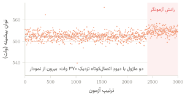
robust z of Pmax (median 552.3 W) after the drift correction
flagged 12 of 2,997 (|z| > 3.5):
serial Pmax W Voc V Isc A EL first guess
PVM-00212 538.0 49.42 13.646 C cracked cells
PVM-00403 562.4 50.42 14.218 A cells of a higher bin
PVM-00656 541.0 49.40 13.733 C cracked cells
PVM-00841 369.3 33.36 13.959 A bypass diode shorted
PVM-01024 539.8 49.38 13.675 C cracked cells
PVM-01491 546.1 49.65 13.827 C cracked cells
PVM-01556 565.8 50.38 14.218 A cells of a higher bin
PVM-01903 539.6 49.25 13.700 C cracked cells
PVM-02300 546.0 49.68 13.900 A unexplained - re-flash and inspect
PVM-02311 373.9 33.24 13.952 A bypass diode shorted
PVM-02542 558.0 50.30 14.083 A unexplained - re-flash and inspect
PVM-02778 541.4 49.45 13.696 C cracked cells
without the drift correction 13 flags, some only because
the last 600 read high; the shape of each reading (Voc, Isc,
EL) points at the process step to look atمثال 41.39 (از عدد تا گامِ فرایند) پرسش. پروندهٔ فلش را بخوانید، ماژولهای پرت را بیابید و برای هر کدام علتی احتمالی بنویسید. چرا رانش باید پیش از یافتنِ دادههای پرت اصلاح شود؟
پاسخ. ۱۲ ماژول پرتاند: ۶ ترکخورده با ردهٔ C، ۲ با دیودِ اتصالکوتاه، ۲ با سلولهای ردهٔ بالاتر، و ۲ بیتوضیح. بیاصلاحِ رانش، ۱۳ ماژول پرچم میخوردند. بعضی فقط چون در ۶۰۰ ماژولِ آخر بالا خوانده شده بودند.
تفسیر. شکلِ هر خواندن به گامِ فرایند اشاره میکند. ولتاژِ دوسوم یعنی یک دیودِ اتصالکوتاه، که گامِ جعبهتقسیم یا ضربه است. جریانِ کم با ردهٔ C یعنی ترک، که گامِ رشتهسازی یا لمینیتکاری است. جریانِ بالا یعنی سلولهایی از ردهٔ دیگر، که خطای دستهبندی یا تعویضِ جعبهٔ سلول است. دو ماژولِ بیتوضیح دوباره فلش و بازرسی میشوند. «نمیدانیم» هم پاسخی درست است، به شرطِ آنکه اقدام داشته باشد. وارسی: \(z = 0.6745 \times (538 - 552.3)/1.1 = -8.8\)، بسیار فراتر از \(3.5\).
41.6.4 مقاومتها از شیبِ منحنی
پروندهٔ فلش اگر کلِ منحنی را نگه دارد، نه فقط توانِ بیشینه را، میتواند علت را هم نشان دهد. شیبِ بخشِ صافِ منحنی نزدیکِ جریانِ اتصالِ کوتاه به مقاومتِ موازی مربوط است. شیبِ بخشِ تند نزدیکِ ولتاژِ مدارِ باز به مقاومتِ سری، پس از کمکردنِ سهمِ خودِ دیود:
\[ R_\text{sh} \approx -\left(\frac{dI}{dV}\right)^{-1}_{V \approx 0}, \qquad R_s \approx -\left(\frac{dV}{dI}\right)_{I \approx 0} - \frac{n N_s kT/q}{I_\text{sc}} \tag{41.20}\]
def slopes(sdm, n_pts: int = 300, noise: float = 0.001, seed: int = 4118):
"""Measured-like I-V points; shunt from the slope near I_sc, series
resistance from the slope near V_oc minus the diode's own part."""
rng = random.Random(seed)
v = np.linspace(0, sdm.voc, n_pts)
i = np.array([float(sdm.i(x)) * (1 + rng.gauss(0, noise)) for x in v])
near_isc = v < 0.2 * sdm.voc
k_sc = np.polyfit(v[near_isc], i[near_isc], 1)[0]
near_voc = i < 0.08 * i[0]
k_oc = np.polyfit(i[near_voc], v[near_voc], 1)[0]
rsh = -1 / k_sc
rs = -k_oc - sdm.a / i[0]
return rs, rsh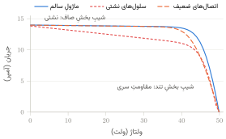
Rs and Rsh read from the slopes of a flash curve (0.1 % noise)
module Rs true Rs read Rsh true Rsh read
good module 0.172 0.180 146 154
shunted cells 0.172 0.216 15 15
weak joints 0.350 0.358 146 154
a low shunt (edge isolation, cracks through the junction)
tilts the flat part of the curve; a high series resistance
(cold solder, thin ribbon) leans the steep part - the
slopes point at the process step, which is why the flash
file keeps the whole curve, not only Pmax; Rsh read from
a noisy flat part is rough, Rs needs the diode's own part
(n Ns kT/q over Isc) taken away, and a strong shunt
biases it high (0.216 against 0.172) - read the two togetherمثال 41.40 (از شیب تا گامِ فرایند) پرسش. سه منحنی با یک توانِ اسمی متفاوتاند. از شیبها کدام عیب را میخوانید؟
پاسخ. ماژولِ نشتی مقاومتِ موازیِ 15 Ω نشان میدهد که درست خوانده شده. ماژولِ با اتصالِ ضعیف 0.358 Ω در برابرِ 0.350 واقعی.
تفسیر. نشتی به جداسازیِ لبه یا ترکی که از پیوند گذشته اشاره دارد. مقاومتِ سریِ بالا به لحیمِ سرد یا نوارِ نازک. پس همان پروندهٔ فلش، اگر منحنی را نگه دارد، به گامِ فرایند اشاره میکند. نشتیِ شدید خواندنِ مقاومتِ سری را بالا میبرد. پس این دو با هم خوانده میشوند. وارسی: سهمِ دیود \(1.803/13.98 = 0.129\,\Omega\) است و با \(0.172\) جمعِ شیب حدودِ \(0.30\,\Omega\) میشود.
41.6.5 تصویرِ الکترولومینسانس بهصورتِ عدد
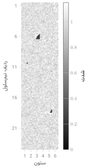
EL image of one module: 24 x 6 half cells, 6 x 6 pixels each (synthetic)
pixel darker than half the module's mean = inactive
half cell (row, col) inactive share
( 5, 2) 36%
( 9, 0) 3%
(17, 4) 11%
worst cell 36%: grade C (teaching rule: C above 10 %, B above 2 %)
the grade is a rule on numbers, so two graders agree when
they apply it (lesson C, kappa); the image is kept with the
serial as the module's baseline for later claimsایده. تصویر برای رایانه آرایهای از عددهاست. با قاعدهای روشن، سهمِ ناکارِ هر سلول حساب و رده تعیین میشود. ردهبندی وقتی قاعدهای روی عدد باشد، دو درجهبند با هم توافق دارند (بخش 41.5.19). تصویر با شمارهٔ سریال نگه داشته میشود و خطِ مبنای ادعاهای بعدی است (بخش 41.7.11). آستانهها اینجا آموزشیاند. هر قراردادِ خرید قاعدهٔ ردهبندیِ خود را مینویسد.
41.6.6 یکنواختیِ محمولهها
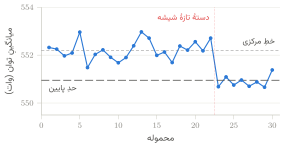
mean Pmax of 30 lots of 3,000 modules (chart from lots 1-15)
centre 552.19 W, lower limit 550.95 W
first lot below the limit: 23; eight in a row below the centre by lot 30
a 1.6 W drop is inside every module's tolerance and every
lot's spread, yet the lot means show it within a few lots -
the factory asks what changed at lot 23 (a new glass batch)
before the buyer's laboratory finds it a year laterمثال 41.41 (افتی که در رواداریِ هر ماژول پنهان است) پرسش. میانگینِ محمولهها از محمولهٔ ۲۳، 1.6 W پایین میآید. آیا هیچ ماژولی از رواداری بیرون میرود؟ نمودار کِی علامت میدهد؟
پاسخ. نه، چون 1.6 W در رواداریِ 5 W و در پراکندگیِ هر محموله است. اما نمودار در همان محمولهٔ ۲۳ علامت میدهد.
تفسیر. میانگینِ ۳٬۰۰۰ ماژول پراکندگیِ بسیار کمتری از یک ماژول دارد، پس افتی کوچک در آن آشکار است. کارخانه میپرسد در محمولهٔ ۲۳ چه عوض شد. اینجا یک دستهٔ تازهٔ شیشه بود. این پرسش پیش از آن پرسیده میشود که آزمایشگاهِ خریدار یک سال بعد آن را پیدا کند. این همان آزمونِ «یکنواختیِ تولید» است که بندِ آزمونهای فصل خواست (بخش 41.5.15). وارسی: حدِ پایین \(552.19 - 3 \times 0.41 = 550.95\) وات است.
41.6.7 گامِ ۴: ردههای توان پس از اصلاح
power classes (label = class, tolerance 0/+5 W)
class W as flashed corrected
535 3 3
540 2 2
545 153 201
550 2451 2622
555 382 165
560 3 1
565 1 1
269 modules change class with the correction: they
were labelled one class too high - the labels and the
flash records of those serials are reissued before
shipping (the label is a claim the buyer will test)ایده. برچسبِ ماژول ردهٔ توانِ آن است، با رواداریِ صفر تا ۵ وات. ۲۶۹ ماژول با اصلاحِ رانش رده عوض میکنند. یعنی یک رده بالاتر برچسب خورده بودند. برچسب و سابقهٔ فلشِ آن سریالها پیش از حمل دوباره صادر میشوند. برچسب ادعایی است که خریدار آن را میآزماید (بخش 10.6.1، بخش 39.12.2).
41.6.8 گامِ ۵: ناهمخوانیِ سلولها و ماژولها در رشته
سلولهای یک رشتهٔ ۲۴ نیمسلولی دیودِ جدا ندارند. جریانِ رشته از جریانِ اتصالِ کوتاهِ ضعیفترین سلول بیشتر نمیشود. در این مدل، شکستِ معکوس نادیده گرفته شده و برآورد محافظهکارانه است. ماژولها در رشته هر کدام دیودهای خود را دارند. ماژولِ pvfab هر دو را حساب میکند.
mismatch by the ch 15 curves
24 half cells in series, no reverse breakdown (one diode's
string):
binned 0.1 A 0.00%
mixed bins 0.05%
unsorted 0.34%
one cell 10 % low 1.53%
26 modules from the lot in one string:
random 26 0.01%
sorted by Isc 0.00%
one diode-short module 0.01%
binning keeps the cell loss small; one weak cell drags
its whole string down to its current - the reason cracked
and low cells are sorted out before stringing; a string
of lot modules loses little; a diode-short module adds
almost no mismatch - its loss is its own missing third,
a defect for the flash and the monitoring to findمثال 41.42 (اثرِ ناهمخوانیِ سلول بر رشته) پرسش. ناهمخوانیِ یک رشتهٔ ۲۴ نیمسلولی را با سلولهای ردهبندیشده، ردههای درهم و ردهبندینشده حساب کنید. یک سلولِ ۱۰ درصد ضعیف چه میکند؟
پاسخ. حدودِ صفر، 0.05 % و 0.34 %. یک سلولِ ۱۰ درصد ضعیف 1.5 % از رشته را میگیرد.
تفسیر. ردهبندی تلفاتِ سلول را کوچک نگه میدارد. یک سلولِ ضعیف کلِ رشته را تا جریانِ خودش پایین میکشد. برای همین سلولهای ترکخورده و ضعیف پیش از رشتهسازی کنار گذاشته میشوند. ۲۶ ماژولِ این محموله در یک رشته تقریباً چیزی از دست نمیدهند، همانطور که فصلِ ۱۰ برای کلِ آرایه نشان داد (بخش 10.4.9). ماژولِ با دیودِ اتصالکوتاه تقریباً ناهمخوانی نمیسازد. تلفاتش همان یکسومِ گمشدهٔ خودش است. این عیب است، نه ناهمخوانی، و فلش و پایش آن را پیدا میکنند. وارسی: با سلولِ ۱۰ درصد ضعیف، رشته در حدودِ 6.25 A کار میکند و سلولهای سالم کمی بالای ولتاژِ نقطهٔ بیشینهٔ خود میمانند.
41.6.9 گامِ ۶: طرحِ کنترلِ کارخانه و بازرسیِ دریافتِ نیروگاه
CONTROL = [ # characteristic, method, frequency, reaction
("cell current bin", "cell tester + golden cell", "every cell; shift",
"hold box, re-sort"),
("string joint", "peel test", "per stringer each shift",
"stop, re-test last lot"),
("cracks before lamination", "EL image", "every layup",
"repair string or scrap"),
("gel content", "solvent extraction sample", "per laminator daily",
"signal: hold, trace"),
("frame and sealant", "gauge, visual", "first piece + hourly",
"contain since last good"),
("bypass diodes", "diode check", "every module", "repair box, re-test"),
("power and label", "flash + golden module", "every module; 100",
"drift: hold, re-flash"),
("cracks after lamination", "EL image", "every module",
"grade; C is rejected"),
("insulation", "insulation test", "every module", "reject, analyse"),
]
INCOMING = [ # check at the plant, how, sample
("documents vs packing list", "serials, classes, BOM rev", "every"),
("certificate covers this BOM", "BOM rev vs tested BOM", "every lot"),
("container and pallets", "seals, shock tags, damage", "every"),
("transport cracks", "EL of a pallet", "1 a container"),
("power vs label", "lab flash, decision rule", "12 per 10 MWp"),
("flash file", "parse, drift, outliers", "every file"),
("visual and connectors", "glass, frame, type match", "AQL plan"),
]factory control plan for the PVM-550 line (summary)
characteristic method frequency / reaction
cell current bin cell tester + golden cell every cell; shift
hold box, re-sort
string joint peel test per stringer each shift
stop, re-test last lot
cracks before lamination EL image every layup
repair string or scrap
gel content solvent extraction sample per laminator daily
signal: hold, trace
frame and sealant gauge, visual first piece + hourly
contain since last good
bypass diodes diode check every module
repair box, re-test
power and label flash + golden module every module; 100
drift: hold, re-flash
cracks after lamination EL image every module
grade; C is rejected
insulation insulation test every module
reject, analyse
plant incoming-inspection checklist
check how sample
documents vs packing list serials, classes, BOM rev every
certificate covers this BOM BOM rev vs tested BOM every lot
container and pallets seals, shock tags, damage every
transport cracks EL of a pallet 1 a container
power vs label lab flash, decision rule 12 per 10 MWp
flash file parse, drift, outliers every file
visual and connectors glass, frame, type match AQL plan
visual AQL plan per container (620 modules): n = 132, accept <= 3
the factory plan watches the process; the plant's checks
test what the factory's records claim - the two meet at
the serial number and the flash recordمثال 41.43 (فهرستِ مواد، جریانِ فرایند، طرحِ کنترل و فهرستِ بازرسی) پرسش. برای ماژولِ PVM-550 فهرستِ مواد، جریانِ فرایند، طرحِ کنترل و فهرستِ بازرسیِ دریافتِ نیروگاه را آماده کنید.
پاسخ. فهرستِ مواد در بخش 41.5.1 است و جریانِ فرایند در جدولِ خط:
LINE = [ # (station, purpose, takt s, in-line check) - A-443
("stringer", "join cells into strings", 28, "string EL, peel sample"),
("lay-up", "glass, encapsulant, strings, busbars", 30, "visual, spacing"),
("pre-lamination EL", "find cracks before it is sealed", 25, "EL image"),
("laminator", "bond and encapsulate", 30, "gel content sample, voids"),
("trimming", "cut excess encapsulant", 20, "edge visual"),
("framing", "frame and seal", 28, "frame dimensions, sealant"),
("junction box", "attach, connect, pot", 26, "diode check"),
("curing", "cure sealant and potting", 0, "time in buffer"),
("IV flash and EL", "rate the module", 22, "Pmax, EL grade"),
("insulation test", "safety of the package", 18, "insulation, earth"),
("packing", "pallet and label", 24, "label = flash record"),
]طرحِ کنترل و فهرستِ بازرسی همین خروجیِ گامِ ۶ است.
تفسیر. طرحِ کارخانه فرایند را میپاید. وارسیهای نیروگاه آنچه را سوابقِ کارخانه ادعا میکنند میآزمایند. این دو در شمارهٔ سریال و سابقهٔ فلش به هم میرسند. هر سطرِ طرحِ کنترل واکنش دارد. سطری که فقط «اندازه بگیر» بگوید و نگوید پس از علامت چه کنیم، کنترل نیست (بخش 40.4.3). فهرستِ بازرسیِ نیروگاه سه لایه دارد. نخست سند: فهرستِ بستهبندی، بازنگریِ فهرستِ مواد و گواهی. دوم شاهدِ فیزیکی: کانتینر، پالت، تصویرِ الکترولومینسانس و فلشِ آزمایشگاهی. سوم داده: همین آزمایشگاه روی هر پروندهٔ فلش.
41.6.10 رقمِ وارسی در شمارهٔ سریال
شمارهٔ سریال پیوندِ ماژول با سابقهٔ فلشِ آن است. اگر در دریافت یک رقم اشتباه تایپ شود، ماژول به سابقهٔ ماژولِ دیگری وصل میشود. یک رقمِ وارسی در انتهای سریال بیشترِ این خطاها را میگیرد:
def luhn_ok(digits: str) -> bool:
"""Luhn check: double every second digit from the right."""
total = 0
for k, ch in enumerate(reversed(digits)):
d = int(ch)
if k % 2:
d = d * 2 - 9 if d > 4 else d * 2
total += d
return total % 10 == 0serial numbers with a check digit (Luhn), 2,000 keyed at receipt
one wrong digit caught: 100%
two neighbours swapped caught: 97%
a scanner rarely errs, a person typing does: the check
digit stops a mistyped serial from linking a module to
another module's flash record (lab D), which would make
a warranty claim argue about the wrong moduleایده. روشِ لوهن هر خطای تکرقمی را میگیرد و ۹۷ درصدِ جابهجاییهای دو رقمِ کنارِهم را. تنها استثنا جفتهای 09 و 90 است. پویشگر کمتر خطا میکند، اما انسانی که تایپ میکند خطا میکند. ادعای ضمانتی که بر سرِ ماژولِ اشتباه بحث کند، با یک رقمِ وارسی پیشگیری میشود.
- سه خطای دادهٔ پرونده کدام بودند و چرا هیچکدام بیصدا درست نمیشوند؟
- ماژولِ طلایی چگونه رانش را از تغییرِ محصول جدا میکند؟
- معادلهٔ 41.19 را توضیح دهید. چرا میانه بهجای میانگین؟
- چرا رانش پیش از یافتنِ دادههای پرت اصلاح میشود؟
- ولتاژِ دوسوم، جریانِ کم با ردهٔ C و جریانِ بالا هر کدام به کدام گامِ فرایند اشاره دارند؟
- چرا ۲۶۹ برچسب دوباره صادر میشوند؟
- چرا یک سلولِ ضعیف کلِ رشتهٔ سلولها را پایین میکشد؟
- چرا ماژولِ با دیودِ اتصالکوتاه ناهمخوانی نمیسازد اما توان از دست میدهد؟
- هر سطرِ طرحِ کنترل چه ستونهایی دارد؟
- سه لایهٔ فهرستِ بازرسیِ دریافت کداماند؟
- رقمِ وارسی چه خطاهایی را میگیرد و کدام را نه؟
- معادلهٔ 41.20 را توضیح دهید. چرا پروندهٔ فلش باید کلِ منحنی را نگه دارد؟
- چرا ردهبندیِ تصویر وقتی قاعدهای روی عدد باشد توافق میآورد؟
- چرا افتی که در رواداریِ هر ماژول پنهان است در میانگینِ محموله دیده میشود؟
41.7 ث. ماژول در نیروگاه
کارِ کارخانه در ساختگاه تمام نمیشود. ماژول باید با اتصالدهندهها، رشته، سازه، زمین، کابل و پایشِ نیروگاه جور شود. فصلِ ۱۰ طراحیِ رشته، اتصالدهندهها، زمینکردن، کابلکشی، ناهمخوانی و پایش را در سطحِ نیروگاه آورد (بخش 10.4.1، بخش 10.4.13، بخش 10.4.17، بخش 10.4.14). این بخش همان واسطها را از چشمِ ماژولِ ساختهشده میبیند. این بار با دادهٔ محمولهٔ واقعیِ آزمایشگاهِ ت و با وارسیهایی که در ساختگاه انجام میشوند (A-448).
41.7.1 جفتهای اتصالدهنده
connector pairs in Plant P: about 117,600 (teaching)
pair contact mOhm heat W rise K
same maker and type 0.25 0.04 1.1
cross-mated, new 1.50 0.26 6.4
cross-mated, aged 10.00 1.72 43.0
the energy is small; the heat is not: an aged mixed pair
runs tens of kelvin hotter inside a plastic body, and a
joint that opens under load arcs - pairs of one maker and
type (IEC 62852), crimped with that maker's tool, and the
module's connector type is fixed in the purchase orderایده. انرژیِ تلفشده کم است، اما گرما نه. جفتِ ناهمسانِ کهنه دهها کلوین داغتر از جفتِ درست است، آن هم در بدنهای پلاستیکی. تماسی که زیرِ بار باز شود قوس میزند. پس جفتها از یک سازنده و یک نوعاند (IEC 62852، بخش 10.4.13) و با ابزارِ پرسِ همان سازنده بسته میشوند. نوعِ اتصالدهندهٔ ماژول در سفارشِ خرید ثابت میشود. با بیش از ۱۱۷ هزار جفت، حتی سهمِ کوچکی از جفتهای بد صدها نقطهٔ داغ میسازد.
مثال 41.44 (گرما در یک جفتِ ناهمسان) پرسش. جفتِ اتصالدهنده با 0.25 و 10 mΩ در 13.11 A چقدر گرما میسازد؟ با مقاومتِ گرماییِ 25 K/W چقدر داغ میشود؟
پاسخ. \(13.11^2 \times 0.00025 = 0.04\,\text{W}\) و \(13.11^2 \times 0.010 = 1.72\,\text{W}\). افزایشِ دما \(1.1\) و \(43\,\text{K}\).
تفسیر. جفتِ کهنهٔ ناهمسان در ظهرِ تابستان، با هوای ۴۰ درجه و ماژولِ داغ، از حدِ دمای بدنهٔ پلاستیکی میگذرد. گرمانگاری این جفتها را مییابد (بخش 41.7.14). پیشگیری ارزانتر است: یک نوع اتصالدهنده و ابزارِ پرسِ همان سازنده.
41.7.2 رشته با ولتاژِ واقعیِ محموله
26-module string at -15 C, beta -0.27 %/K (factor 1.108)
module Voc used V string V margin to 1,500 V
data sheet 49.90 V 49.90 1438 +62 V
lot mean 49.90 1438 +62 V
lot 99th percentile 50.19 1446 +54 V
lot maximum 50.42 1452 +48 V
even 26 of the highest-Voc modules stay below 1,500 V; the
margin a string design keeps is for exactly this: lot
spread, the coefficient's tolerance and a colder morning
(max string length by the linear rule: 26)ایده. طراحیِ رشته با برگهٔ مشخصات انجام شد (بخش 10.4.1). اکنون پروندهٔ فلش ولتاژِ واقعیِ ماژولها را میدهد. حتی ۲۶ ماژولِ با بیشترین ولتاژ زیرِ 1500 V میمانند، با 48 V حاشیه. حاشیهای که طراحی نگه داشته بود دقیقاً برای همین است: پراکندگیِ محموله، رواداریِ ضریبِ دمایی و صبحی سردتر. بدونِ پروندهٔ فلش، این وارسی ممکن نبود.
مثال 41.45 (حاشیهٔ رشته با بدترین ماژولها) پرسش. اگر ۲۶ ماژولِ رشته همه بیشترین ولتاژِ محموله، یعنی 50.42 V، را داشته باشند، ولتاژِ رشته در -15 °C چقدر است؟
پاسخ. ضریبِ سرما \(1 - 0.0027 \times (-40) = 1.108\) است. پس \(26 \times 50.42 \times 1.108 = 1452\,\text{V}\)، با 48 V حاشیه تا 1500 V.
تفسیر. این بدترین حالت فقط وقتی رخ میدهد که ماژولهای پرولتاژ کنارِ هم نصب شوند. پس حاشیه کافی است. اما اگر رشته ۲۷ ماژولی بود، همین حساب 1508 V میداد. یعنی پروندهٔ فلش یک طراحیِ مرزی را رد میکرد. این همان دلیلی است که فصلِ ۱۰ رشته را ۲۶ ماژولی گرفت (بخش 10.4.1). وارسی: \(27 \times 50.42 \times 1.108 = 1508\).
41.7.3 گیرهها در ساختگاه
clamp positions measured on 200 clamps (zone 400-550 mm, teaching)
mean 461 mm, sd 40 mm; outside the zone: 20
19 of them come from one crew's 20 tables: a template
set wrong, not random error - the crew's tables are
re-clamped and the template checked; the sample is taken
by crew and by day, so a habit shows as a groupایده. ۱۹ گیره از ۲۰ گیرهٔ بیرون از ناحیه از یک گروهِ کاریاند. این خطای تصادفی نیست، عادت است: قالبی که درست تنظیم نشده. میزهای آن گروه دوباره گیره میشوند و قالب وارسی میشود. نمونهبرداری بر اساسِ گروه و روز انجام میشود تا عادت به صورتِ یک دسته دیده شود. اگر نمونه تصادفی از کلِ میدان بود، همین ۱۰ درصد پخش میشد و علتش پنهان میماند (بخش 41.5.6).
41.7.4 پیوستگیِ زمینِ قابها
frame-to-earth continuity on 60 tables (teaching limit 0.5 ohm)
median 0.08 ohm; above the limit: tables [18, 45]
a missing serrated washer leaves the frame bonded through
paint and anodising - the reading jumps by orders of
magnitude, not by a little: the test finds an absent
joint, so it is done on every table, not on a sampleایده. واشرِ دندانهدارِ جامانده قاب را فقط از راهِ رنگ و لایهٔ آندایز به سازه وصل میکند. خواندن کمی بالا نمیرود، چند مرتبه بالا میرود. پس این آزمون نبودنِ یک اتصال را مییابد، نه ضعفِ آن را. چنین آزمونی روی هر میز انجام میشود، نه روی نمونه، چون یک اتصالِ نبوده در نمونه دیده نمیشود (بخش 10.4.17). حدِ این درس آموزشی است. حدِ واقعی از مطالعهٔ زمین میآید (فصل 26).
مثال 41.46 (یک خواندنِ پنجاهبرابر) پرسش. میانهٔ پیوستگیِ زمینِ ۶۰ میز 0.08 Ω است و میزِ ۱۸ 4.2 Ω میخوانَد. این چه میگوید؟
پاسخ. خواندن \(4.2/0.08 = 52\) برابرِ میانه است. این ضعفِ اتصال نیست، نبودِ آن است: واشری جامانده یا پیچی که از رنگ نگذشته.
تفسیر. آزمونی که یک اتصالِ نبوده را مییابد روی هر میز انجام میشود. نمونهگیری برای این عیب کار نمیکند، چون یک میزِ بیاتصال در نمونهٔ کوچک دیده نمیشود اما در نیروگاه هست (بخش 10.4.17).
41.7.5 حلقهٔ کابل و آذرخش
آذرخشی که نزدیکِ آرایه فرود میآید، در هر حلقهٔ کابل ولتاژ القا میکند. اگر مساحتِ حلقه \(A\) و فاصله \(r\) باشد و جریانِ آذرخش با آهنگِ \(di/dt\) تغییر کند:
\[ V \approx \frac{\mu_0\,A}{2\pi\,r}\,\frac{di}{dt} \tag{41.21}\]
voltage induced in a string loop by a strike 50 m away (10 kA/us, teaching)
routing loop m2 volts
return beside the outgoing cable 0.2 7
return along the far table edge 67.8 2713
the loop area, not the cable size, decides the surge: the
return conductor runs beside the outgoing one along the
table - a routing rule on the drawings, checked at the
site, that costs nothing when plannedایده. اندازهٔ ضربه را مساحتِ حلقه تعیین میکند، نه سطحِ مقطعِ کابل. اگر کابلِ برگشت از لبهٔ دورِ میز بیاید، حلقهای به مساحتِ ۶۸ مترمربع میسازد و هزاران ولت القا میشود. اگر کنارِ کابلِ رفت بیاید، فقط چند ولت. این قاعدهٔ مسیرِ کابل روی نقشهها نوشته و در ساختگاه وارسی میشود. اگر از پیش برنامهریزی شود، هزینهای ندارد (فصل 26).
مثال 41.47 (یک حلقه، دو مسیر) پرسش. آذرخشی با آهنگِ 10 kA/µs در 50 m فرود میآید. ولتاژِ القاشده در حلقهٔ 67.8 m² و حلقهٔ 0.2 m² چقدر است؟
پاسخ. \(2\times10^{-7} \times 67.8/50 \times 10^{10} = 2712\,\text{V}\) و حدودِ 7 V.
تفسیر. کابلِ برگشت که از لبهٔ دورِ میز بیاید، ولتاژی میسازد که از ردهٔ تحملِ بسیاری از تجهیزات بالاتر است. همان کابل کنارِ کابلِ رفت تقریباً هیچ نمیسازد. هزینهٔ دو مسیر یکی است. فرقشان در نقشه است (فصل 26).
41.7.6 سیمبندیِ رشته در برابرِ گردوغبارِ ناهمسان
2P table, lower row 3% more soiled: two strings per table
each string in one row 28.176 kW
each string half in each 28.123 kW
modules alone (no mismatch) 28.176 kW
the U-shaped strings lose 0.19% more: the soiled half
limits the clean half; strings along a row keep each
string uniform - a wiring choice made on the drawingایده. میزِ دوردیفهٔ نیروگاهِ P دو رشته دارد. ردیفِ پایین گردوغبارِ بیشتری میگیرد. اگر هر رشته در یک ردیف باشد، هر رشته یکنواخت است و ناهمخوانی ندارد. اگر رشته نیمی در ردیفِ بالا و نیمی در پایین باشد، نیمهٔ کثیف نیمهٔ تمیز را محدود میکند. این انتخابِ سیمبندی روی نقشه انجام میشود و پس از نصب هزینهای برای تغییرش نیست، اما برای کابلِ اضافه شاید باشد (بخش 10.4.10).
مثال 41.48 (۵۳ وات در هر میز) پرسش. با رشتههای دوردیفه، هر میز 28.123 kW و با رشتههای یکردیفه 28.176 kW میدهد. برای ۲٬۱۰۰ میز چقدر فرق است؟
پاسخ. \(28.176 - 28.123 = 0.053\,\text{kW}\) در هر میز و \(0.053 \times 2100 = 111\,\text{kW}\) در شرایطِ این درس.
تفسیر. فرق کوچک است، اما هر ساعتی که ردیفِ پایین کثیفتر است تکرار میشود و هزینهای برای جلوگیری ندارد. انتخاب روی نقشه انجام میشود. پیمانکاری که برای کوتاهیِ کابل رشتهٔ دوردیفه پیشنهاد کند، باید این فرق را با صرفهجوییِ کابل مقایسه کند. وارسی: \(4200/2 = 2100\) میز.
41.7.7 پایشِ رشته: یافتنِ دیودِ اتصالکوتاه
فصلِ ۱۰ نشان داد یک زیررشتهٔ کنارگذاشته فقط حدودِ 1.5 % از جریانِ رشته را میگیرد و در نویز گم میشود. برای کشف به روند نیاز است (مثال 10.43). اینجا همان روند با مجموعِ تجمعیای ساخته میشود که در فصلِ ۳۷ آمد (بخش 37.3).
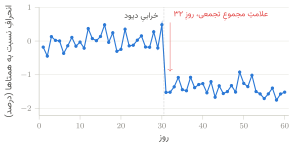
20 strings at one combiner; string 8 gets a shorted diode
array operating voltage 1092 V
string 8: 12.97 A; others 13.07 A, sd 0.13 (soiling 1 %)
one day's comparison: -0.8 sd - lost in the spread
its own ratio to the peers falls by 1.34% at the failure;
CUSUM on that ratio (day noise 0.25%) signals on day 32
(1 day after the failure on day 31) - each string is
compared with its own history, not only with its
neighbours (ch 37); a whole open string shows at onceمثال 41.49 (مقایسه با همسایه یا با گذشتهٔ خود؟) پرسش. دیودِ یکی از ماژولهای رشتهٔ ۸ اتصالکوتاه میشود. آیا مقایسهٔ یکروزه با ۱۹ رشتهٔ همسایه آن را مییابد؟ مقایسهٔ رشته با گذشتهٔ خودش چه؟
پاسخ. مقایسهٔ یکروزه نه: رشتهٔ ۸ فقط 0.8 انحرافِ معیار زیرِ همسایههاست. مجموعِ تجمعی روی نسبتِ رشته به همتاها، فردای خرابی علامت میدهد.
تفسیر. تفاوتِ پایدارِ رشتهها، مانندِ گردوغبار و پیری، از یک روز به روزِ دیگر کمابیش ثابت است. پس اگر هر رشته با گذشتهٔ خودش مقایسه شود، این تفاوت حذف میشود و فقط نوسانِ روزانه میماند. افتی 1.34 % در برابرِ نوسانِ 0.25 % بزرگ است. رشتهٔ کاملاً باز در هر دو روش فوراً دیده میشود. وارسی: \(1.34/0.25 = 5.4\) انحرافِ معیارِ روزانه، پس علامت در یک یا دو روز معقول است.
41.7.8 تخریبِ ناشی از پتانسیل در طولِ رشته
فصلِ ۱۰ سازوکارِ تخریبِ ناشی از پتانسیل را آورد (بخش 10.3.13). اینجا پرسش این است: در رشتهٔ نیروگاهِ P، کدام ماژولها در معرضاند؟
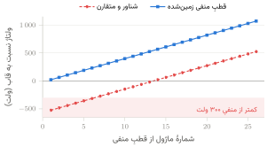
potential of each module to the frame, string at MPP 1091 V
earthing of the DC side modules below -300 V lowest V
floating, symmetric 6 -524
negative pole earthed 0 21
positive pole earthed 19 -1070
cells far below the frame's potential can lose power by
ion drift (PID): the module's PID test result (IEC TS
62804-1) and the inverter's earthing scheme are chosen
together; an inverter without isolation cannot earth a
pole, and night-time offset is a maker's option to askایده. با طرفِ DC شناور و متقارن، شش ماژولِ سرِ منفی بیش از ۳۰۰ ولت زیرِ پتانسیلِ قاباند. در ماژولهای رایج، همینها بیشتر در معرضاند. زمینکردنِ قطبِ منفی همه را بالای صفر میبرد، اما اینورترِ بدونِ جداسازی نمیتواند قطبی را زمین کند. پس نتیجهٔ آزمونِ این تخریب برای ماژول (IEC TS 62804-1:2025) و طرحِ زمینکردنِ اینورتر با هم انتخاب میشوند (بخش 10.4.19). جابهجاییِ شبانهٔ پتانسیل گزینهای است که باید از سازندهٔ اینورتر پرسید. فرضِ این فصل نیست.
مثال 41.50 (کدام ماژولها زیرِ ۳۰۰ ولتِ منفیاند؟) پرسش. رشتهٔ ۲۶ ماژولی در 1091 V و شناور و متقارن است. کدام ماژولها بیش از ۳۰۰ ولت زیرِ قاباند؟
پاسخ. ماژولِ \(k\)، از صفر شمرده از قطبِ منفی، در \(-545.5 + (k + 0.5) \times 41.96\) ولت است. این زیرِ ۳۰۰- است وقتی \(k + 0.5 < 5.85\)، یعنی شش ماژولِ نخست.
تفسیر. در نیروگاه، با ۴٬۲۰۰ رشته، بیش از ۲۵ هزار ماژول در این ناحیهاند. اگر ماژول در آزمونِ تخریبِ ناشی از پتانسیل ضعیف باشد، همین ماژولها در سالهای نخست توان از دست میدهند. پایشِ رشتهها با گذشتهٔ خود (بخش 41.7.7) آن را کند و تدریجی میبیند. پیشگیری در انتخابِ ماژول و طرحِ زمینکردن است. وارسی: \(6 \times 4200 = 25\,200\).
41.7.9 نمونهٔ تصویرِ الکترولومینسانس در ساختگاه
برای اینکه با اطمینانِ \(1-\beta\) دستکم یک ماژولِ ترکخورده در نمونه باشد، وقتی سهمِ ترکخوردهها \(p\) است:
\[ n = \left\lceil \frac{\ln \beta}{\ln(1 - p)} \right\rceil \tag{41.22}\]
electroluminescence after installation: sample to see a
cracked share with 95 % confidence (at least one in sample)
share cracked modules to image night hours at 120 / h
2.0% 149 1.2
1.0% 299 2.5
0.5% 598 5.0
a sample shows whether cracks exist above a share, not
which modules have them; it is spread over blocks, crews
and delivery lots so a cause shows as a clusterایده. نمونه نشان میدهد آیا ترک بالای سهمی هست، نه اینکه کدام ماژول ترک دارد. نمونه میانِ بلوکها، گروههای کاری و محمولههای تحویل پخش میشود تا علت به صورتِ خوشه دیده شود: محمولهای که در حمل آسیب دیده، یا گروهی که روی ماژول راه رفته است. ۲۹۹ ماژول برای هر بلوک در دو شبِ کار تصویر میشوند. این عدد در مبنای D-045 آمده است.
مثال 41.51 (اندازهٔ نمونه با دست) پرسش. برای دیدنِ سهمِ ۲ درصد ترکخورده با اطمینانِ ۹۵ درصد، چند ماژول تصویر میشود؟
پاسخ. \(n = \lceil \ln 0.05 / \ln 0.98 \rceil = \lceil 148.3 \rceil = 149\).
تفسیر. نصفکردنِ سهمِ هدف تعدادِ نمونه را تقریباً دو برابر میکند. اگر نمونه هیچ ترکی نشان ندهد، فقط میگوید سهم احتمالاً زیرِ هدف است. صفر نیست. اگر نشان دهد، تصویرِ کاملِ آن خوشه دنبال میشود (بخش 41.7.9).
41.7.10 ماژولِ یدکی از ردهٔ دیگر
one module replaced in a string of 26 x 550 W (14,303 W)
replacement string W change W
same class 550 W 14,303 +0.0
higher class 560 W 14,312 +9.7
lower class 540 W 14,292 -10.4
aged 520 W 14,268 -34.5
a 560 W spare returns 97% of its extra 10 W, a 540 W
one costs 10.4 W for its 10 W short, an aged 520 W one
34.5 W for 30 W: the weak module sets the string's
current - spares of the same class, connector and clamping
zones (ch 39 stock)مثال 41.52 (یدکِ قویتر سودی ندارد، یدکِ ضعیفتر زیان دارد) پرسش. در رشتهای از ۲۶ ماژولِ 550 W، یک ماژول با 560، 540 یا 520 W عوض میشود. توانِ رشته چقدر تغییر میکند؟
پاسخ. +9.7 W، −10.4 W و −34.5 W.
تفسیر. ماژولِ قویتر بیشترِ ۱۰ واتِ اضافهاش را برمیگرداند. ماژولِ ضعیفتر بیش از کسریِ خودش میگیرد، چون جریانِ رشته را تعیین میکند. ماژولِ کهنهٔ ۵۲۰ واتی ۳۴٫۵ وات برای ۳۰ وات کسری میگیرد. پس یدک از همان رده، همان اتصالدهنده و همان ناحیههای گیره است. ماژولِ مدلِ دیگر، حتی قویتر، ممکن است اتصالدهنده یا ابعادِ دیگری داشته باشد. تعدادِ یدک از حسابِ موجودیِ فصلِ ۳۹ میآید (بخش 39.6.7).
41.7.11 ترکهایی که بعداً بزرگ میشوند
0.5% of 109,200 modules with a crack at installation (546 modules)
inactive area grows with thermal and wind cycles (teaching:
+6 % on average over some years, ch 10 loss curve)
loss at installation 0.4 kW; after growth 7.5 kW
of 60.1 MWp: 0.012% of the array
small for the plant, larger for each owner of a cracked
module: the cracked ones also run hotter (hot spots, ch 10)
- which is why EL at receipt and after installation sets
the baseline for warranty claims laterایده. ریزترکِ زمانِ نصب تقریباً هزینهای ندارد. اما با چرخههای دما و باد، بخشی از سلول ناکار میشود و تلفات بالا میرود (بخش 10.3.16). برای کلِ نیروگاه کوچک است، اما برای هر ماژولِ ترکخورده بزرگتر است. آن ماژولها داغتر هم کار میکنند. پس تصویرِ دریافت و تصویرِ پس از نصب خطِ مبنای هر ادعای ضمانتِ بعدیاند.
41.7.12 ضمانتِ توان: یک نمونه چه چیزی را ثابت میکند؟
پس از چند سال، خریدار میخواهد نشان دهد ماژولها کمتر از ضمانت توان دارند. چند ماژول برداشته و دوباره فلش میشوند. اما عدمِ قطعیتِ زنجیرهٔ مرجع (بخش 41.4.13) برای همهٔ ماژولها یکسان است و با تعدادِ نمونه کم نمیشود. فقط بخشِ تصادفی کم میشود. با بخشِ نظاممندِ \(u_\text{sys}\)، بخشِ تصادفیِ \(u_\text{rand}\) و \(n\) ماژول، کوچکترین کمبودِ قابلِاثبات این است:
\[ \delta_\text{min} = (z_{1-\alpha} + z_{1-\beta})\sqrt{u_\text{sys}^2 + \frac{u_\text{rand}^2}{n}} \tag{41.23}\]
def detectable(n: int, sys_pct: float, rand_pct: float) -> float:
"""Smallest mean power shortfall (%) a sample of n re-flashed modules
shows with 5 % risk and 90 % power: the systematic part (reference
chain, shared by every module) does not shrink with n."""
u = math.sqrt(sys_pct ** 2 + rand_pct ** 2 / n)
return (Z_A + Z_B) * u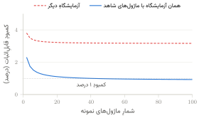
re-flashing modules after some years: smallest shortfall shown
(5 % risk, 90 % power; teaching uncertainties from lesson B)
measurement n = 5 n = 20 n = 100
another lab, new reference 3.43 % 3.22 % 3.17 %
same lab, kept control modules 1.61 % 1.11 % 0.93 %
more modules shrink only the random part; the reference
chain stays: a breach of about 1 % is never proven by a
different lab, however many modules - only a relative
measurement against control modules kept in the dark
since delivery (same lab, same reference) shows it, with
about 100 modules; the contract names this method before
the first claimمثال 41.53 (کمبودِ ۱ درصدی را با کدام روش میتوان ثابت کرد؟) پرسش. با آزمایشگاهی دیگر و ۱۰۰ ماژول، کوچکترین کمبودِ قابلِاثبات چقدر است؟ با همان آزمایشگاه و ماژولهای شاهد چطور؟
پاسخ. 3.17 % در برابرِ 0.93 %.
تفسیر. آزمایشگاهِ دیگر هر قدر هم ماژول بیازماید، کمبودِ حدودِ ۱ درصد را ثابت نمیکند. زنجیرهٔ مرجعِ او با زنجیرهٔ کارخانه فرق دارد و این فرق کم نمیشود. فقط اندازهگیریِ نسبی آن را نشان میدهد: چند ماژولِ شاهد که از روزِ تحویل در تاریکی نگه داشته شدهاند، کنارِ ماژولهای میدان در همان آزمایشگاه و با همان مرجع آزموده میشوند. قرارداد این روش را پیش از نخستین ادعا مینویسد (بخش 39.6.3). وارسی: \((1.645 + 1.282)\sqrt{1.08^2 + 1.03^2/100} = 3.17\).
41.7.13 عدمِ قطعیتِ منحنیِ میدانی
string I-V curve in the field, translated to STC (teaching %)
irradiance sensor (reference cell) 2.0
module temperature 2 K x 0.35 %/K 0.7
translation to STC (model) 1.0
tracer and cabling 0.5
non-uniform light and soiling 1.0
combined 2.60 %, expanded (k = 2) 5.2 %
a string more than 5 % low is a finding; 1 % is not -
field curves compare strings measured together in the same
hour (shared sensor, shared sun), where most of these
terms cancel; absolute power is the laboratory's jobایده. منحنیِ جریان–ولتاژِ یک رشته در میدان، پس از بردن به شرایطِ استاندارد، حدودِ ۵ درصد عدمِ قطعیتِ گسترشیافته دارد. رشتهای که بیش از این کم باشد یافته است. ۱ درصد یافته نیست. پس منحنیهای میدانی رشتههایی را مقایسه میکنند که در یک ساعت و با یک حسگر اندازه گرفته شدهاند (بخش 10.6.2). در این مقایسه بیشترِ جملهها حذف میشوند. توانِ مطلق کارِ آزمایشگاه است.
41.7.14 پنجرهٔ پیمایشِ گرمانگاری
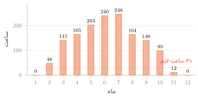
hours with GHI >= 600 W/m2 (data pack 1.1.0), for an infrared survey
month 1 2 3 4 5 6 7 8 9 10 11 12
hours 0 48 141 165 203 240 246 164 140 99 12 0
a survey of 60 MWp at 2 MWp a drone hour needs 30 h;
month 7 offers 246 such hours, month 1 only 0
a hot cell shows only under strong, steady sun: the survey
is planned for the season and the time of day the data
allow, and the threshold is the method's (teaching here)ایده. سلولِ داغ فقط زیرِ آفتابِ قوی و پایدار دیده میشود. گرمانگاری با پهپاد برای ۶۰ مگاوات حدودِ ۳۰ ساعت پرواز میخواهد. در ماهِ هفتمِ سالِ داده ۲۴۶ ساعتِ مناسب هست و در ماهِ نخست هیچ. پس پیمایش برای فصل و ساعتی برنامهریزی میشود که داده اجازه میدهد. آستانهٔ تابش اینجا آموزشی است. روشِ گرمانگاری آستانهٔ خود را دارد (IEC TS 62446-3:2017).
مثال 41.54 (یک ماه برای سی ساعت) پرسش. پیمایشِ گرمانگاری ۳۰ ساعتِ پرواز با تابشِ بالای 600 W/m² میخواهد. در ماهِ دوم و ماهِ هفتمِ سالِ داده چند درصد از ساعتهای مناسب مصرف میشود؟
پاسخ. ماهِ دوم ۴۸ ساعت دارد: ۶۳ درصد. ماهِ هفتم ۲۴۶ ساعت: ۱۲ درصد.
تفسیر. در ماهِ دوم یک هفتهٔ ابری پیمایش را به ماهِ بعد میبرد. در ماههای گرم جا هست، اما پهپاد و گروه باید زودتر رزرو شوند. پیمایشِ پذیرش پیش از تحویلِ نیروگاه در فصلِ ۵۰ برنامهریزی میشود.
41.7.15 پرسِ اتصالدهنده در ساختگاه
connectors crimped at the site: 5 pull tests a day per installer
an installer making 5% bad crimps is caught within d days with chance
days 1 3 5 10
chance 23% 54% 72% 92%
sampling per installer, not per string: a bad habit belongs
to a person and a tool (ch 40, competency) - the samples
are cut out and the connectors replaced, so the test is
destructive and the count small; the maker's tool and
training remove most of the risk before any testایده. نمونهگیری بر اساسِ نصاب است، نه بر اساسِ رشته. عادتِ بد مالِ یک فرد و یک ابزار است (بخش 40.3.5). نصابی که ۵ درصد پرسِ بد دارد، با پنج آزمون در روز در ده روز با ۹۲ درصد احتمال پیدا میشود. آزمونِ کشش مخرب است. نمونهها بریده و اتصالدهندهها عوض میشوند، پس تعداد کم است. ابزار و آموزشِ سازنده بیشترِ خطر را پیش از هر آزمونی برمیدارند (بخش 41.7.1).
مثال 41.55 (پنج نمونه در روز) پرسش. نصابی ۵ درصد پرسِ بد میسازد. با پنج آزمونِ کشش در روز، احتمالِ یافتنش در یک روز و در ده روز چقدر است؟
پاسخ. \(1 - 0.95^{5} = 23\,\%\) و \(1 - 0.95^{50} = 92\,\%\).
تفسیر. در ده روزِ نخست، این نصاب حدودِ ۲٬۵۰۰ اتصال میسازد که ۵ درصدشان بد است. پس آزمون جای پیشگیری را نمیگیرد. ابزارِ سازنده، آموزش و تأییدِ نخستین اتصالهای هر نصاب پیش از کارِ انبوه میآیند (بخش 40.3.5). وارسی: \(0.95^{50} = 0.077\).
41.7.16 انباشتِ رواداری روی میز
26 modules side by side on a table row (teaching tolerances)
module width 1134 +- 2.0 mm; clamp gap 20 +- 1.0 mm
nominal length 29.984 m
worst case +- 77 mm; statistical (3 sigma) +- 11 mm
the end clamps need room for the statistical stack, not the
worst case - but a lot cut from one glass batch can all sit
near one tolerance edge, so the table keeps a margin and
installers set gaps with a gauge, not by eyeایده. اگر هر ۲۶ ماژول و هر ۲۵ فاصله در بدترین سو باشند، ردیف ۷۷ میلیمتر بلندتر یا کوتاهتر میشود. این تقریباً هرگز رخ نمیدهد. جمعِ آماری حدودِ ۱۱ میلیمتر است. گیرههای انتهایی برای انباشتِ آماری جا میخواهند، نه برای بدترین حالت. اما محمولهای که از یک دستهٔ شیشه بریده شده، ممکن است همه نزدیکِ یک لبهٔ رواداری باشند. پس میز حاشیه نگه میدارد و نصاب فاصله را با شابلون میگذارد، نه با چشم. این همان منطقِ انباشتِ رواداری در فصلِ ۳۰ است (فصل 30).
- چرا جفتِ ناهمسانِ اتصالدهنده با وجودِ تلفاتِ کم خطرناک است؟
- پروندهٔ فلش چه چیزی به وارسیِ طولِ رشته اضافه میکند؟
- چرا نمونهٔ گیرهها بر اساسِ گروه و روز گرفته میشود؟
- چرا آزمونِ پیوستگیِ زمین روی هر میز انجام میشود، نه روی نمونه؟
- معادلهٔ 41.21 را توضیح دهید. چه چیزی ضربهٔ القایی را تعیین میکند؟
- چرا رشتههای یکردیفه در برابرِ گردوغبارِ ناهمسان بهترند؟
- چرا مقایسهٔ رشته با گذشتهٔ خودش دیودِ اتصالکوتاه را مییابد اما مقایسهٔ یکروزه با همسایهها نه؟
- در رشتهٔ شناور، کدام ماژولها در معرضِ تخریبِ ناشی از پتانسیلاند؟
- معادلهٔ 41.22 را توضیح دهید. برای ۲ درصد چند ماژول لازم است؟
- چرا یدکِ ضعیفتر بیش از کسریِ خودش از رشته میگیرد؟
- معادلهٔ 41.23 را توضیح دهید. چرا آزمایشگاهِ دیگر کمبودِ ۱ درصد را ثابت نمیکند؟
- ماژولهای شاهد چه چیزی را حذف میکنند؟
- چرا منحنیِ میدانی برای مقایسهٔ رشتهها خوب است و برای توانِ مطلق نه؟
- پیمایشِ گرمانگاری کِی برنامهریزی میشود؟
- چرا نمونهگیریِ پرس بر اساسِ نصاب است؟
- انباشتِ بدترینحالت و آماری چه فرقی دارند و گیرهها برای کدام جا میخواهند؟
41.8 نیروگاهِ P: سه مثالِ یکپارچه
برنامه:
python -m companion.ch41.integratedمثال 41.56 (مقدماتی: یک ماژول از سلول تا رشته، با دست) پرسش. از چگالیِ جریانِ اشباع و جریانِ سلول تا ولتاژِ رشته در سردترین صبح، زنجیره را با دست حساب کنید.
one module from cell to string, by hand
cell Voc = 0.02569 ln(0.0418 / 9.1e-14) = 0.690 V
cell FF (Green, Rs 0.64 ohm cm2) = 0.812
cell power = 0.690 x 0.0418 x 0.812 x 330 = 7.73 W
module = 72 x 7.73 x CTM 0.992 = 552 W (label class 550)
string Voc at -15 C = 26 x 49.90 x 1.108 = 1438 V < 1,500 V
a hand check of this chain catches a cell area in m2, a
CTM above 1 without a reason, or a string sized at 25 Cپاسخ. سلولِ 0.690 V، ضریبِ پرشدگیِ 0.812 و 7.73 W. ماژولِ حدودِ 552 W، با ردهٔ برچسبِ 550. رشته 1438 V، زیرِ 1500 V.
تفسیر. این حسابِ دستی با کد و با میانهٔ محموله، یعنی 552.3 W، میخواند. سه لغزشِ رایج با آن پیدا میشوند: مساحتِ سلول به مترمربع بهجای سانتیمترمربع، نسبتِ سلول به ماژولِ بالای یک بیدلیل، و رشتهای که در 25 °C اندازه شده باشد. ضریبِ پرشدگیِ اینجا بینشتی است. با نشتی، مانندِ بخش 41.3.7، 0.810 میشود.
مثال 41.57 (میانی: محموله از پروندهٔ فلش تا پذیرشِ نیروگاه) پرسش. مسیرِ پذیرشِ یک محموله را از پروندهٔ فلش تا نمونهٔ تصویرِ الکترولومینسانس در ساختگاه، در عدد خلاصه کنید.
the lot from the flash file to the plant's acceptance
file: 5 data problems returned to the maker
tester drift +2.5 W from seq 2400: 269 labels reissued
outliers: 12 flagged, each with a first guess at its cause
transport: EL of a pallet a container, caught 71% of rough ones
site EL: 299 modules to see a 1 % cracked share
the lot is accepted on evidence the plant checked itself,
not on the maker's 'all passed'تفسیر. هر عدد پاسخِ یک پرسشِ فصل است. آیا داده شاهد است؟ پنج خطا برگشت داده شد. آیا آزمونگر درست است؟ نه، و ۲۶۹ برچسب دوباره صادر شد. آیا ماژولِ معیوبی هست؟ ۱۲ مورد، هر کدام با علتِ احتمالی. آیا حمل آسیب زده؟ قاعدهٔ پالت ۷۱ درصدِ کانتینرهای آسیبدیده را میگیرد. آیا نصب ترک ساخته؟ ۲۹۹ تصویر در هر بلوک پاسخ میدهند. نیروگاه محموله را با شاهدی میپذیرد که خودش وارسی کرده است، نه با «همه قبول» سازنده.
مثال 41.58 (یکپارچه: مبنای ساخت و پذیرشِ ماژول) پرسش. مبنای ساخت و پذیرشِ ماژولهای نیروگاه را با موردهای باز بنویسید.
D-045 module manufacturing and acceptance basis (PVM-550)
1 purchase by BOM revision: a certificate (IEC 61215,
IEC 61730) counts only for the BOM it tested; any change
follows the retesting guideline (IEC TS 62915)
2 the maker's quality system (IEC 62941) and its control
plan seen before award; golden-module checks every 100
3 flash files parsed on receipt: data, drift, outliers;
labels reissued when a drift is found
4 EL of one pallet a container; whole container if two or
more cracked; site EL sample of 299 a block after
installation (1 % at 95 %)
5 laboratory flash 12 per 10 MWp under the contract's
decision rule (ch 10)
6 strings along one table row; returns beside outgoing
cables; clamps in the maker's zones, checked by crew
7 connectors of one maker and type; frame bonding tested
on every table
8 spares of the same class and connector; string-current
CUSUM against each string's own history
9 light-induced loss data priced in the bid evaluation;
EL before and after lamination in the maker's plan
10 power claims by relative measurement: control modules
kept in the dark, same laboratory, same reference
open: the chosen maker's qualification evidence for the
exact BOM and its PID result (U-122)تفسیر. این تصمیمِ D-045 است. یافتههایی که به فصلهای دیگر برمیگردند:
- قراردادِ خرید ماژول را با شمارهٔ بازنگریِ فهرستِ مواد میخرد و تغییرِ آن را به آزمونِ دوباره گره میزند (فصلهای ۳۸ و ۳۹).
- پروندهٔ فلشِ هر محموله با برنامهٔ آزمایشگاهِ ت خوانده میشود. رانش و دادههای پرت در گزارشِ دریافت میآیند (فصلهای ۴۹ و ۵۰).
- سیمبندیِ یکردیفه، مسیرِ کابلِ برگشت و ناحیههای گیره روی نقشههای اجرایی میروند و در ساختگاه وارسی میشوند (فصلهای ۲۴ و ۴۹).
- پایشِ رشتهها با مجموعِ تجمعی روی گذشتهٔ هر رشته در سامانهٔ پایش ساخته میشود (فصلهای ۳۵ و ۳۷).
- شاهدِ صلاحیتسنجیِ سازندهٔ برگزیده برای همین فهرستِ مواد و نتیجهٔ آزمونِ تخریبِ ناشی از پتانسیل هنوز روشن نیست (U-122). عددهای این فصل آموزشیاند و جای پروندهٔ واقعی را نمیگیرند (بخش 39.12.2).
41.9 عددهای کلیدیِ ساختِ ماژولِ نیروگاهِ P
| کمیت | مقدار | مثال |
|---|---|---|
| ولتاژِ ضمنی با غیرفعالسازی، بد و خوب | 0.604 / 0.721 V | مثال 41.4 |
| بهترین فاصلهٔ انگشتی؛ تلفاتِ شبکه | 1.3 mm؛ 3.6 % | مثال 41.5 |
| بازدهِ سلول؛ از حدِ سیلیسیم | 23.36 %؛ 29.43 % | بخش 41.3.7 |
| سهمِ بازترکیب در پراکندگیِ بازده | ۵۵٪ | مثال 41.8 |
| طولِ مجازِ شمشِ گالیمی | ۶۴٪ | مثال 41.11 |
| عدمِ قطعیتِ گسترشیافتهٔ فلش | 2.81 % | مثال 41.21 |
| نسبتِ سلول به ماژول | 0.992 | بخش 41.5.2 |
| ردیفِ پایینِ سایهدار: کامل و نیمسلول | ۵۰٪ و ۷۵٪ | مثال 41.23 |
| بازهٔ ضریبِ شتابِ گرمای مرطوب | 39 تا 2,582 | مثال 41.25 |
| جای بهینهٔ گیره | 472 mm | بخش 41.5.6 |
| رانشِ آزمونگر؛ برچسبهای دوباره | +2.52 W؛ ۲۶۹ | بخش 41.6.2 |
| ماژولهای پرت | ۱۲ | مثال 41.39 |
| حاشیهٔ ولتاژِ رشته با بیشترین ولتاژِ محموله | 48 V | بخش 41.7.2 |
| نمونهٔ تصویرِ الکترولومینسانس برای ۱ درصد | ۲۹۹ | بخش 41.7.9 |
| ظرفیتِ خط؛ روزهای سفارش | 2,210 در روز؛ ۴۹ | بخش 41.5.16 |
| هزینه با و بیتصویرِ پیش از لمینیتکاری | 4.2 / 59.1 k u | مثال 41.32 |
| کوچکترین کمبودِ قابلِاثبات، آزمایشگاهِ دیگر و همان | 3.17 / 0.93 % | مثال 41.53 |
41.10 گردشِ کارِ ساخت و پذیرشِ ماژول
- بودجهٔ سلول از حدِ سیلیسیم: کدام گام کدام ضریب را میسازد (بخش 41.2).
- نقشهٔ فرایندِ سلول با متغیرِ کنترلشده و عیبِ هر گام؛ خلوص، شمش، ویفر، پوشش، پخت، دستهبندی و تبارنامه (بخش 41.4).
- فهرستِ مواد با کنترلِ هر سطر؛ نسبتِ سلول به ماژول؛ چیدمان برای سایه؛ کنترلِ لمینیتکاری؛ ناحیههای گیره (بخش 41.5).
- صلاحیتسنجی در برابرِ آزمونِ هر واحد؛ گواهی برای کدام فهرستِ مواد (بخش 41.5.15).
- پروندهٔ فلش: اعتبارسنجی، رانش، دادههای پرت، ردهها؛ طرحِ کنترل و فهرستِ دریافت (بخش 41.6).
- واسطهای نیروگاه: اتصالدهنده، رشته، گیره، زمین، حلقهٔ کابل، سیمبندی، پایش، پتانسیل، نمونه و یدک (بخش 41.7).
41.11 آزمایشگاههای پایتونِ این فصل
| آزمایشگاه | برنامه | آنچه میسازد |
|---|---|---|
| داده | sources | فهرستِ مواد، خط، گامهای سلول، فلشِ محموله، ردههای تصویر، عیبها |
| اصولِ افزاره | examples_a | حاملها، پیوند، طولِ پخش، ولتاژِ ضمنی، شبکهٔ جلو، بودجه، پراکندگی، معماری، ضریبِ دمایی |
| مسیرِ ماده تا سلول | examples_b | نقشه، خلوص، شمش، سیلیسیم، ویفر، پوشش، مقاومتِ لایهای، پخت، نورِ کم، دستهبندی، تبارنامه، مرجع |
| ماژول و قابلیتِ اطمینان | examples_c | فهرستِ مواد، نسبتِ سلول به ماژول، چیدمان، ژل، شتاب، گیره، دیود، عایقی، عیبها، حمل، تعمیر، آزمونها |
| آزمایشگاهِ ت | lab_d | پروندهٔ فلش، رانش، دادههای پرت، ردهها، ناهمخوانی، طرحِ کنترل و فهرستِ دریافت |
| ماژول در نیروگاه | examples_e | اتصالدهنده، رشته، گیره، زمین، حلقه، سیمبندی، پایش، پتانسیل، نمونه، یدک |
| دورِ دوم | examples_s | ظرفیتِ خط، ردههای توان، دمای فلش، ارزشِ تخریبِ نوری، مقاومتِ سری، ترکهای رشدکننده |
| دورِ سوم | examples_t | بهداماندازیِ نور، نقره، توافقِ درجهبندها، آب، کرنش، دوشیشه، رقمِ وارسی، جای تصویر، کندن |
| دورِ چهارم | examples_u | ضمانتِ توان، منحنیِ میدانی، ساعتهای گرمانگاری، پرسِ ساختگاه |
| دورِ پنجم | examples_v | مقاومتها از شیب، تصویر به عدد، هزینه برای هر وات، دمای کار، پالت و کانتینر |
| دورِ ششم | examples_w | مقاومتِ تماس، بافر و جریانِ مواد، انباشتِ رواداری، عمرِ انبار، پذیرشِ شیشه، یکنواختیِ محمولهها |
| دورِ هفتم | examples_x | مسیرهای ویفر، قالبِ سلول، لبهٔ عایق، دو آزمونگرِ فلش |
| نیروگاهِ P | integrated | با دست، محموله، مبنای D-045 |
| مثالها و پاسخها | worked | سطرهای E01 و P01 به بعد |
ماژولِ تازهٔ pvfab پایهٔ این برنامههاست و با آزمونهایی در برابرِ حسابِ دستی سنجیده شده است. منحنیها و دیودهای میانگذر را از ماژولِ mppt فصلهای ۹ و ۱۵ میگیرد، طرحِ نمونهگیری را از ماژولِ quality فصلِ ۴۰، و مجموعِ تجمعی را از ماژولِ performance فصلِ ۳۷.
41.12 ساخت در این فصل
این فصل خودش فصلِ ساخت است. سامانهٔ ساختی که فصلِ ۴۰ آموخت، یعنی مسیر، طرحِ کنترل، نمونهگیری و تبارنامه، اینجا روی سلول و ماژول به کار رفت. فصلهای ۴۲ تا ۴۸ همین را برای توربین، اینورتر، باتری، ترانسفورماتور، کابل، سازه و تابلو انجام میدهند. هیچ دستورِ ساختِ سلول داده نشده است. هر گام با هدف، متغیرِ کنترلشده و عیبش آمده است، و پخت روی محوری نرمالشده.
41.13 جعبهٔ استاندارد و انطباق
- صلاحیتسنجیِ طراحیِ ماژول: IEC 61215-1:2021 و IEC 61215-2:2021 (STD-055، STD-056). ایمنیِ ماژول: IEC 61730-1:2023 و IEC 61730-2:2023 (STD-057، STD-058). آزمونِ دوباره پس از تغییر: IEC TS 62915:2023 (STD-079).
- نظامِ کیفیتِ کارخانهٔ ماژول: IEC 62941:2019 (STD-074). تخریبِ ناشی از پتانسیل: IEC TS 62804-1:2025 (STD-059). حملِ بسته: IEC 62759-1:2022 (STD-066).
- اندازهگیری: IEC 60904-1:2020، IEC 60904-9:2020 و IEC 60891:2021 (STD-060، STD-061، STD-062). تصویرِ الکترولومینسانس: IEC TS 60904-13:2018 (STD-067).
- جعبهتقسیم: IEC 62790:2020 (STD-070). اتصالدهنده: IEC 62852:2014+AMD1:2020 (STD-071). نمونهگیری: ISO 2859-1:2026 (STD-076).
- همهٔ اینها با ویرایش و تاریخِ وارسی در دفترِ استانداردها ثبتاند. از هیچکدام بند، توالیِ آزمون یا عددِ معیار نقل نشده است. نامهای آزمونها عمومیاند. بارِ مکانیکی، حدِ درصدِ ژل، دمای دیود و حدِ پیوستگیِ زمین در این فصل عددهای آموزشیاند. حدِ بازدهِ سیلیسیم از مقالهٔ Richter، Hermle و Glunz (۲۰۱۳) نقل شده است. (وارسیشده 2026-11-17.)
41.14 تحویلدادنیِ نیروگاهِ P
| سند | محتوا | معیارِ پذیرش |
|---|---|---|
| PLP-ELE-SPC-0009 | مشخصهٔ ساخت و پذیرشِ ماژول با بازنگریِ فهرستِ مواد | هر سطر با کنترل، آزمون و شاهد |
| PLP-ELE-LST-0010 | طرحِ کنترلِ کارخانهٔ ماژول | هر مشخصه با روش، تناوب و واکنش |
| PLP-PRJ-PRO-0008 | روشِ بازرسیِ دریافتِ ماژول در نیروگاه | سند، شاهدِ فیزیکی و داده با نمونه و قاعده |
| PLP-PRJ-REP-0008 | گزارشِ تحلیلِ پروندهٔ فلشِ محموله | خطاها، رانش، دادههای پرت و برچسبها با اقدام |
این فصل اینها را به پروندهٔ نیروگاهِ P میافزاید:
- تصمیمِ D-045: مبنای ساخت و پذیرشِ ماژول (مثال 41.58).
- فرضهای A-442 تا A-449:
- A-442: سلولِ آموزشی و فهرستِ موادِ ماژولِ PVM-550.
- A-443: عددهای مسیرِ ماده تا سلول و خطِ ماژول.
- A-444: نسبتِ سلول به ماژول، چیدمان، لمینیتکاری، پارامترهای شتاب و بارِ گیره.
- A-445: دیود، عایقی، عیبها، حمل و مرزهای تعمیر.
- A-446: پروندهٔ فلشِ محموله با عیبهای کاشتهشده.
- A-447: طرحِ کنترل و فهرستِ بازرسیِ دریافت.
- A-448: عددهای واسطِ نیروگاه: اتصالدهنده، گیره، زمین، حلقه، گردوغبار، پایش و پتانسیل.
- A-449: پایههای پذیرشِ D-045: قاعدهٔ پالت، نمونهٔ ساختگاه و یدک.
- مجهول: شاهدِ صلاحیتسنجیِ سازندهٔ برگزیده برای فهرستِ موادِ دقیق و نتیجهٔ آزمونِ تخریبِ ناشی از پتانسیل (U-122).
- یافتهها: گواهی فقط برای فهرستِ موادِ آزموده؛ رانشِ آزمونگر با ماژولِ طلایی؛ سیمبندیِ یکردیفه؛ کابلِ برگشت کنارِ کابلِ رفت؛ پایشِ رشته با گذشتهٔ خودش؛ یدک از همان رده.
- کتابخانهٔ همراه: ماژولِ
pvfabبا آزمونها و برنامههای فصلِ ۴۱.
41.15 جمعبندی
- اصولِ افزاره: آلایش مقاومتِ ویژه را میسازد؛ میدانِ پیوند نازک است و حاملها باید تا آن پخش شوند؛ با حجمِ خوب، سطحها ولتاژ را تعیین میکنند و بازترکیبِ اوژه سقف است؛ شبکهٔ جلو سایه و مقاومت را با هم میسنجد؛ بودجهٔ تلفات هر ضریب را به یک گامِ فرایند میدهد؛ بازترکیب بیشترین سهم را در پراکندگیِ بازده دارد؛ ولتاژِ بالاتر ضریبِ دمایی را بهتر میکند (بخش 41.2).
- مسیرِ ماده تا سلول: هر گام هدف، متغیرِ کنترلشده و عیبِ خودش را دارد؛ فلزها در تریلیون شمرده میشوند؛ گالیم تهِ شمش را پُرآلاییده میکند و بور تخریبِ نوری دارد؛ ویفرِ نازک سیلیسیم کم میکند و شکنندهتر است؛ پوشش برای ماژول طراحی میشود؛ پخت پنجرهای میانِ تماسِ بد و نشتی است؛ نشتی در نورِ کم گران است؛ رانشِ آزمونگر همهٔ ردهها را جابهجا میکند؛ رواداریِ برچسب از عدمِ قطعیتِ فلش کوچکتر است (بخش 41.4).
- ماژول و قابلیتِ اطمینان: هر سطرِ فهرستِ مواد کنترل دارد؛ نسبتِ سلول به ماژول از انتخابهای فهرستِ مواد میآید؛ نیمسلول برای سایهٔ ردیفِ پایین طراحی شده؛ نمودارِ کنترلِ درصدِ ژل رانش را پیش از عیب میگیرد؛ آزمونهای شتابیافته غربالاند، نه پیشبینیِ عمر؛ گیره در ۰٫۲۰۷ طول؛ گواهی فقط برای فهرستِ موادِ آزموده (بخش 41.5).
- آزمایشگاه: پرونده پیش از آمار وارسی میشود؛ ماژولِ طلایی رانش را نشان میدهد؛ امتیازِ استوار دادههای پرت را مییابد و شکلِ خواندن به گامِ فرایند اشاره میکند؛ برچسبها پس از اصلاح دوباره صادر میشوند؛ یک سلولِ ضعیف کلِ رشته را پایین میکشد؛ طرحِ کنترل فرایند را میپاید و بازرسیِ دریافت ادعاها را میآزماید (بخش 41.6).
- ماژول در نیروگاه: اتصالدهندهها از یک سازنده؛ رشته با ولتاژِ واقعیِ محموله؛ گیرهها بر اساسِ گروه وارسی میشوند؛ پیوستگیِ زمین روی هر میز؛ مساحتِ حلقه ضربه را تعیین میکند؛ رشتههای یکردیفه؛ هر رشته با گذشتهٔ خودش؛ پتانسیل و زمینکردن با هم؛ نمونهٔ ۲۹۹ تایی؛ یدک از همان رده (بخش 41.7).
41.15.1 واژگانِ فصلِ ۴۱
| فارسی | انگلیسی | یادداشت |
|---|---|---|
| آلایش | doping | |
| حاملِ اقلیت | minority carrier | |
| چگالیِ حاملهای ذاتی | intrinsic carrier density | |
| ناحیهٔ تهی | depletion region | |
| ولتاژِ داخلیِ پیوند | built-in voltage | |
| گسیلنده | emitter | |
| طولِ عمرِ حامل | carrier lifetime | |
| طولِ پخش | diffusion length | |
| بازترکیب | recombination | |
| سرعتِ بازترکیبِ سطحی | surface recombination velocity | |
| غیرفعالسازیِ سطح | surface passivation | |
| ولتاژِ مدارِ بازِ ضمنی | implied open-circuit voltage | iVoc |
| چگالیِ جریانِ اشباع | saturation current density | J0 |
| انگشتی | finger | |
| مقاومتِ لایهای | sheet resistance | |
| ضریبِ پرشدگی | fill factor | |
| مادهٔ خام | feedstock | |
| شمش | ingot | |
| ضریبِ جدایش | segregation coefficient | |
| افتِ برش | kerf loss | |
| بافتدهی | texturing | |
| لایهٔ ضدبازتاب | anti-reflection coating | |
| پوششِ ربعموج | quarter-wave coating | |
| کاوهٔ چهارنقطهای | four-point probe | |
| فلزکاری | metallisation | |
| پختِ تماس | firing | |
| پنجرهٔ فرایند | process window | |
| جداسازیِ لبه | edge isolation | |
| دستهبندیِ سلول | cell sorting | |
| ردهٔ جریان | current bin | |
| نسبتِ سلول به ماژول | cell-to-module ratio | CTM |
| نیمسلول | half-cut cell | |
| رشتهساز | stringer | |
| چیدمانِ لایهها | lay-up | |
| لمینیتکاری | lamination | |
| کپسولهکننده | encapsulant | |
| درصدِ ژل | gel content | |
| پشتپوش | backsheet | |
| جعبهتقسیم | junction box | |
| دیودِ میانگذر | bypass diode | |
| رزینریزی | potting | |
| ریزترک | micro-crack | |
| لایهلایه شدن | delamination | |
| نقطهٔ داغ | hot spot | |
| تخریبِ ناشی از پتانسیل | potential-induced degradation | PID |
| آزمونِ فلش | flash test | |
| شبیهسازِ خورشیدیِ فلشی | flash tester | |
| ردهٔ توان | power bin | |
| اتصالدهنده | connector | |
| ضریبِ دوطرفگی | bifaciality | |
| بهداماندازیِ نور | light trapping | |
| رقمِ وارسی | check digit | |
| استحکامِ کندن | peel strength | |
| ماژولِ شاهد | control module | |
| ماژولِ دوشیشه | glass-glass module | |
| گرمانگاری | thermography | |
| مقاومتِ ویژهٔ تماس | specific contact resistivity | |
| طولِ انتقال | transfer length | |
| عمرِ انبار | shelf life | |
| انباشتِ رواداری | tolerance stack-up |
41.16 ارزیابیِ پلکانی
معیارِ تسلطِ این فصل: خواننده میتواند ولتاژ، جریان و ضریبِ پرشدگیِ سلول را از فیزیک حساب کند و هر کدام را به گامی از فرایند پیوند دهد؛ مسیرِ ماده تا سلول را با هدف، متغیر و عیبِ هر گام شرح دهد؛ ماژول را با فهرستِ مواد، چیدمان، لمینیتکاری، گیره و آزمونهایش بسنجد؛ صلاحیتسنجی را از آزمونِ هر واحد جدا کند؛ پروندهٔ آزمونِ یک محموله را بخوانَد و طرحِ کنترل و بازرسیِ دریافت بنویسد؛ و واسطهای ماژول با نیروگاه را وارسی کند. همهٔ اینها بیدستورِ ساخت. پاسخها در بخش 41.17 آمدهاند.
41.16.1 پلهٔ ۱: مبانی
تمرین 41.1 معادلهٔ 41.1 را توضیح دهید.
تمرین 41.2 حاملِ اقلیت و حاملِ اکثریت را در ویفرِ نوعِ p نام ببرید.
تمرین 41.3 ولتاژِ داخلیِ پیوند و ناحیهٔ تهی را تعریف کنید.
تمرین 41.4 طولِ عمرِ حامل و طولِ پخش چه رابطهای دارند؟
تمرین 41.5 سرعتِ بازترکیبِ سطحی را تعریف کنید.
تمرین 41.6 چرا ولتاژِ مدارِ بازِ ضمنی یک سقف است؟
تمرین 41.7 سه تلفاتِ شبکهٔ جلو را نام ببرید.
تمرین 41.8 بودجهٔ تلفات از حدِ سیلیسیم کدام سه ضریب را دارد؟
تمرین 41.9 معماریهای سلول را به ترتیبِ غیرفعالسازی بنویسید.
تمرین 41.10 معادلهٔ 41.9 را توضیح دهید.
تمرین 41.11 ضریبِ جدایش را تعریف کنید.
تمرین 41.12 افتِ برش چیست؟
تمرین 41.13 پوششِ ربعموج را تعریف کنید.
تمرین 41.14 کاوهٔ چهارنقطهای چه چیزی را اندازه میگیرد؟
تمرین 41.15 پنجرهٔ فرایند را با مثالِ پخت توضیح دهید.
تمرین 41.16 نسبتِ سلول به ماژول را تعریف کنید.
تمرین 41.17 درصدِ ژل چه چیزی را میسنجد؟
تمرین 41.18 فرقِ صلاحیتسنجی و آزمونِ هر واحد چیست؟
تمرین 41.19 ماژولِ طلایی چیست؟
تمرین 41.20 معادلهٔ 41.19 را توضیح دهید.
تمرین 41.21 معادلهٔ 41.22 را توضیح دهید.
تمرین 41.22 چرا جفتهای اتصالدهنده از یک سازندهاند؟
تمرین 41.23 معادلهٔ 41.10 را توضیح دهید.
تمرین 41.24 معادلهٔ 41.11 را توضیح دهید. فرضش چیست؟
تمرین 41.25 معادلهٔ 41.23 را توضیح دهید.
تمرین 41.26 رقمِ وارسی چیست؟
تمرین 41.27 معادلهٔ 41.7 را توضیح دهید.
تمرین 41.28 معادلهٔ 41.20 را توضیح دهید.
تمرین 41.29 بافرِ پخت چیست؟
41.16.2 پلهٔ ۲: تحلیل
تمرین 41.30 چرا مقاومتِ ویژهٔ ویفر در مشخصهٔ خرید میآید؟
تمرین 41.31 چرا گسیلندهٔ پُرآلاییدهتر سودمند نیست؟
تمرین 41.32 چرا با طولِ عمرِ بالا سطحها تعیینکننده میشوند؟
تمرین 41.33 کدام جملهٔ معادلهٔ 41.4 را هیچ فرایندی برنمیدارد و چرا؟
تمرین 41.34 چرا گسیلنده، شبکه و غیرفعالسازی با هم طراحی میشوند؟
تمرین 41.35 چرا سلولهای نشتی جمعیتی جدا هستند؟
تمرین 41.36 چرا ولتاژِ بالاتر در اقلیمِ گرم دو بار سود دارد؟
تمرین 41.37 چرا فلزها و آلایندهها جدا شمرده میشوند؟
تمرین 41.38 بدهبستانِ گالیم و بور را توضیح دهید.
تمرین 41.39 چرا ترکِ ویفر با توانِ فرایند سنجیده نمیشود؟
تمرین 41.40 چرا سلولها بر اساسِ رنگ هم دستهبندی میشوند؟
تمرین 41.41 چرا پنجرهٔ پخت پس از تغییرِ خمیر دوباره پیدا میشود؟
تمرین 41.42 فرقِ تکرارپذیری و رانشِ آزمونگر را بنویسید.
تمرین 41.43 چرا رواداریِ برچسب قاعدهٔ تصمیم میخواهد؟
تمرین 41.44 چرا نیمسلول در سایهٔ ستونی سودی ندارد؟
تمرین 41.45 چرا درصدِ ژل فقط با کنترلِ فرایند مهار میشود؟
تمرین 41.46 چرا یک آزمون از چهار تا ۲۹۵ سال برابر میشود؟
تمرین 41.47 چرا گیرهٔ بیرون از ناحیه ردهٔ مکانیکی را باطل میکند؟
تمرین 41.48 چرا گامهای غیرمخربِ تحلیلِ خرابی اول میآیند؟
تمرین 41.49 چرا گواهی برای فهرستِ موادِ دیگر معتبر نیست؟
تمرین 41.50 چرا رانش پیش از یافتنِ دادههای پرت اصلاح میشود؟
تمرین 41.51 چرا ماژولِ با دیودِ اتصالکوتاه ناهمخوانی نمیسازد؟
تمرین 41.52 چرا مقایسهٔ رشته با گذشتهٔ خودش بهتر از مقایسه با همسایه است؟
تمرین 41.53 چرا یدکِ قویتر سودی ندارد؟
تمرین 41.54 چرا دستهبندی نردبانِ ردهها میسازد اما سلولِ بهتر نه؟
تمرین 41.55 چرا تصویرِ پیش از لمینیتکاری لازم است و تصویرِ پایانی هم؟
تمرین 41.56 چرا آزمایشگاهِ دیگر کمبودِ ۱ درصد را ثابت نمیکند؟
تمرین 41.57 چرا ماژولِ دوشیشه در گرما نرمتر است؟
تمرین 41.58 چرا پیمایشِ گرمانگاری در ماههای سرد ممکن نیست؟
تمرین 41.59 چرا انگشتیِ باریکتر تماسِ بهتری میخواهد؟
تمرین 41.60 چرا پروندهٔ فلش کلِ منحنی را نگه میدارد؟
تمرین 41.61 چرا افتِ ۱٫۶ واتی در میانگینِ محموله دیده میشود اما در ماژول نه؟
تمرین 41.62 چرا گیرههای انتهایی برای انباشتِ آماری جا میخواهند، نه بدترین حالت؟
تمرین 41.63 چرا تغییرِ رنگِ پشتپوش تغییرِ توان است؟
تمرین 41.64 چرا مسیرِ ریختگی نردبانِ ردهها را پهنتر میکند؟
تمرین 41.65 چرا قالبِ سلول تصمیمِ نیروگاه هم هست؟
تمرین 41.66 چرا ولتاژِ بالاترِ رشته لبهٔ پهنتر میخواهد؟
41.16.3 پلهٔ ۳: کاربرد
تمرین 41.67 مقاومتِ ویژهٔ ویفرِ 1e16 بر سانتیمترمکعب با تحرکپذیریِ ۴۰۰؟
تمرین 41.68 طولِ پخش برای ۱۰ میکروثانیه؟
تمرین 41.69 طولِ عمرِ مؤثر با حجمِ یک میلیثانیه و S = 10، بیاوژه؟
تمرین 41.70 ولتاژِ مدارِ باز از جریانِ 41.8 mA/cm² و 91 fA/cm²؟
تمرین 41.71 ضریبِ پرشدگیِ ایدهآل برای 0.690 V؟
تمرین 41.72 ولتاژِ ضمنی با حجمِ یک میلیثانیه و S = 10 و 1000؟
تمرین 41.73 بهترین فاصلهٔ انگشتی و تلفاتش؟
تمرین 41.74 میانگین و انحرافِ معیارِ بازدهِ سلولها؟
تمرین 41.75 سهمِ بازترکیب در پراکندگی؟
تمرین 41.76 ضریبِ دماییِ ولتاژِ سلولِ 0.690 V؟
تمرین 41.77 نسبتِ گالیم در نیمهٔ شمش به سرِ بذر؟
تمرین 41.78 طولِ مجازِ شمشِ گالیمی؟
تمرین 41.79 سیلیسیمِ هر وات با ویفرِ ۱۵۰ میکرومتری؟
تمرین 41.80 ضخامتِ پوششِ ربعموج برای 600 nm با ضریبِ ۲؟
تمرین 41.81 بازتابِ میانگین، بیپوشش و با پوشش؟
تمرین 41.82 مقاومتِ لایهای از V/I = 26.5؟
تمرین 41.83 پنجرهٔ پخت و توانِ تنظیم؟
تمرین 41.84 بازدهِ نسبیِ سلولِ نشتی در 200 W/m²؟
تمرین 41.85 سهمِ سلولهای ردهٔ همسایه با تکرارپذیریِ 0.02 A؟
تمرین 41.86 ماژولهای دارای سلولِ یک محمولهٔ آلوده؟
تمرین 41.87 عدمِ قطعیتِ گسترشیافتهٔ فلش؟
تمرین 41.88 جرمِ ماژول و سهمِ شیشه؟
تمرین 41.89 توانِ ماژول پس از گامهای سلول به ماژول؟
تمرین 41.90 توانِ ماژول با ردیفِ پایینِ سایهدار، کامل و نیمسلول؟
تمرین 41.91 نخستین علامتِ درصدِ ژلِ L2؟
تمرین 41.92 بازهٔ ضریبِ شتابِ گرمای مرطوب؟
تمرین 41.93 ضریبِ شتابِ چرخهٔ دمایی؟
تمرین 41.94 جای بهینهٔ گیره و نسبتِ گشتاور؟
تمرین 41.95 دمای پیوندِ دیود با سه دیودِ روشن؟
تمرین 41.96 مقاومتِ عایقیِ بلوک در صبحِ شبنمدار؟
تمرین 41.97 سهمِ کانتینرهای خشن که قاعدهٔ پالت میگیرد؟
تمرین 41.98 خطاهای دادهٔ پروندهٔ فلش؟
تمرین 41.99 رانشِ آزمونگر و نقطهٔ شروع؟
تمرین 41.100 دادههای پرت پس از اصلاح و برچسبهای دوباره؟
تمرین 41.101 امتیازِ استوارِ ماژولِ 538 W؟
تمرین 41.102 ناهمخوانیِ سلول، ردهبندینشده و با یک سلولِ ضعیف؟
تمرین 41.103 طرحِ نمونهگیریِ چشمی برای هر کانتینر؟
تمرین 41.104 گرمای جفتِ اتصالدهندهٔ ناهمسانِ کهنه؟
تمرین 41.105 ولتاژِ رشته در -15 °C با بیشترین ولتاژِ محموله؟
تمرین 41.106 ولتاژِ القاشده در حلقهٔ باز؟
تمرین 41.107 تلفاتِ اضافهٔ رشتههای دوردیفه؟
تمرین 41.108 افتِ نسبتِ رشتهٔ دارای دیودِ اتصالکوتاه؟
تمرین 41.109 ماژولهای زیرِ منفیِ ۳۰۰ ولت در رشتهٔ شناور؟
تمرین 41.110 نمونهٔ تصویرِ الکترولومینسانس برای ۱ درصد؟
تمرین 41.111 تغییرِ توانِ رشته با یدکِ کهنهٔ ۵۲۰ واتی؟
تمرین 41.112 ظرفیتِ خط و روزهای سفارش؟
تمرین 41.113 سهمِ ردهٔ ۵۶۰ با سلولهای دستهبندیشده؟
تمرین 41.114 خطای توان با یک کلوین خطای دما؟
تمرین 41.115 ارزشِ عمرِ تخریبِ نوریِ کمتر؟
تمرین 41.116 مقاومتِ سری از دو منحنی؟
تمرین 41.117 جریانِ جذبشده با ۱۰۰ میکرومتر و بهداماندازیِ نور؟
تمرین 41.118 کاپای دو درجهبند؟
تمرین 41.119 هزینه با و بیتصویرِ پیش از لمینیتکاری؟
تمرین 41.120 کوچکترین کمبودِ قابلِاثبات، دو روش؟
تمرین 41.121 عدمِ قطعیتِ گسترشیافتهٔ منحنیِ میدانی؟
تمرین 41.122 احتمالِ یافتنِ نصابِ ۵ درصدی در ده روز؟
تمرین 41.123 مقاومتِ سری و موازیِ خواندهشده برای ماژولِ اتصالِ ضعیف؟
تمرین 41.124 بدترین سهمِ ناکار در تصویر؟
تمرین 41.125 هزینهٔ ماژول و اثرِ ۳۰ درصد گرانیِ قاب؟
تمرین 41.126 انرژیِ ازدسترفتهٔ ساختارِ داغتر؟
تمرین 41.127 ماژول در هر کانتینر و جرم؟
تمرین 41.128 سهمِ تماس با ۳ میلیاهمسانتیمترمربع؟
تمرین 41.129 اندازهٔ بافرِ پخت؟
تمرین 41.130 انباشتِ رواداری، بدترین و آماری؟
تمرین 41.131 رولهای گذشته از عمر؟
تمرین 41.132 نخستین محمولهٔ زیرِ حدِ پایین؟
تمرین 41.133 چگالیِ بور برای 1.1 Ω·cm؟
تمرین 41.134 ولتاژِ رشتهٔ ۲۷ ماژولی با بیشترین ولتاژِ محموله؟
تمرین 41.135 ولتاژِ ضمنیِ میانگین، تکبلورِ کشیده و چندبلورِ ریختگی؟
تمرین 41.136 جریان و جرمِ ماژول با سلولِ ۲۱۰ میلیمتری؟
تمرین 41.137 سهمِ مساحتِ یک میلیمتر لبه؟
تمرین 41.138 سهمِ سامانهٔ اندازهگیری، پیش و پس از همترازکردن؟
تمرین 41.139 طولِ پخش برای ۱ میکروثانیه؟
تمرین 41.140 توانِ تنظیمِ پخت با پنجرهٔ تنگ؟
تمرین 41.141 روزهای سفارش اگر اثربخشیِ کلی ۷۰ درصد باشد؟
تمرین 41.142 عمرِ کپسولهکننده در انبارِ 32 °C؟
تمرین 41.143 احتمالِ یافتنِ نصابِ ۵ درصدی در یک روز؟
تمرین 41.144 ولتاژِ داخلیِ پیوند برای \(10^{16}\) و \(10^{19}\)؟
تمرین 41.145 مقاومتِ لایهای از V/I = 26.26 Ω؟
تمرین 41.146 میانگینِ دامنهٔ متحرکِ لمینیتکنِ L2؟
تمرین 41.147 دمای پیوندِ سه دیودِ روشن؟
تمرین 41.148 فرقِ سیمبندیِ ۲٬۱۰۰ میز؟
41.16.4 پلهٔ ۴: طراحی و راستیآزمایی
تمرین 41.149 سازنده ضریبِ پرشدگیِ بالاتری با گسیلندهٔ سبکتر وعده میدهد. چه چیزی را وارسی میکنید؟
تمرین 41.150 یک محمولهٔ سلول ضریبِ پرشدگیِ پایینتری دارد. پرسشهای شما به ترتیب چیست؟
تمرین 41.151 خریدار میخواهد ویفرِ بوری بخرد تا شمش بیشتر استفاده شود. پاسخ دهید.
تمرین 41.152 سازنده نسبتِ سلول به ماژولِ 1.02 ادعا میکند. چه میپرسید؟
تمرین 41.153 نیروگاهی با سایهٔ ردیفِ جلو در زمستان، ماژولِ سلولکامل یا نیمسلول بخرد؟ جهتِ نصب چه؟
تمرین 41.154 سازنده میگوید ماژولش ۳٬۰۰۰ ساعت گرمای مرطوب را گذرانده، پس ۵۰ سال عمر دارد. پاسخ دهید.
تمرین 41.155 پس از امضا، سازنده پشتپوش را عوض میکند. گامهای شما؟
تمرین 41.156 پروندهٔ فلشی بیماژولِ طلایی رسیده است. چه میکنید؟
تمرین 41.157 طرحِ کنترلِ لمینیتکاری را با واکنش بنویسید.
تمرین 41.158 فهرستِ بازرسیِ دریافتِ ماژول را برای نیروگاهی دیگر بنویسید.
تمرین 41.159 پیمانکار میخواهد رشتهها را برای کوتاهیِ کابل دوردیفه کند. پاسخ دهید.
تمرین 41.160 اینورترِ برگزیده بدونِ جداسازی است و ماژول نتیجهٔ آزمونِ پتانسیل ندارد. چه میکنید؟
تمرین 41.161 خریدار پس از پنج سال با فلشِ ۲۰ ماژول در آزمایشگاهی دیگر ادعای کمبودِ ۲ درصد میکند. داوری کنید.
تمرین 41.162 کارخانه میخواهد تصویرِ پیش از لمینیتکاری را حذف کند تا خط تندتر شود. پاسخ دهید.
تمرین 41.163 برای ماژولِ دوشیشه، ناحیههای گیره و آزمونِ بار را چگونه وارسی میکنید؟
تمرین 41.164 کارخانه میخواهد پروندهٔ فلش را فقط با توانِ بیشینه بفرستد. چه چیزی از دست میرود؟
تمرین 41.165 میانگینِ محمولهها از یک محموله پایین آمده، اما هیچ ماژولی بیرون از رواداری نیست. چه میکنید؟
تمرین 41.166 برای انبارِ کپسولهکننده در ساختگاهِ گرم قاعده بنویسید.
تمرین 41.167 سازنده میخواهد برای کاهشِ هزینه به ویفرِ ریختگی برود. اثرش را بر نیروگاه بنویسید.
تمرین 41.168 پیمانکار ماژولِ ۲۱۰ میلیمتری با همان رشتهها پیشنهاد میدهد. وارسیهای شما؟
41.16.5 پلهٔ ۵: تسلط
تمرین 41.169 بودجهٔ تلفاتِ یک سلولِ دیگر را از برگهٔ مشخصاتش بسازید و بگویید بزرگترین فاصله کجاست.
تمرین 41.170 برای کارخانهٔ ماژول یک تحلیلِ حالتهای خرابیِ فرایند با پنج سطر بنویسید.
تمرین 41.171 برنامهٔ آزمایشگاهِ ت را برای پروندهٔ فلشی با ستونهای دیگر بازنویسید.
تمرین 41.172 مبنای پذیرشِ ماژول را برای نیروگاهی ۲۰۰ مگاواتی بازنویسید.
تمرین 41.173 یک خطای خواندنِ خروجی در این فصل را بازسازی کنید و بگویید چگونه پیدا شد.
تمرین 41.174 برای فصلهای ۴۲ تا ۴۸ بگویید کدام ابزارِ این فصل، مانندِ پروندهٔ داده یا ماژولِ طلایی، به کار میآید.
تمرین 41.175 با بستهٔ دادهٔ فصلِ ۱۰ اثرِ ضریبِ دماییِ بهتر را بر انرژیِ سالانه برآورد کنید.
41.17 پاسخنامه و راهحلها
پاسخهای عددی را برنامهٔ worked میسازد (سطرهای E01 و P01 به بعد در بخش 41.17.1). برای مسئلههای طراحی و تسلط، معیارهای پاسخ آمدهاند.
حل. تمرین 41.1. بخش 41.3.1.
حل. تمرین 41.2. بخش 41.3.1.
حل. تمرین 41.3. معادلهٔ 41.2.
حل. تمرین 41.4. معادلهٔ 41.3.
حل. تمرین 41.5. بخش 41.3.4.
حل. تمرین 41.6. مثال 41.4.
حل. تمرین 41.7. معادلهٔ 41.6.
حل. تمرین 41.8. بخش 41.3.7.
حل. تمرین 41.9. بخش 41.3.9.
حل. تمرین 41.10. بخش 41.3.10.
حل. تمرین 41.11. معادلهٔ 41.13.
حل. تمرین 41.12. بخش 41.4.5.
حل. تمرین 41.13. معادلهٔ 41.14.
حل. تمرین 41.14. معادلهٔ 41.15.
حل. تمرین 41.15. بخش 41.4.9.
حل. تمرین 41.16. بخش 41.5.2.
حل. تمرین 41.17. بخش 41.5.4.
حل. تمرین 41.18. بخش 41.5.15.
حل. تمرین 41.19. بخش 41.6.2.
حل. تمرین 41.20. بخش 41.6.3.
حل. تمرین 41.21. بخش 41.7.9.
حل. تمرین 41.22. بخش 41.7.1.
حل. تمرین 41.23. بخش 41.3.11.
حل. تمرین 41.24. بخش 41.3.12.
حل. تمرین 41.25. بخش 41.7.12.
حل. تمرین 41.26. بخش 41.6.10.
حل. تمرین 41.27. بخش 41.3.6.
حل. تمرین 41.28. بخش 41.6.4.
حل. تمرین 41.29. بخش 41.5.23.
حل. تمرین 41.30. بخش 41.3.1.
حل. تمرین 41.31. بخش 41.3.2.
حل. تمرین 41.32. بخش 41.3.3.
حل. تمرین 41.33. بخش 41.3.4.
حل. تمرین 41.34. مثال 41.5.
حل. تمرین 41.35. مثال 41.8.
حل. تمرین 41.36. بخش 41.3.10.
حل. تمرین 41.37. بخش 41.4.2.
حل. تمرین 41.38. مثال 41.11.
حل. تمرین 41.39. بخش 41.4.6.
حل. تمرین 41.40. بخش 41.4.7.
حل. تمرین 41.41. بخش 41.4.9.
حل. تمرین 41.42. مثال 41.19.
حل. تمرین 41.43. مثال 41.21.
حل. تمرین 41.44. مثال 41.23.
حل. تمرین 41.45. بخش 41.5.4.
حل. تمرین 41.46. مثال 41.25.
حل. تمرین 41.47. بخش 41.5.6.
حل. تمرین 41.48. بخش 41.5.9.
حل. تمرین 41.49. مثال 41.30.
حل. تمرین 41.50. مثال 41.39.
حل. تمرین 41.51. مثال 41.42.
حل. تمرین 41.52. مثال 41.49.
حل. تمرین 41.53. مثال 41.52.
حل. تمرین 41.54. بخش 41.4.14.
حل. تمرین 41.55. مثال 41.32.
حل. تمرین 41.56. مثال 41.53.
حل. تمرین 41.57. بخش 41.5.21.
حل. تمرین 41.58. بخش 41.7.14.
حل. تمرین 41.59. بخش 41.3.6.
حل. تمرین 41.60. مثال 41.40.
حل. تمرین 41.61. مثال 41.41.
حل. تمرین 41.62. بخش 41.7.16.
حل. تمرین 41.63. مثال 41.22.
حل. تمرین 41.64. بخش 41.4.4.
حل. تمرین 41.65. بخش 41.5.12.
حل. تمرین 41.66. بخش 41.5.13.
حل. تمرین 41.67. 1.56 Ω·cm (E01).
حل. تمرین 41.68. 165 µm (E02).
حل. تمرین 41.69. 429 µs (E03).
حل. تمرین 41.70. 0.690 V (E04).
حل. تمرین 41.71. 0.845 (E05).
حل. تمرین 41.72. 0.721 و 0.604 V (P01، P02).
حل. تمرین 41.73. 1.3 mm، 3.6 % (P03).
حل. تمرین 41.74. 23.34 % و 0.34 % (P04).
حل. تمرین 41.75. ۵۵٪ (P05).
حل. تمرین 41.76. -0.288 %/K (P06).
حل. تمرین 41.77. 1.99 (E06).
حل. تمرین 41.78. ۶۴٪ (P07).
حل. تمرین 41.79. 2.04 g/W (P08).
حل. تمرین 41.80. 75 nm (E07).
حل. تمرین 41.81. 35.0 % و 9.0 % (P09).
حل. تمرین 41.82. 120 Ω/sq (E08).
حل. تمرین 41.83. 0.34-0.74، 2.25 (P10).
حل. تمرین 41.84. 0.785 (P11).
حل. تمرین 41.85. 15.3 % (P12).
حل. تمرین 41.86. 334 (P13).
حل. تمرین 41.87. 2.81 % (P14).
حل. تمرین 41.88. 28.1 kg، ۷۴٪ (P15).
حل. تمرین 41.89. 550.8 W، CTM 0.992 (P16).
حل. تمرین 41.90. 275 و 413 W (P17).
حل. تمرین 41.91. روزِ ۲۵ (P18).
حل. تمرین 41.92. 39 تا 2,582 (P19).
حل. تمرین 41.93. 9.8 (P20).
حل. تمرین 41.94. 472 mm و 5.8 (E09، P21).
حل. تمرین 41.95. 188 °C (P22).
حل. تمرین 41.96. 3.7 kΩ (P23).
حل. تمرین 41.97. ۷۱٪ (P24).
حل. تمرین 41.98. 5 (P25).
حل. تمرین 41.99. +2.52 W از ترتیبِ 2400 (P26).
حل. تمرین 41.100. ۱۲ و ۲۶۹ (P27، P28).
حل. تمرین 41.101. -8.8 (E12).
حل. تمرین 41.102. 0.34 % و 1.53 % (P29).
حل. تمرین 41.103. n = 132, c = 3 (P30).
حل. تمرین 41.104. 1.72 W (P31، E11).
حل. تمرین 41.105. 1452 V (P32).
حل. تمرین 41.106. 2,713 V (P33).
حل. تمرین 41.107. 0.19 % (P34).
حل. تمرین 41.108. 1.34 % (P35).
حل. تمرین 41.109. ۶ (P36).
حل. تمرین 41.110. 299 (E10).
حل. تمرین 41.111. -34.5 W (P37).
حل. تمرین 41.112. 2,210 در روز؛ ۴۹ روز (P38).
حل. تمرین 41.113. 7.3 % (P39).
حل. تمرین 41.114. 1.92 W (P40).
حل. تمرین 41.115. حدودِ 1,459 k u (P41).
حل. تمرین 41.116. 0.190 در برابرِ 0.172 Ω (P42).
حل. تمرین 41.117. 38.9 mA/cm² (P43).
حل. تمرین 41.118. 0.52 (P44).
حل. تمرین 41.119. 4.2 و 59.1 k u (P45).
حل. تمرین 41.120. 3.17 % و 0.93 % (P46).
حل. تمرین 41.121. 5.2 % (P47).
حل. تمرین 41.122. ۹۲٪ (P48).
حل. تمرین 41.123. 0.358 و 154 Ω (P49).
حل. تمرین 41.124. ۳۶٪ (P50).
حل. تمرین 41.125. 0.114 u/W؛ +2.6 % (P51).
حل. تمرین 41.126. 0.56 % (P52).
حل. تمرین 41.127. 620؛ 18.5 t (P53).
حل. تمرین 41.128. 0.130 Ω·cm² (P54).
حل. تمرین 41.129. 480 ماژول (P55).
حل. تمرین 41.130. ±77 و ±11 mm (P56).
حل. تمرین 41.131. ۸ از ۴۰ (P57).
حل. تمرین 41.132. ۲۳ (P58).
حل. تمرین 41.133. 1.4e16 بر سانتیمترمکعب (مثال 41.1).
حل. تمرین 41.134. 1508 V (مثال 41.45).
حل. تمرین 41.135. 0.725 و 0.681 V (P59).
حل. تمرین 41.136. 18.61 A، 36.7 kg (P60).
حل. تمرین 41.137. 0.26 % (P61).
حل. تمرین 41.138. ۴۵ و ۲۶ درصد (P62).
حل. تمرین 41.139. 52 µm (مثال 41.3).
حل. تمرین 41.140. 1.11 (مثال 41.17).
حل. تمرین 41.141. حدودِ ۶۰ روز (مثال 41.31).
حل. تمرین 41.142. حدودِ ۱۱۱ روز (مثال 41.36).
حل. تمرین 41.143. ۲۳٪ (مثال 41.55).
حل. تمرین 41.144. 0.895 V (مثال 41.2).
حل. تمرین 41.145. 119.0 Ω/sq (مثال 41.16).
حل. تمرین 41.146. 1.35 درصد (مثال 41.24).
حل. تمرین 41.147. 188 °C (مثال 41.27).
حل. تمرین 41.148. حدودِ 111 kW (مثال 41.48).
حل. تمرین 41.149. معیار: شبکه و ولتاژ با هم (مثال 41.5).
حل. تمرین 41.150. معیار: نقشهٔ فرایند، پنجرهٔ پخت، اندازهشناسی (بخش 41.4.1، بخش 41.4.9).
حل. تمرین 41.151. معیار: تخریبِ نوری و داده (مثال 41.11).
حل. تمرین 41.152. معیار: کدام سطرِ فهرستِ مواد (بخش 41.5.2).
حل. تمرین 41.153. معیار: مثال 41.23.
حل. تمرین 41.154. معیار: غربال، نه پیشبینی (مثال 41.25).
حل. تمرین 41.155. معیار: آزمونِ دوباره، بازنگریِ فهرستِ مواد (مثال 41.30).
حل. تمرین 41.156. معیار: رانش اثباتپذیر نیست؛ فلشِ آزمایشگاهی و درخواست (بخش 41.6.2).
حل. تمرین 41.157. معیار: درصدِ ژل، نمودار، نگهداشتن و تبارنامه (بخش 41.5.4).
حل. تمرین 41.158. معیار: سه لایه (مثال 41.43).
حل. تمرین 41.159. معیار: بخش 41.7.6.
حل. تمرین 41.160. معیار: بخش 41.7.8، U-122.
حل. تمرین 41.161. معیار: مثال 41.53.
حل. تمرین 41.162. معیار: مثال 41.32.
حل. تمرین 41.163. معیار: بخش 41.5.21، بخش 41.5.6.
حل. تمرین 41.164. معیار: مثال 41.40.
حل. تمرین 41.165. معیار: مثال 41.41.
حل. تمرین 41.166. معیار: بخش 41.5.24.
حل. تمرین 41.167. معیار: بخش 41.4.4، بخش 41.4.14.
حل. تمرین 41.168. معیار: بخش 41.5.12.
حل. تمرین 41.169. معیار: بخش 41.3.7.
حل. تمرین 41.170. معیار: بخش 41.5.9، بخش 40.4.1.
حل. تمرین 41.171. معیار: بخش 41.6.
حل. تمرین 41.172. معیار: مثال 41.58.
حل. تمرین 41.173. معیار: برای نمونه ولتاژِ ضمنیِ 0.82 V بیبازترکیبِ اوژه، یا پایشی که «بسیار فراتر از پراکندگی» گفت ولی 0.8 انحرافِ معیار بود.
حل. تمرین 41.174. معیار: پیوند به بخش 40.3.9.
حل. تمرین 41.175. معیار: بخش 41.3.10، بخش 10.2.10.
41.17.1 خروجیِ برنامهها
پاسخهای عددی:
P01 implied Voc, bulk 1 ms, S 10 cm/s: 0.721 V
P02 implied Voc, bulk 1 ms, S 1,000 cm/s: 0.604 V
P03 best finger spacing and its loss: 1.3 mm, 3.6%
P04 efficiency mean and sd of the varied cells: 23.34%, 0.34%
P05 share of variance from J0: 55%
P06 Voc coefficient of a 0.690 V cell: -0.288 %/K
P07 usable ingot length, gallium: 64%
P08 silicon per watt, 150 um wafer, 55 um kerf: 2.04 g/W
P09 mean reflectance, bare and coated in air: 35.0%, 9.0%
P10 firing window and Cpk: 0.34-0.74, 2.25
P11 relative efficiency at 200 W/m2, shunt 300 ohm cm2: 0.785
P12 cells in a neighbour bin (repeatability 0.02 A): 15.3%
P13 modules holding one contaminated cell lot: 334
P14 expanded uncertainty of a flash reading: 2.81 %
P15 module mass and glass share: 28.1 kg, 74 %
P16 module power after the CTM steps: 550.8 W (CTM 0.992)
P17 bottom row at 50 %, full / half-cut: 275 / 413 W
P18 first gel-content signal of L2: day 25
P19 damp-heat acceleration range: 39 to 2,582
P20 thermal-cycling acceleration (n 2): 9.8
P21 bending moment ratio, ends vs 0.207 L: 5.8
P22 diode junction, three diodes on: 188 C
P23 block insulation on a dew morning: 3.7 kOhm
P24 rough containers caught by the pallet rule: 71%
P25 data problems in the flash file: 5
P26 tester drift: +2.52 W from seq 2400
P27 outliers flagged after the correction: 12
P28 labels reissued: 269
P29 cell mismatch, unsorted / one cell 10 % low: 0.34% / 1.53%
P30 visual AQL plan per container: n = 132, c = 3
P31 heat in an aged cross-mated pair: 1.72 W
P32 string Voc at -15 C with the lot maximum: 1452 V
P33 surge in the open loop: 2,713 V
P34 extra loss of U-shaped strings: 0.19%
P35 drop of the diode-short string's ratio: 1.34%
P36 modules below -300 V, floating string: 6
P37 string change with one 520 W spare: -34.5 W
P38 modules a day and days for the order: 2,210, 49
P39 share in the 560 W class with sorted cells: 7.3%
P40 power error of a 1 K flash temperature error: 1.92 W
P41 life value of 2 % against 0.3 % LID: 1,459 k u
P42 Rs from two curves vs the fit: 0.190 vs 0.172 ohm
P43 current absorbed by 100 um with light trapping: 38.9 mA/cm2
P44 kappa of the two EL graders: 0.52
P45 cost with and without pre-lamination EL: 4.2 / 59.1 k u
P46 smallest shortfall shown, other lab / same lab (n 100): 3.17 / 0.93 %
P47 expanded uncertainty of a field I-V curve: 5.2 %
P48 chance a 5 % crimper is caught in 10 days: 92%
P49 Rs and Rsh read for the weak-joint module: 0.358 ohm, 154 ohm
P50 worst inactive share in the EL image: 36%
P51 module cost and the frame +30 % effect: 0.114 u/W, +2.6%
P52 energy lost by the hotter build: 0.56%
P53 modules a container and mass: 620, 18.5 t
P54 contact part at 3 mOhm cm2: 0.130 ohm cm2
P55 curing buffer: 480 modules
P56 tolerance stack, worst / statistical: +-77 / +-11 mm
P57 encapsulant rolls past their life: 8 of 40
P58 first lot below the lower limit: 23
P59 mean iVoc, pulled mono / multi: 0.725 / 0.681 V
P60 module Isc and mass with 210 mm cells: 18.61 A, 36.7 kg
P61 area share of one mm of edge: 0.26%
P62 %GRR of the flashers, as found / matched: 45 / 26مثالهای کوچک:
E01 resistivity of p-type silicon, 1e16 cm-3, mu 400: 1.56 ohm cm
E02 diffusion length for 10 us (D 27.1 cm2/s): 165 um
E03 tau_eff, bulk 1 ms, S 10 cm/s, 150 um (no Auger): 429 us
E04 Voc from Jsc 41.8 mA/cm2 and J0 91 fA/cm2: 0.690 V
E05 ideal FF for Voc 0.690 V: 0.845
E06 gallium at half the ingot, relative to the seed end: 1.99
E07 quarter-wave coating for 600 nm at n 2.0: 75 nm
E08 sheet resistance from V/I 26.5 ohm: 120 ohm/sq
E09 clamp position on a 2,278 mm module: 472 mm
E10 EL sample for 1 % at 95 %: 299 modules
E11 heat in a 10 mOhm connector at 13.11 A: 1.72 W
E12 robust z of 538 W, median 552.3, MAD 1.1 W: -8.841.18 منابع
- IEC 61215-1:2021، IEC 61215-2:2021، IEC 61730-1:2023، IEC 61730-2:2023، IEC TS 62915:2023، IEC 62941:2019، IEC TS 62804-1:2025، IEC 62759-1:2022، IEC 60904-1:2020، IEC 60904-9:2020، IEC 60891:2021، IEC TS 60904-13:2018، IEC 62790:2020، IEC 62852:2014+AMD1:2020 و ISO 2859-1:2026، با تاریخِ وارسی در دفترِ استانداردها.
- A. Richter, M. Hermle, S. W. Glunz, “Reassessment of the limiting efficiency for crystalline silicon solar cells”, IEEE Journal of Photovoltaics 3 (4), 2013 (حدِ بازدهٔ سیلیسیم).
- کتابهای درسیِ فیزیکِ افزارههای نیمهرسانا و سلولهای خورشیدی برای رابطههای آلایش، پیوند، طولِ عمر، بازترکیب و ضریبِ پرشدگی؛ فصلهای ۹، ۱۰، ۱۵، ۳۷، ۳۹ و ۴۰ همین کتاب.